| [今野緒雪] マリア様がみてる05 | |
| 今野緒雪 | |
| (2015) | |
|
マリア様がみてる
ウァレンティーヌスの贈り物（前編）
今野緒雪
|
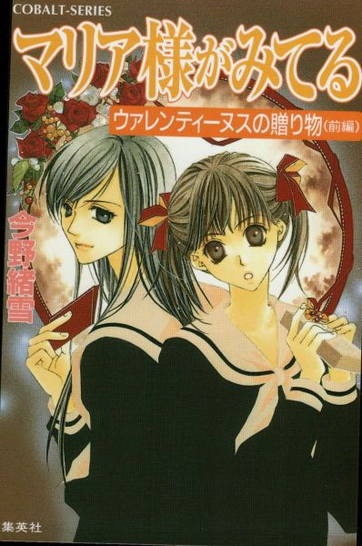
もくじ
びっくりチョコレート
リサーチ
珍客の手土産
部外者
二月十三日
ウァレンティーヌスの悪戯
黄薔薇交錯
十八時五十分、江利子
十九時十八分、由乃
十九時三十分、令
二十三時十分、江利子
二十三時十分、由乃
二十三時十分、令
あとがき
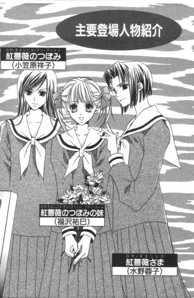
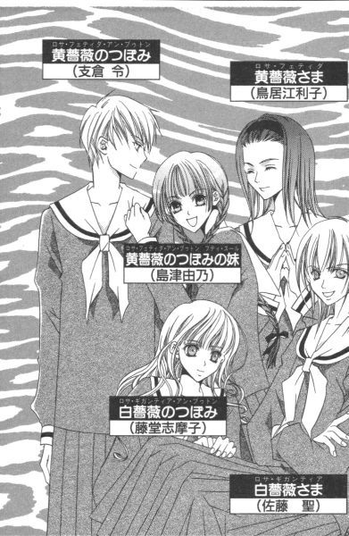
マリア様がみてる ウァレンティーヌスの贈り物（前編）
「ごきげんよう」
「ごきげんよう」
さわやかな朝の挨拶が、澄みきった青空にこだまする。
マリア様のお庭に集う乙女たちが、今日も天使のような無垢な笑顔で、背の高い門をくぐり抜けていく。
汚れを知らない心身を包むのは、深い色の制服。
スカートのプリーツは乱さないように、白いセーラーカラーは翻らせないように、ゆっくりと歩くのがここでのたしなみ。もちろん、遅刻ギリギリで走り去るなどといった、はしたない生徒など存在していようはずもない。
私立リリアン女学園。
明治三十四年創立のこの学園は、もとは華族の令嬢のためにつくられたという、伝統あるカトリック系お嬢さま学校である。
東京都下。武蔵野の面影を未だに残している緑の多いこの地区で、神に見守られ、幼稚舎から大学までの一貫教育が受けられる乙女の園。
時代は移り変わり、元号が明治から三回も改まった平成の今日でさえ、十八年通い続ければ温室育ちの純粋培養お嬢さまが箱入りで出荷される、という仕組みが未だ残っている貴重な学園である。
さて、リリアン女学園も二月を迎えた。
二月の行事といってまず一番最初に思い浮かべるのはバレンタインデー。
誰？ 節分なんて言っているの。
考えてもみて。鬼のお面を作ったり、大声張り上げて豆をまいたりして純粋に楽しめるっていうの、小学校中学年がギリギリのラインじゃない？その証拠が、この時期のデパート。食料品階の大きなスペースを使っただけじゃまだ足りなくて、普段はバッグやスカーフのバーゲンしているような場所に特設会場をこしらえて、これでもかってチョコレートを売っているじゃない。これが豆まき用のカリカリ大豆だとそうはいかない。せいぜい、スーパーでレジ近くのワゴンに積まれているくらいが関の山。
味だって、甘くて口の中でとろけるチョコレートの方が断然勝ち。シチュエーションだって、鬼に豆を投げつけるより、好きな人にチョコレートを差し出す方がいいに決まっている。
え？ 女子校のリリアンにバレンタインデーが関係あるか、って？
ご心配なく。人を想うという尊い気持ちの前に、性別なんて関係ないはず。頭の固い先生たちも、その日ばかりは見て見ぬ振り。
だから二月十四日という日は、チョコレートに添えて、胸にしまい込んだ想いや日頃の感謝の気持ちなんかを差し出す絶好のチャンスなのだった。
びっくりチョコレート
リサーチ
１
「バレンタインデー？」
目を瞬かせて、由乃さんが聞き返した。
「えー、もうそんな話題がのぼる季節なの」
それは放課後、薔薇の館に向かう途中の廊下を二人で歩いている時、ふと思い立って祐巳がふった話題だった。
生徒会役員選挙も無事に終わったことだし、そろそろ初バレンタインデーをどうするか考えなきゃって思い始めたものだから。
「もう、って。当日まで一ヶ月切ったら、デパートだってスーパーマーケットだってバレンタイン商戦始まってるよ」
「そうか、そうだよね。......三週間もないか」
由乃さんは手袋したまま指を折って、「うーん」と小さく唸った。何に関しても、祐巳の一歩先を歩いているような人が、バレンタインデーという一大行事を忘れているなんて珍しい。先手必勝が座右の銘の由乃さんなら、季節を先取りしていそうなものなのに。
「思い出したくないことは考えないようにできているのかな、人間の頭って」
「何、それ」
祐巳は思わず聞き返した。
丁度、ポケットの中で使い捨てカイロを握って温めた手を、吹きさらしの耳にヘッドホンみたいに当てていたから、良く聞こえなかったのだ。
「言葉の通りよ。バレンタインデーって、気が重い」
「どうして。令さまにチョコレートあげないの？」
「あげてる。毎年。......ということは、今年もあげないとだめよね」
由乃さんたら、本当に気が重そうにつぶやいた。気が重いついでに、足も重くなってついには止まってしまった。
校舎を中庭の方に出た所。目の前には、リリアン女学園高等部生徒会室である薔薇の館が姿を現していた。
「だめ、ってことはないだろうけど。毎年の物が、今年に限ってなかったら変じゃない？」
「そうだよね。『黄薔薇革命』以降初のバレンタインだけに、あげなきゃかなりへこむだろうなぁ。令ちゃんの性格上」
「あげたくないんだ、由乃さん」
話が話であるだけに、薔薇の館に到着したはいいが中に入るに入れず、仕方なく扉にもたれて話の続きをした。祐巳は本当は寒くて仕方なかったけど、こちらから振った話だったし、万が一にも令さまに聞かれたら大変って思って我慢した。令さまは由乃さんのことになると、確かにちょっとしたことでもへこむのだ。
「あげること自体はね、嫌じゃないんだ」
だけど由乃さんの場合、あげる物が問題らしい。
「相手が令ちゃんでしょ？ このプレッシャーってわかるかな？年々大きくなるチョコレートケーキと引き替えに、こっちは何を渡せばいいわけ？」
「えっ、何、令さまからもプレゼントあるの？」
「そうよ」
聞けば、毎年バレンタインデーにはチョコレート菓子を交換し合っているとか。それとセットして、一月後のホワイトデーにはまたもやキャンディーやらクッキーやらの交換が行われるという。
「年々大きくなるチョコレートケーキか......」
一瞬うらやましいと思ったけど、もらう立場になって考えれば、それは確かにズッシリ重いかもしれない。
由乃さんのお姉さまである支倉令さまは、ベリーショートヘアで竹刀振り回しているような人で、見た目はかなりあれだけど、その内面はとても女の子でお菓子づくりなんかさせようものなら、クッキーでもケーキでもそれこそプロ顔負けの物を作ってしまう腕の持ち主なのだった。
「それでも今まではまだましだったわ。手術前の身体が弱い私でしょ？多大な期待はされないっていうか。市販のチョコレートや市販のチョコレートをくり抜いただけの物でも許されていたけど──」
今回からはそうはいかない。
おまけに、由乃さんのところは一度破局して新たにつなぎ直した関係ということもある。ここは、いつも以上に手を掛けたチョコレートを作って手渡さないことには格好がつかない。由乃さんは、いろんな方向からプレッシャーを受けているようだった。その結果、潜在意識がバレンタインデーを思い出さないように封印していたのかもしれない。
きっと令さまは、由乃さんがくれた物ならたとえ市販のチョコレートでも喜ぶとは思う。だから「市販のチョコレートを許さない」のは由乃さん自身で。結局は、自分で自分を追い込んでいるだけなんだろうけど。
（......）
由乃さんもそのことは十分に知っているのだ。それがわかったから、祐巳はあえて口にしなかった。馬鹿げているってわかっていても、真剣に悩んだり愚痴ったりしたいことはあるのだから。
「何でチョコレートって決まっているんだろうな」
由乃さんの唇から、白い息が大きく吐き出された。
「いいんじゃないの？ 違う物でも。例えば手作りの何かとか」
「手作り？」
ぴくり。由乃さんの眉毛が歪んだ。
「あっ......！」
言ってすぐ、祐巳は「しまった」と思ったけど、もう遅い。友達に救いの手を差しのべたつもりが、バランス崩して自分から泥沼に陥ってしまった。
「手編みのセーターとか？ マフラーとか？」
げんなりと、といった表現がぴったりの顔をして由乃さんが言った。
「......ごめん。うっかりしてた」
「いいの、祐巳さんのせいじゃないもん」
今由乃さんの手を温めている手袋は、令さまの手作りだった。手袋だけじゃなく、由乃さんが教室で愛用している膝掛けも冬用の座布団カバーも、すべてが令さまのお手製なのだ。
令さまという人は、お菓子づくりだけじゃなく、編み物の腕もプロ級。そういう手先の器用な人に対して、いったい手作りの何をプレゼントしろというのだろう。お姉さまが違うと、思いも寄らない悩みが生まれるものだなぁ、と祐巳は思った。
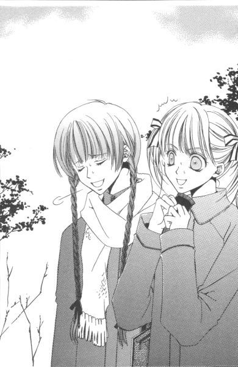
「参考にならなくてごめんね」
肩をすくめてから、由乃さんはドアノブに手を掛けた。
「え？」
「今度のバレンタインデー。祐巳さん、祥子さまにチョコレート差し上げるんでしょ？私がアドバイスできたらよかったけど」
「すごい。何もかもお見通しなんだ」
さすが、由乃探偵。思わずその眼力を誉めると、苦笑が返ってきた。
「祐巳さんがわかりやす過ぎるんだけどな」
呆れたようにつぶやく。百面相って白薔薇さまに言われるけど、本当に頻繁に思ったことが顔に出ているようだ。
扉を開けると、ちょっとだけ肌に感じる温度が高くなって、そして二階の談笑が微かに聞こえてきた。
「あ」
その中に、二人はそれぞれ自分のお姉さまの声を聞きつけ、目を輝かして我先にと階段に急いだ。お姉さまに見つかったら、「はしたない」と注意されるほどスカートの裾が翻った。
バレンタインデーのことを考えると、祐巳の胸は高鳴る。
わくわくとドキドキが混じり合って、今から居ても立ってもいられない気分になるのだった。
それが、確か一月の終わりの出来事。
２
それから少し経ったある日。
「バレンタインデー？」
多大な期待はしていなかったけれど、志摩子さんは「何のこと？」って感じに首を小さく傾げてほほえんだ。
「......えっとね」
痒くもない頭をぽりぽりとかいて、祐巳は言葉を詰まらせた。
予想通りというか何ていうか。志摩子さんの対応ったら、どう見ても例年の二月十四日、誰かにチョコレートを進呈している女の子のそれとは違う。
「嫌だ、祐巳さん。私だってバレンタインデーくらい知っていてよ」
お上品にコロコロと笑う。ああ、よかった、と祐巳はほっと一息ついた。バレンタインデーの説明を一からしなきゃいけなかったら、どうしようかと思った。
「聖ウァレンティーヌスとか、聖ヴァレンティヌスとか、いろいろ発音されるけど。日本では聖バレンタインって呼ぶわね」
「ウァレン......？」
「ウァレンティーヌス。殉教した、イタリアの聖人の名前よ。二月十四日は、その祭日ね」
「ふーん」
志摩子さんの説明、何だか本格的。格調高くさえある。
惜しむらくは、お聖堂で聞けなかったことだ。ここは体育館の中にある更衣室。体育前の休み時間であれば、嫌でもクラスメイトたちの太股とか下着姿とかが目に飛び込んでくる。
話に夢中になって着替えの手がお留守になっていた祐巳は、そこで我に返ってペチコートを脱ぐと膝上丈の黒いスパッツを穿いた。それからワンピースとババシャツ代わりに着込んでいた七分袖のＶネックＴシャツを脱いで、「１桃35福沢」というゼッケンが縫いつけられた白の襟付き体操着を被る。不意打ちでむき出しになった二の腕が、半袖の下で鳥肌をたたせた。仕方ない、日頃過保護にしている報いだ。
「いつの間にか日本で定着してしまったけれど、チョコレートとは無関係よ」
体操着に着替え終わった志摩子さんは、綿菓子のようなふわふわの巻き毛を飾りっ気ない太い黒の輪ゴムで一つに束ねてから、クラスカラーである桃色の鉢巻きを額にキュッと締めた。志摩子さんはどこかふわふわと取り留めもない感じだけど、常に背筋が伸びていて姿勢がいい。寒いから暑いからってだらけたりしない。いつでも身が引き締まっているっていう感じ、っていうか。外見は天使みたいにきれいで、何考えているかわかんないから、ある種ミステリアスでさえあるんだけど。
「じゃ、白薔薇さまにチョコをあげないの？」
声を潜めて、祐巳は志摩子さんの耳にそっと尋ねた。
「あ、そこに話がいくのね」
やっと合点がいったというように、志摩子さんはほほえんだ。バレンタインデーどうするの、って話が向けられたら、普通、誰かにチョコレートを渡すかどうかを質問されているってすぐにピンときても良さそうだけど──。
「チョコレートね......」
「うん。志摩子さんが白薔薇さまの妹になったの、私より少し早いくらいでしょ？だから、初めてのバレンタインデー、どうするのかなって」
リサーチっていうの？ 少しでも多くの情報を仕入れて万全な対策をとろうと、まあそんな風に思いついて質問しただけなんだけど。由乃さんのところは、まるっきり当てにならなかったし。
「......考えてもみなかったわ」
「そうだろうね」
別にガッカリもしなかった。志摩子さんの最初のクエスチョンマークで、ほとんど諦めていたから。
祐巳と志摩子さんとでは、バレンタインデーに対するイメージが全然違う。だって、片やウァレンティーヌスだもん。チョコレートを贈るなんていう俗っぽいこと、生まれてこの方やったことがないかもしれない。......って、お父さんにもあげないのかな。
「参考にならなくて、ごめんなさいね」
志摩子さんは、由乃さんと同じ様な言葉をつぶやいて話を締めくくって更衣室を出ていった。
トレーナーとジャージのトレパンを追加しても、二月の体育は厳しい。身体を温めるための軽いランニングも、走り始めは布地の間からすーすー風が入って、まるで我慢大会だった。かじかんだ指先に息を吹きつけながら、祐巳は突き指しないようにしようと思った。
今日の体育は、バスケットボールだった。
３
「そりゃそうよ」
蔦子さんが豪快に笑った。
「由乃さんや志摩子さんは、どっちも特殊なケースだもん。お手本にしようとした、祐巳さんのほうが間違い」
「ふむ」
言われるまでもなくその通りだと自認している祐巳は、腕組みをして唸った。志摩子さんに「ごめんなさいね」と言われた日の午後。移動教室で理科室へ向かう途中の廊下を歩きながら、蔦子さんはポケットサイズのカメラを祐巳に向けた。
「だからといって、私に聞いても無駄よ。生憎、姉も妹もいない身の上ですから」
祐巳だって、そんなこと当てにしてやしない。
「蔦子さんさぁ、部活の中で憧れの先輩とか、いないの？」
「いないわ」
顔からカメラを外して、即答。それから「私を誰だと思っているの」という、いつものセリフが飛び出した。
「写真部のエース、武嶋蔦子さんです」
「その通り」
縁なし眼鏡が、キラリと光る。
「私以上の腕をもつカメラマンが、リリアンにいるとでも？」
蔦子さんの回答は、ちょっと質問の趣旨とは外れていた。「憧れ」を「尊敬」という意味に受け取って、目標とすべき先輩なんかいないと言っているようだ。まあ彼女の場合、自分以上のカメラの腕という条件が満たされて初めて、特定の先輩と意識できるのかもしれないから、あながち間違ってもいないのかもしれないけど。
「そうか、残念」
「何で？」
「この機会に、逆指名」
「由乃さんみたいに？ やめてよ」
うんざりしたように、蔦子さんは口をへの字に曲げて首をすくめた。『黄薔薇革命』のことを思い出したのだろうか。そういえば蔦子さんもまた、本家本元である由乃さんは脇に置いておいて、後追い破局の復活姉妹に嫌気をさしていた一人であった。
考えてもみて、と蔦子さんは瞳を輝かせた。
「リリアンには素敵な生徒がたくさんいるわ。それを一人に絞るなんてできると思う？第一、私に姉なり妹なりできてごらんなさい。彼女以外の生徒を被写体にすることに対して、支障が出てこないとも限らないじゃない」
「なるほど」
ということは蔦子さん、三年間通して独り身を守るという決心をしているらしい。ご立派というか、何というか。裏っ返して考えてみれば、今の生活をあと二年と少し、変えるつもりはない、と。盗撮ギリギリの行為、少しは改めた方がいいとは思うんだけど。
（しかし）
やっぱり思った通り、蔦子さんも参考にならないわけだ。知らずに祐巳がため息をつくと、蔦子さんは「参考にならなくてごめんなさい」と言う代わりに一つアドバイスをくれた。
「桂さん辺りに聞き込みすれば情報は得られるだろうけど、聞くだけ無駄だと思うよ」
「どして」
「想像つくじゃない。型通りのバレンタインデー」
「うーん」
確かに。──って言ったら、桂さんに失礼だけど。本当に、確かに桂さんの学園生活って絵に描いた定番だから。でも、バレンタインデーに面白味とか意外性とかって必要ある？
「祐巳さん、初心に戻って考えてみなさいよ」
「しょしん？」
「何で情報収集しているか、って。あなたが今回チョコレートをあげようとしている相手が、あまりに大物だからでしょ？だから万全を期したいんでしょ？だったら、一般生徒のエピソードなんかに耳を傾けちゃ駄目よ。あなたに本当の意味での情報を提供してくれる人物は薔薇の館の中にいる、違う？」
「でも、由乃さんも志摩子さんも当てにならなかったよ」
「何で一年生じゃなきゃいけないの」
「へ？ でも、参考にしたい私が一年生なんだから......」
祐巳がつぶやくと、蔦子さんは呆れたように指を一本立てて言った。
「二年生だって三年生だって、一年生の時代を経験しているのよ」
と。
４
「お姉さまにチョコレート？ うん、去年贈ったけど。どうして？」
掃除が終わったらすぐ校舎裏の武道館に走って、部活が始まる前の令さまを捕まえた。
「あ、いえ、参考までに教えていただけたらなぁ、なんて思いまして。あの、まさか特大チョコレートケーキじゃないですよね」
「嫌ね。そんなの学校に持ってこられるわけないじゃない」
令さまはカラカラと笑った。それから「さては由乃がしゃべったわね」なんて口では言いながら、満更でもなさそうな顔をした。だめだ。令さま、全然由乃さんの気持ちわかってない。由乃さんは別に特大チョコレートケーキを自慢した訳ではなくて、むしろ逆なんだけど。
でも今の話題に由乃さんの苦悩は直接関係ないので、申し訳ないけど横に置いておいて。
「そうですよね」
と、祐巳は令さまに合わせてハハハと笑い返した。
「ささやかな物。鞄に入るくらいのね」
令さまは両手の人差し指と親指四本使って、空中に四角を作ってみせた。丁度文庫本くらいの大きさだろうか。確かにそれくらいの箱ならば、「ささやか」と言ってもいいだろう。学校に持ってくるには無難な大きさ。
由乃さんと黄薔薇さまではずいぶん扱いが違うように見えるけれど、考えてみれば手作り特大チョコレートケーキを贈られるというのは、隣に住んでいる従妹ならではの特権であるのかもしれない。由乃さんにとっては、重荷という名前の。
やっと参考になる情報に巡り会える、って思った。蔦子さんの読みは、やっぱり正しかった。確かに、今年の一年生より去年の一年生の話を聞いた方が、より為になることに違いない。一年前のことだから、すでにその結果まで出ているというのも好都合だった。この際だからついでに受け取ったお姉さまの反応とか教えてもらえれば、より完璧なバレンタインデーをセッティングできそうだ。
令さまは去年、今の祐巳と同じつぼみの妹だったわけだから話を聞き出すのにこれ以上ないほどうってつけの人物。こんなこと、同じ立場でも、チョコをあげる相手である祥子さまには聞けるわけない。
「で、中身は」
ワクワクして尋ねる。有名チョコレートメーカーの生チョコか、それとも大人の味のチョコボンボンか。
「中身？ ああ、チョコレートの種類？」
頭の中で、先日覗いてきたデパートの食品売場の風景が思い出された。ささやかな箱には高級チョコがよく似合う。
「えっと、参考までにお聞かせ願えれば、と」
梅干しくらいの大きさで、一個何百円もするようなのだったらどうしよう。でも相手は祥子さま、安っぽいチョコレートなんて口に合わないかもしれないし。いざとなったら郵便局に預けておいたお年玉を下ろしてでも、って決心した時令さまは淡々と言った。
「トリュフのビターチョコレート、計六個入りだったかな」
「トリュフ」
何ともまあ、高そうな響き。デパートのガラス箱に陳列されていた梅干し大のチョコも、そんな名前がついていたっけ。そうそう、目が飛び出る程の値段だった。
で、一般庶民であるところの祐巳は、思わず頭の中で計算してしまった。
一個二百円で千二百円。
三百円で千八百円。
四百円で二千四百円。
五百円で──、というところでやめた。頭がクラクラする。だって一般庶民だから。一口チョコが六個しか入っていなくて三千円なんて信じられない。
お嬢さま学校に通っているといっても、一くくりに束ねてもらっちゃ困る。その家によって、持っている資産とか財力とかはかなり幅があるのだ。昔からぼんやりとはわかっていたことだけど、祐巳は正月、祥子さまのお宅にお邪魔してはっきりと思い知った。
同じ日本に暮らし、同じ学園に通っていても、貨幣価値というものはそれぞれ違うんだって。別に、今の我が家に何の不満はないけど。
「どうしたの、祐巳ちゃん」
「いえちょっと目眩が」
頭の中で、チョコレートの周りをチョウチョのように紙幣が飛び回っている。
「祥子に、トリュフチョコあげるの想像して疲れた？」
「はぁ。そんなところです」
「大丈夫、そんなに大変じゃないから頑張ってみれば？」
「──」
大変じゃない、と言われても。比較的近いと感じていた令さまの貨幣価値も、祐巳とは異なっているのか。頑張れ、って。ますます萎れそうだ。
それに、高ければ高いほど、初心っていうのかな、バレンタインデーにチョコをあげたいっていう最初の気持ちからずんずん遠ざかっていくみたいな、そんな気がした。俗っぽいのかな、やっぱり。
「レシピ書いてあげるよ」
令さまは祐巳の頭を撫でてほほえんだ。
「レ、レシピ？」
「トリュフを作りたいならね。祥子には内緒で、ちょっとくらいなら手伝ってあげてもいいし」
祐巳は、そこではたと気がついた。
「あ、あの。レシピって、もしかしてトリュフチョコの作り方ってことですか」
「ん？」
令さまの「はてな」顔を見れば、もしかしなくてもそれ以外にないようだった。令さまが黄薔薇さまに贈ったチョコレートは、由乃さん同様手作りというわけで。
「何、祐巳ちゃん」
「......いえ」
祐巳は言葉を濁した。勝手に早のみこみしていたことを、わざわざ告白することもない。
それにしても令さま、超人だ。一方でトリュフチョコ、もう一方ではチョコレートケーキをほぼ同時進行で製作していたことになる。
しかし、それではやっぱり参考になりそうもない。だって祐巳は自慢じゃないけれど、お菓子づくりなんてお母さんのお手伝いでドーナツの型抜きくらいしかしたことがないのだ。そんな人間にいきなりトリュフチョコレートって、そんな。お金云々以前の問題じゃないの、技術なんて。
令さまは手伝ってくれるといったけど、令さまがほとんど作るくらいのことをしてもらわなきゃ来年になってもトリュフなんてできあがらないと思う。令さまが大半作ってくれたとしても、それは何か「お手製」としては間違いなくズルって感じだし。それにしても、まさかトリュフチョコレートを手作りするなんて考えなかった。
「ありがとうございました。考えてみます」
祐巳は、頭をちょこんと下げてからその場を去った。チョコレートだけに甘く考えていたけど、なかなかに前途多難のようだった。
珍客の手土産
１
二月に入って間もなくの放課後。薔薇の館に珍客が訪れた。
「ごきげんよう、どなたかいますかー。......って、つぼみが揃っているのわかっているから来たんですけど」
「──」
取り次ぎに出た祐巳は、館の玄関で不敵に笑う人物を見て、とっさに回れ右して階段を駆け戻ろうかと思った。どうしてこの人がここにいるの、って。
「あらまあ、ずいぶんと及び腰なこと。尻尾がお腹の下に入っちゃっている子犬ちゃんみたい」
「こ、子犬......」
「ご挨拶がまだだったわね。ごきげんよう」
「......ごきげんよう。薔薇の館にようこそ」
しかたなく、祐巳はそう告げた。本当は歓迎なんかしてないけど。
「今日はつぼみに話があって来たの。彼女たちは二階？」
「はあ」
「上がらせてもらうわね」
「えっ」
返事も待たずにどんどん進んで階段をギシギシ上っていったので、祐巳もあわてて追いかけた。
新聞部の部長、築山三奈子さまは今日は珍しく堂々となさってのご登場だった。いつもは、ご自分こそ犬のようにスクープ追い求めて方々嗅ぎ回っているくせに。
この人は要注意人物。騒動が起きた所を探してみれば、中心近くでその姿を見つけることがままあるのだ。
彼女が騒ぎを起こすのか、騒ぎが彼女を呼ぶのだろうか。とにかく、祐巳たちにとっては「触らぬ神に」といった感じの人だった。薔薇の館の鬼門方向に住んでるんじゃないかな、この人。──って、またカトリックに似合わないこと考えちゃった。
ビスケット扉で追いついて、祐巳は辛うじて先に部屋に入れた。
「あのっ、今、築山三奈子さまがっ」
告げるが早いか、三奈子さまが祐巳の頭を手で横に倒して姿を現した。
「失礼ね、それじゃまるで敵襲を知らせる家臣じゃない」
違うのか、って突っ込みたい。けれど曲がりなりにも相手は上級生だし、一応お客さまなわけだからぐっと堪えた。
その時。
「本当に。祐巳は少し落ち着きが足りないわね」
座ってお茶を飲んでいた祥子さまが、ソーサーにカップを戻して優雅に立ち上がり、そして三奈子さまを迎えた。
「妹が、失礼いたしましたわ。いらっしゃい三奈子さん」
それはまるで上流社会の有閑マダムがサロンに客を迎えるみたいに、華やかな仕草。少女漫画ならばバックに薔薇の花を背負っている、映画なら奏者の姿がないのにバロック音楽が流れてきそうなシーンだ。
そんなに友好的に笑わなくても、って思うくらい唇の端を上げて。その上、みんなの前で（可愛い）妹のこと「落ち着きない」なんて言うんだから、祥子さまったら。
ちょっと面白くなかったけど、祐巳は思い直して機嫌も直した。だって普通身内には厳しく、お客の言動は多少大目に見るものだって気づいたから。祥子さまは祐巳の「お姉さま」で、身内として接してくれているんだって思うことにしたのだ。
三奈子さまは、勧められた椅子に腰かけて足を組んだ。身のこなしにかなり神経を集中させていたようだけど、悲しいかな生まれも育ちもお姫さまの祥子さまの前では、まるで人まね小猿のようにしか映らない。それでもめげないのが三奈子さま。
「楽しくご歓談のところ、お邪魔してごめんなさいね」
「いいえ、構わなくってよ。ご一緒にお茶でもいかが」
部屋には、受験で多忙の薔薇さま方を除くいつものメンバーが揃っていた。祥子さま、令さま、志摩子さんというつぼみと呼ばれる三人と、由乃さんそして祐巳。
祥子さまの艶やかな唇が「お茶」と発したと同時に由乃さんが席を立ちかけたけれど、祥子さまが「祐巳」って命じたのでそれは祐巳の仕事になった。
渋い紅茶でも入れてやろうか、って考えたけど、大人げないのでやめた。渋いお茶飲ませて仕返ししてどうする。第一そんなことをさせるために、わざわざ祥子さまが指名したわけじゃないんだろうから。
どうぞ、って三奈子さまの前に温かい紅茶を注いだカップを置いて、祐巳はさっきまで座っていた席に静かに戻った。ずっと見られていたのか、隣の席の祥子さまと目があってドキッとしたけど、それは胸がときめく感じじゃなかった。良からぬ心を見透かされたような気がして、少し動揺したのだ。実際には、お茶に悪戯しなかったんだけど。
心を落ち着かせるため、自分のカップに手を伸ばす。すでに温もりの消えたカップの持ち手から判断するに、その中に入っている液体はすでにホットティーではなく、限りなく氷抜きアイスティーに近い存在へと変化していることが理解できた。その、冷たい紅茶を祐巳が口に含んだ瞬間、
「バレンタインデーはどうなさるのかしら」
思わず吹き出しそうになる言葉を、三奈子さまはさらりと言った。
「バレンタインデー？」
由乃さんと志摩子さんと令さまが、ほぼ同時に祐巳の顔を見た。その場にいれば、蔦子さんも見たことだろう。
しかし、実際その場にいる祥子さまは、当たり前だけど祐巳を見ない。客人から視線を逸らさず、微かに片眉を上げると冷ややかに聞き返した。
「バレンタインデーをどうするか、というご質問に聞こえましたけれど。それにお間違えありませんこと？三奈子さん」
「え、ええ」
祥子さまの冷たい視線に少し怯みかけたようだが、さすがは新聞部の部長にして「リリアンかわら版」の編集長。三奈子さまは、一度咳払いをしてから話を続けた。
もちろん、自分が薔薇の館の中にいる生徒たちにどう思われているかくらい、とっくに予想はついているはず。「それでも」と来たわけだから、それなりの覚悟と理由があるのだろう。冷視されたくらいで、尻尾巻いて逃げるわけにはいかない。
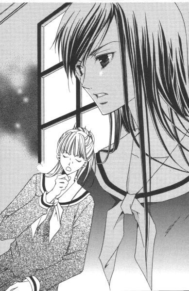
「バレンタインデー。心の内に秘めた想いを、大切な人に打ち明けるためのすばらしい日ではありませんか」
三奈子さまは突然立ち上がり、自分の胸の前で両手の指を交互に組んで、とろんとした目で壁を見た。いや別に壁の材質や模様が好みだったわけじゃなくて、三奈子さま以外はそのまま着席していたために障害物が何も無くて、結果的に壁を見つめる格好になっただけなんだけど。しかし本人の気持ちはもう壁の向こう、どこか遠くの世界に行っちゃってる。
三奈子さまは、先日志摩子さんが祐巳に教えてくれた宗教上のバレンタインデー基礎知識を語った後、それからなぜウァレンティーヌスの祝日である二月十四日が愛を告白する日となったかを熱く語った。いろいろ説はあるらしいけれど、この頃鳥が「つがい」になるからなんだって。当然、祐巳は──知らなかった。
「三奈子さんが、二月十四日に多大なる思い入れがあることだけはわかりましたわ」
コホン、と咳払いして祥子さまがつぶやいた。平静を装ってはいるけど、三奈子さまの熱の入った弁論にはかなり閉口しているご様子。さりげなくレースのハンカチで、こめかみに浮かんだ汗を拭って続けた。
「あなたの思い入れが詰まったそのバレンタインデーが、私たちにどんな関係があるのかがいまひとつわかりにくいのですけれど」
「まあ、これだけ説明しているのに察していただけないなんて」
三奈子さまは目をむいて、わざとらしく驚いた表情を作ってみせた。結構、いやかなりこの場の雰囲気に浮いている。
「あのさ、三奈子さん。単刀直入に言ってもらえないかな」
令さまが、痺れをきらしたように話に割り込んできた。祐巳も心の中で大きくうなずく。「これだけ説明しているのに」って三奈子さまは言うけど、何が言いたいのかは少なくとも祐巳には理解できなかった。いやたぶん、それは三奈子さまを除くこの場にいる人間全員の一致した意見だと思う。だって、みんな怪訝そうな顔をしているから。そりゃ、三奈子さまは当のご本人だから、タネを知っている手品みたいにすべてお見通しだろうけど。
「あら、そう？」
その場の雰囲気にやっと気づいて、三奈子さまは持参した茶封筒から書類を取り出してテーブルの上に出した。
「単刀直入ね。いいわ、それじゃつぼみの方々にお願い。二月十四日は是非とも、新聞部のためにスケジュールをあけて頂戴」
「は!?」
つぼみの三人はもちろん、祐巳も由乃さんも同時に聞き返した。確かに単刀直入だけど、今度は間をすっ飛ばしているから何が何だかわからない。
「つまりね、新聞部のバレンタイン企画に協力していただきたいの。山百合会と新聞部の合同企画ということで、バレンタインデーを盛り上げたいというわけね。日頃お世話になっている一般生徒に、楽しんでもらいたいと思いませんこと？皆さまの反応から、山百合会では特別な行事も計画されていないようにお見受けしますし」
三奈子さまは身を乗り出しながら、テーブルに広げられたまま未だ誰の手も伸びない書類をつぼみの三人に配った。
「いったい何をするつもり？」
祥子さまは、書類を引き寄せながらつぶやいた。
きれいにプリントされた、そのＡ４のコピー用紙はつぼみの分しかないようで、あぶれた由乃さんと祐巳は必然的に各自お姉さまに引っついてそれを覗き込むこととなる。
「企画書のコピーに目を通していただけるとわかると思うけど──」
「『宝探し、つぼみのチョコレートはどこだ!?』って、......何なのこれは」
令さまが思い切り立ち上がって、三奈子さま曰く「企画書」をバシバシと叩いた。そりゃそうだ。予告もなしに突然突きつけられた企画書の中では、当然のように自分が参加することになっているんだから。おまけにタイトルからは「ただの協力者」ではなく、「メインパーソナリティー」って匂いがぷんぷん漂っているわけだし。
「言葉通りの意味よ。つぼみの三人が校内に手作りチョコレートを隠すの。それを見つけた生徒が勝ち」
三奈子さまは、立ち上がった令さまを座ったまま見上げてニコリと笑った。
「つまり、優勝者は最大三名ということになるわけ」
祥子さまのチョコ、令さまのチョコ、志摩子さんのチョコ。各一個ずつ秘密の場所に隠して、それを探し出すゲームをするということだった。三奈子さまの企み、もとい企画が徐々にではあるがぼんやりとした輪郭を現してきた。
宝探しゲーム。ちょっとワクワクしたりして。
「しかしわからないな。新聞部の部長が、どうして山百合会にその企画をもってくるわけ？」
これまで勝手なことしてきたんだから、今回だって自分たちで全部やったら、って令さまは立ったまま腕組みして言った。確かに学校新聞である『リリアンかわら版』は、今まで結構独自の道を突っ走ってきた。どちらかっていうと、山百合会の幹部たちとは相容れないものがあるっていうか。はっきり言っちゃうと、新聞部は迷惑な部活というレッテル貼られているわけで。また何かとんでもない罠が仕掛けられているんじゃないの、って警戒心起こされて当然だと思う。
「ご意見はごもっともなんだけど、令さん。悲しいかな、新聞部には華がないのよ」
「華ねぇ」
相変わらず立ったままの令さま、隣に座っていた由乃さんに「お座りになったら、お姉さま」って手を引っ張られてやっと着席した。
「イベントっていうのは、参加者が多いほど盛り上がるわ。参加者を募るためには、優勝商品に魅力がなければだめなの。でも、予算があまりないから高価な品をプレゼントするわけにはいかないでしょ？そこで、つぼみたちにご協力いただきたいというわけ。おわかり？」
新聞部と山百合会の今年度予算の予備費を出し合って、イベントの資金にするつもりだと三奈子さまは説明した。イベントの資金っていうのは、まあ、チョコレートの材料費とかにラッピングのための代金とかそういうものらしい。すでに予算をはじき出して、企画書に計上してあった。思った以上に、三奈子さまはしっかりしてる。
「それで、新聞部のメリットは？」
あの新聞部が、裏方に徹して満足するわけがない。令さま、さすがにわかっている。
「また随分とストレートに聞いてくるのね、令さんは」
三奈子さまは、ちょっとだけ首をすくませて笑った。
「悪かったわね。性格上、回りくどいの苦手なの」
「わかったわ。じゃ、令さんが大好きな『単刀直入』にお答えしましょう。このバレンタイン企画が実現した暁には、新聞部は『リリアンかわら版』紙上で独占レポートする権利をいただくわ」
バレンタイン企画の独占レポート！
「......新聞部が考えつきそうなことね」
半ば呆れたように、祥子さまが密やかなため息をもらした。それから突き返すように、そっと企画書をテーブルの上に滑らせる。
「せっかくだけど、協力できないわ。賛同できない箇所があるから」
「どこかしら。できる限り、ご希望に添えるよう修正させていただくつもりだけど」
「いろいろあるけれど、決定的な箇所はチョコレートよ」
「チョコレート？」
「あ、それは私も引っかかった」
令さまも手を挙げて、祥子さまの意見に賛成した。
「宝探しの趣旨はわかったけど、チョコレートはいただけない」
チョコレートは、美味しくいただくもの。だから「いただけない」は言葉の綾っていうか、まあそれくらいは祐巳にだってわかっている。令さまは、チョコレートは宝探しの「宝」に不適当だと言っているんだ。
「わかった。かさばるからだ！」
頭の中で考えていたことを、祐巳は思わず口走ってしまった。その瞬間、一気にみんなの注目が集まって、祥子さまがお茶も飲んでないのにものすごく渋い顔をした。
「す、すいませんっ」
思い切り頭を下げると同時に、テーブルにおでこを強打。もう、フォローの仕様もない。
「......祐巳。周囲が混乱するから、少し静かにして頂戴」
「はい......」
どうして、いつもこんな風になるのだろう。テーブルの上に打ち付けた頭を、このまま一生上げずに済ませられたらどんなにいいか。
「大丈夫？」
由乃さんが笑いを堪えて聞いてきた。
「......うん」
おでこをさすりながら、涙目で答える。ぶつけた所は相当痛かったけど、それより何よりダメージは心の方が大きいかも。またしても、お姉さまに恥をかかせてしまった。
「祥子さまや令さまは、衛生的な面を気にしていらっしゃるのでしょう？」
クラスメイトのよしみだろうか、志摩子さんが助け船を出して話を元の位置に戻してくれた。
「一言で片づけるなら、まあ、そういうことね」
「問題は手作り、というところかな。市販でも、人の口に入る物を長時間放置するというのには抵抗ある」
ちょっと見美少年の令さまは、毎年見知らぬ生徒からチョコレートがプレゼントされるらしい。それも、シャイなのか下駄箱の中とか机の上とかにこっそり置いてある物が非常に多いとか。そういうのに限って無記名だったりするそうで、それはやっぱりちょっと怖いなあと祐巳も考えを改めた。話を聞くまでは、もてる人はチョコレートたくさん食べられていいな、なんて考えていたけど。
何もつぼみたちの作ったチョコレートが汚いってわけではないけど、何かあったら大変だし、想像したくないけど先に見つけた誰かに悪戯されたりしたら、って考えるとやっぱり食品を「宝」にするのは適当ではないかもしれない。
しかし、そんなところまで先回りして考えられるなんて。さすがはつぼみというか。ますますお姉さまを尊敬しちゃう。勢い、さっきの赤っ恥をリセットして元気復活を遂げた祐巳であった。──がしかし、それの幸福感は瞬きほどの時間しかもたない、儚いものだった。次の瞬間、そのお姉さまの口から出た言葉に、祐巳はハンマーで脳天かち割られたような衝撃を受けた。
「私にしてみれば、チョコレートを学校に持ってくること自体が疑問だわ」
椅子に座っていたから助かったけど、そうでなかったらどたばたコントのようにぴょーんと空中ダイビングするところだった。祥子さまは尚も続ける。
「先生方は、大目に見ていらっしゃるけれど。二月十四日には、また学校中が一日中チョコレートの匂いで充満するかと思うと今からげんなりしてしまう」
「──」
祥子さまは、どうやらバレンタインデーを快く思っていない人であったらしい。とどめの一発は。
「一方的に押しつけられるプレゼントは、迷惑なだけだわ」
（......えっと）
祐巳はできるだけ冷静に、頭の中を整理しようと試みた。
しかし冷静に考えたって興奮して考えたって、出てくる答えは一緒だった。
迷惑。
（ということは、チョコレートを渡すっていう私の計画も無駄っていうことに──）
当初はただショックって感じだったけど、時間が経ってくるとじわじわと暗い気持ちになってきた。
「わかったわ」
三奈子さまがうなずいた。
「確かに、チョコレートを隠すという案は適当ではないかもしれないわ。考えてみたら、校内にチョコレートが氾濫している十四日じゃ、どれが宝かわからなくなってしまうものね」
じゃあ、諦めるのかって思ったけど、そんなことでへこたれていては新聞部の部長の名が泣く。その辺は、素直に見習うべきところだ。
「ちょっと待って」
三奈子さまは一人作戦タイムに入って、企画書とにらめっこしながら何やらぶつぶつ呟いていた。その間、約五分。
「宝を変更すれば、この企画にのっていただける？」
「変更、って。いったい何にするつもりなの？」
「手書きのバレンタインカード。元来二月十四日はチョコレートじゃなくて、カードを贈っていたって記憶しているけれど」
なるほど、考えたな三奈子さま。
──でも。
「手書きカードって、そんなに魅力的かしら？」
志摩子さんがつぶやいた。宝探しの宝に適当か、という疑問。苦労して探し出したお宝が紙切れ一枚って、確かにそう言われればそれまでなんだけど。手作りチョコレートと比べれば、予算とか労力とか、ガタンって落ちるかもしれない。
祥子さまも令さまも、同じ意見らしい。自分たちの文字が、生徒たちを惹きつけるだけの価値を有しているか否か。謙遜でもなんでもなく、冷静な判断でつぼみの三人は否と判定した。
手書きカードでは盛り上がりに欠ける。それをレポートしようという新聞部の企画もまた、空回りの大失敗ではないか、と。
祐巳は祥子さまの手書きカードなら是非とも欲しいと思ったけど、それじゃ「妹ばか」丸出しなので口にはしなかった。
「つぼみの方々からそういうご意見がでるなら、話が早いわ」
三奈子さまは目を輝かせて言った。こういう表情をしている時、頭の中でとんでもないことを考えていることが多いから要注意だ。
「だったらもっと魅力的にしましょうよ」
案の定、三奈子さまは攻めるなら今とばかりに身を乗り出して言った。
「魅力的にする？」
「カードが副賞の引換券になっている、っていうのどう？」
「副賞？」
それ何、ってみんな聞き返す。カードって、カード自体がプレゼントなわけじゃなかったんだ。
「例えば、副賞は半日デート券」
「反対!!」
三奈子さまが言い終わらないうちに、由乃さんが立ち上がって叫んだ。
「絶対、絶対、絶対反対！ そんなの変！ 一個人のプライベートな時間を商品化するなんて、間違ってる！」
由乃さんたら、完全にパニック起こして。見かけはおとなしくて可愛い猫の皮を、すっかり被り忘れていた。黄薔薇革命で大胆だっていう一面が垣間見られたといえども、まだまだ由乃さん神話は健在だから、いつも遠巻きに眺めているような三奈子さまには刺激が強すぎたんじゃなかろうか。長身の令さまに凄まれた時より、明らかに動揺している。
「祐巳さんだって反対よね」
「えっ」
当然一緒に反対運動するでしょう、って顔で睨むから由乃さんは。敵じゃないんだから、もう少しお手柔らかにお願いしたい。
「う......んと」
祐巳は、そこで初めて思案した。正直なところ、話についていくのがやっとで自分の意見なんてまとめている暇はなかったのだ。第一、先刻の失敗をやらかしたばかりだから、できるだけおとなしく目立たなくっていう方針で会議を聞いていたというのが正直なところ。
賛成か、反対か。
問われれば、たぶん反対だと思う。なぜって、やっぱり祥子さまは自分のお姉さまで、ほんの少しでも自分以外の誰かが独占することなんて認めたくないんだ。由乃さんだって一個人のプライベート云々とそれらしいことを言っているけど、本当のところは大切な令さまが自分以外の人間とデートするのが許せない、って思ったはずだ。これがつぼみじゃなくて薔薇さまたちだったら、こんなにも反対するはずはない。
（でも）
山百合会をお手伝いしている立場の人間として意見を求められたらどうだろう。山百合会は常々、一般生徒との間の垣根をなくそうと働きかけている。もっと親しみやすい生徒会を、と。薔薇さまたちがあまりに神聖化されすぎて、近づきがたい存在にならないように。
もし、次の薔薇さまになる現つぼみが一般生徒と親しく交流する機会が設けられるとしたら、それは山百合会にとってプラスに働くことではないだろうか。
そんな優等生みたいなこと考えたりしながら、でも、「やっぱり嫌だ」なんて焼き餅やいてる自分もいるのだが。
「バレンタインデーの日は、学校がありますけれど」
志摩子さんが三奈子さまに尋ねた。
「ええ、だから宝探しは放課後約一時間を予定しているの。大丈夫。参加者が多いと予想されるから、一時間もあれば宝は探し出されてしまうでしょう？それでも見つからないようなら、半日かけたって見つけられない場所ということよ。だから、当日は放課後のみ拘束ということで──」
祐巳が悩んでいる間にも、話はどんどん進んでいる。考えてみれば、受けるも断るもつぼみ次第。妹の意見は、あくまで参考意見に留まるだけだ。
「デートは日曜日にお願いしたいの」
「反対！ 反対！」
由乃さん、無駄だと知りつつ叫び続ける。もう完全にヤケになっている。終いには、令さまが由乃さんの口を手で押さえて黙らせた。確かに、こう「反対」を連呼され続けたら話にならないけど。
「どう思う？」
話を一通り聞いて、祥子さまが残りのつぼみ二人に意見を求めた。
「宝探しというイベント自体は、面白い企画かもしれませんけど」
志摩子さんは、あまり乗り気じゃないという表情を浮かべた。
「ネックは半日デートよね。由乃じゃないけど、人間を商品にするって何か気持ちよくない」
令さまも右に同じ。しかし志摩子さんの反対理由は、半日デートもあるだろうけど、バレンタインデーに引っ掛けてやるっていうのも大きいと思う。二月十四日は聖人ウァレンティーヌスの祭日であって、愛を告白する日ではないから。
「私も反対。じゃあ全員一致で却下ということでいいわね」
そう言ったかと思うと祥子さま、配られた企画書をまとめて三奈子さまに突き返してしまった。
「ちょっと待ってよ」
慌てふためいたのは三奈子さま。返された企画書を再びテーブルに戻して、必死で訴えた。
「せめて、一日くらい検討してくれたっていいんじゃない？」
「あなたに無駄な希望を持たせたら、かえってお気の毒だと思ったのよ」
「気の毒と思うなら！」
三奈子さまは祥子さま、令さま、志摩子さんの顔を一人ずつ見つめながら絞り出すように声を発した。当然、つぼみの妹たちは眼中にない。
「武士の情け、返事は明日の放課後ということにしていただけないかしら」
武士の情け、って。三奈子さまは、いつの時代の人なんだ。
「大見得きってクラブハウス出てきたのよ。その場で断られたなんて、口が裂けても言えないわ」
上目遣いに媚びるような視線向けたって、相手が同性の同級生では無意味だと思う。もちろん祥子さまに通じようもなく、返ってきたのは冷ややかな一言。
「今日のところは黙っていて、明日になったら部員に報告すれば？」
「嫌よ。部室に帰ったら、問いつめられて私絶対に白状してしまうもの。私の妹、しつこいんだから」
「そんなの、こっちの知ったこっちゃない」
この部屋にいる人間の中では比較的武士に近いところにいる令さまにも、武士の情けはないらしい。祥子さま令さまと梯子して、いずれもすげなく断られた哀れ三奈子さま、頼みの綱とばかりに志摩子さんの手をひしと握りしめた。
「志摩子さん、お願い」
「......お願いっておっしゃられても」
「先輩が、こんなに頼んでいるのよ。何とかしてっ」
すごい。
懇願が駄目なら脅しで勝負。押しても駄目なら引いてみろ、っていうわけだ。
「ちょっと、三奈子さん。先輩という立場を笠に着て後輩に言うこと聞かせようってやり方、卑怯じゃない？」
曲がったことが大嫌いな令さまが眉をひそめる。
「何とでもおっしゃい。私は返事を延ばしてもらえればそれでいいの」
（ひえ......）
目立たないように聞き耳を立てていた祐巳だったが、三奈子さまの言いぐさに思わずのけ反った。
本当に、三奈子さまってなりふり構わない人だ。新聞作りのためだったら、何でもするっていうか。それはそれで、一つの生き方ではあるけれど。
「──参ったなぁ」
何とでもおっしゃい、と言われてしまったら最後、もうそこから先のどんな言葉も効力を発揮することはない。令さまは呆れたように肩をすくめ、祥子さまはため息をついた。そこに志摩子さんの澄んだ声がした。
「どうでしょう。別に回答を先延ばししたからといって、私たちに不都合が生じるわけでないならば、ここは三奈子さまの言うとおり明日お返事するということにして差し上げたら」
それ以外に、この場を治める方法は無かった。相手が三奈子さまだけに、下手すれば承諾してもらえるまでつぼみ三人を人質にこの薔薇の館に籠城しそうな勢い。今日のところは、お話を伺うまでにとどめて返事は後日ということにし、早々にお引き取りいただいた方が賢明だろう。
「仕方ないなぁ。でも三奈子さん、答えを先延ばししているのは形式上のことだから。間違っても期待しないでね」
令さまが念を押した。明日になっても、さっき出した答えがひっくり返っていることはないから、って。でも、三奈子さまは大満足のほほえみを浮かべた。
「わかっているわ。ありがとう。それじゃ、明日の放課後にまたお邪魔するから」
三人の気持ちが変わらないうちに、って感じで椅子を立ち上がるとそそくさと部屋を後にする。
「あ、企画書を持ってかえってよ」
祥子さまが呼び止めたけど、
「明日、明日」
と、三奈子さまは振り返りもせずに茶色いビスケット扉の向こうに姿を消してしまった。見送るきっかけを失った祐巳の耳に、スキップのリズムで床板がきしむ音が届いた。
「何なの、あれ」
祥子さまのつぶやきに、一同「さあ」と首を傾げた。
返事を一日待ってもらっただけで、あの上機嫌。三奈子さまは、頭の中で何を考えているのだろう。
「本当に大丈夫なんですか？」
今まで令さまに押さえられていた口をやっと解放された第一声で、由乃さんが言った。
「大丈夫、って？」
「だって、相手は新聞部なんですもの」
由乃さんの指摘は鋭い。今までとんでもないことをやらかしてきただけに、三奈子さまの意味不明な行動はほんのちょっぴり、いやかなり不気味かもしれない。
「でも、まあ、志摩子も言っていた通り、明日になったからといって私たちに不都合が生じるわけもなし」
令さまがカラリと笑った。
「そうね。丸一日で気持ちが変わるということはないと思うわ」
「ええ」
祥子さまと志摩子さんもうなずく。意志の強い人たちだから、自分で出した答えをそう簡単に撤回することはないだろう。
でも、その考えは甘かった。
たった一日。
たった一日答えを先延ばししたことで、不都合は生じてしまったのだ。
ある種、三奈子さまは山百合会幹部マニアであった。彼女は、どうすればつぼみたちを動かせるか、十分すぎるほどに理解しつくしていたのである。
２
「へ？」
とにもかくにも丸一日経って、薔薇の館に赴いた祐巳は思いも寄らない言葉を耳にした。
「だから、引き受けることになりそうなの。二度も言わせないで」
祥子さまは明らかに不機嫌そうだった。
「あの──」
他の人に説明を求める。二階の部屋には、由乃さんと志摩子さんと部活を抜けてきた令さまが、祥子さまほどじゃないけど面白くなさそうな顔をしてテーブルを囲んでいる。
「圧力かけさせたのよ、三奈子さまが」
由乃さんが拳をテーブルに叩きつけた。
「何か仕掛けてくるとは思っていたけど、やっぱりだった。......悔しい！」
「だから、何がどうしたの」
祐巳がさっぱりわからないでいると、令さまが人差し指を一本立てた。
「上からね」
「上？」
素直に天井を見る。穴が空いていて雨漏りするとか、そんなことではないと思ったけど。
「違う、違う。上って言ったら、三年生」
「三年生？ ......あ、薔薇さま方！」
「そ。今日は全員揃っていて、ご丁寧に昼休み妹訪問よ」
「......ああ」
そういえば、一緒に薔薇の館でお弁当食べようって話していた志摩子さんが、昼休みが始まって間もなく突然キャンセルして姿を消してしまったっけ。昼休みに急に委員会が招集されたりすることはよくあるから、気にも留めなかったけど、あの時白薔薇さまが連れだしたのかもしれない。
「あの、それで？」
令さまからバトンタッチ、って感じで祥子さまが解説を続けた。
「新聞部のバレンタイン企画を引き受けるように、って絶対命令。最後のお願いなんて言われて、断れる？」
「えっと」
まあ、普通は断れないだろうな。──と祐巳は思った。だけど、初めて薔薇の館を訪れた際に「お姉さま方の意地悪！」発言を聞いてしまった立場から言わせてもらえれば、祥子さまに限ってはその「普通」は当てはまらないのではないかとも思うんだけど。
「とにかく、臨時会議よ。お陰で今日の部活は出られそうもない」
自分だけにお姉さまの命令が下ったと思い込んでいた令さまは、祥子さまや志摩子さんが反対している限り大丈夫だとたかをくくっていたらしい。だから、放課後早々と道着に着替えて素振りなんかやっていた。薔薇の館から由乃さんが血相変えて走ってきたのを見て、初めてことの重大さを知ったのだ。まさか三奈子さまが薔薇さま三人とも落とすなんて、誰も考えてはいなかった。
ちょうどいい頃合いで、というか。噂の薔薇さま三人が揃って登場したのは、話が途切れて嫌な沈黙が部屋に充満した時だった。
「お待たせ」
紅薔薇さま、黄薔薇さまと続いて、しんがりは白薔薇さま。セットで見るのは生徒会役員選挙の立会演説会以来ではないだろうか。お三方とも受験疲れなんか全然感じられないほどお目々キラキラ、お肌つやつや、髪の毛サラサラで麗しい。お美しすぎて、目がつぶれそう。
「別に、お待ち申し上げてなんかいませんでしたけど」
祥子さまは可愛くないセリフを吐いたけど、その拗ねた表情は十分可愛かった。迷惑のタネを蒔きにきたとわかっていても、紅薔薇さまのお顔を見ることができたことは嬉しいらしい。
「あら、じゃあ私たちがいなくても滞りなく会議は進んでいるということね」
それは重畳、ってうなずき合って席に着く。薔薇さまたちの気迫は満点。もともといた五人は、何か雰囲気に飲み込まれるっていうか、とにかくパワーが半分くらい目減りしてしまった。
「で？」
紅薔薇さまは、妹である祥子さまに尋ねた。
それが、第一ラウンド開始だった。
「新聞部への返事は決まって？」
「......」
「祥子」
黙り込んだことを注意されると、祥子さまは押さえつけていたものを爆発させるように答えた。
「お姉さまたちが揃ってそうお命じになるのなら、私たちは不本意でも同意するしかないではありませんこと」
「あら、心外だわ。その言い方だと、私たちが無理にやらせようとしているみたい」
「違いますの」
「ええ、もちろん。生徒会役員選挙を機に、事実上つぼみに生徒を束ねる役を譲ったも同然。私たちはしがない楽隠居。あなたたちがどんな風に山百合会を運営していこうが、ご勝手にという立場だわ」
「では、どうして口だしするのですか」
「口だしなんて」
「口だしですわ。新聞部に協力しろとおっしゃった」
「もう少し考えてみたら、って言っただけでしょ」
「それが口だしなんです。私たちはすでに昨日結論をだしたのですから」
「相変わらず頭固い」
「悪うございました。その石頭を妹に選んだのは、どちらさま」
「私。だからもう少し柔軟になって欲しいのよ。一般生徒と交流、いいじゃない？あなた、祐巳ちゃんを妹にしてからいい表情するようになったもの」
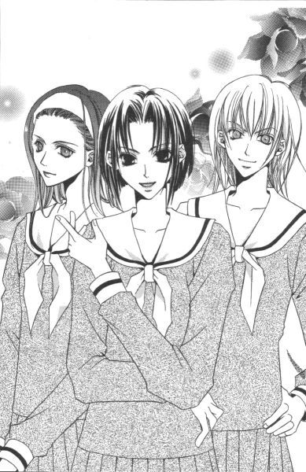
「──」
祥子さまのＫＯ負け。
そして第二ラウンド。
テーブルで両肘をついて、くんだ指の上に置いた顎を突きだしながら黄薔薇さまが目を細めた。
「令」
「はい」
呼ばれた令さまは、複雑な表情で答える。蛇に睨まれたカエル、ともちょっと違うけど、珍しくおどおどしている感じ。この先に待ちかまえているものを十分理解した上で、勘弁してもらいたいなぁ、ってそんなところ。それが避けては通れない道だって令さまは知っている。それが全然楽しくないものであることも。
「あなたも私の妹になって、もうじきまる二年なのだから、私が何を言いたいかはわかっているはずよね」
「はあ」
令さまは空気がもれている風船のように、目に見えて小さくなった。逆にいつもつまらなそうな顔をしている黄薔薇さまが、今日は目を輝かせて胸を張っている。
「じゃあ、答えはでていると理解していい？」
「お姉さまがそうしなさいとおっしゃる方にさせていただきます」
「だめよ。あなたが自分で決めるの」
おっしゃい、と黄薔薇さまは令さまを促した。
「......新聞部に協力しま──」
「反対！」
たまらず、由乃さんが声を出した。
「黄薔薇さま、そういう圧力のかけ方汚いんじゃありませんか。令ちゃんも令ちゃんよ、嫌ならはっきりと嫌って言えば」
興奮しすぎて、「令ちゃん」を「お姉さま」に訂正することも忘れている。
「由乃、ちょっと黙ってて」
「そうよ。混乱させないで。私は令と話しているの。関係ない人間は口出ししてもらいたくないわ」
「関係ない人間ですって」
きーっ、って叫ぶ由乃さんを「馬鹿、挑発にのるな」と止める令さま。
「由乃がムキになって引っかき回せば回す分だけ、お姉さまを焚きつけるってわからないの」
「え」
「その通り」
黄薔薇さまは勝ち誇ったようにほほえむ。
「まだまだね、由乃ちゃん」
由乃さんは「お祖母ちゃん」である黄薔薇さまの本質を、まだ完全に把握し切れていなかった。一通り何でもできちゃう黄薔薇さまの食指は、変わったことや希少なものに動く。そして一度興味を示したが最後、スッポンのように食いついて離れない。しつこいのなんのって、とにかくすごい。それを知っている令さまは、できるだけ逆らわないでこの場を乗り切ろうとしていた。嫌がれば嫌がるほど、黄薔薇さまはもっと嫌になるように働きかけることを知っていたから。
でも、令さまの努力も今になってはすべて水の泡。
「私が決めた方にするって、令は言ったわね。じゃ、イベントに参加してもらいましょうか」
黄薔薇さまとは、そういうお方だった。
第三ラウンド。
白薔薇さまが志摩子さんを見た。
「そういうことだから、がんばってね」
「......わかりました」
まあ、二年生の祥子さまと令さまが陥落した以上、一年生の志摩子さんが一人で戦えるはずもないけど。
しかし、白薔薇さま。「がんばってね」というエール、どうして生徒会選挙の時に言わずに今使うかな。
「なーに、祐巳ちゃん。面白くなさそうね」
白薔薇さまが、祐巳の顔を見て笑う。
「別に」
「そうお？ 堂々とふくれたらいいのに。由乃ちゃんみたいに」
「由乃さん？」
振り返ってみると、どう見ても「そんなことありません」とは言えない顔をして、由乃さんが令さまの隣でふてくされていた。おたふく風邪にかかった子供みたい。
由乃さんは正直者だ。
令さまが誰かとデートするなんて絶対嫌で、だから力一杯反対して、負ければこうして不機嫌になる。強烈だけど、わかりやすくて可愛い。令さまが、苦笑しながら由乃さんの肩をそっと撫でた。
祥子さまが、チラリと祐巳を見た。祐巳がそのことに気づいたのは、祐巳の方が先に祥子さまを見ていたからだった。気がつけば、いつでも姿を追ってしまう。
一瞬だけ絡めた視線を、祥子さまはすぐに外した。ほんの少しでもいいから笑いかけてくれればいいのに、と祐巳は思った。そうすれば、安心できる。今、ここでこうしている自分が少なくともＮＧじゃないんだって言い聞かせることができるのに。
でも、今の祥子さまは妹のことなんか構っていられないようだった。
「とにかく。新聞部の企画にのるにしても、こちらからの条件や修正案を加える必要があるわ」
令さまや志摩子さんに向かって同意を求める。すでに頭の中、切り替えてる。
「その通り。言いなりになんかなるものですか」
「同感です」
黄薔薇さまが腕時計を見た。祐巳もつられて自分の左手首に視線を落とす。午後四時。
──と、階段がギシギシときしむ音が聞こえてきた。薔薇の館は古いから、元気よく上り下りされると二階の部屋にいても壁から床から振動が感じられた。
「お待たせいたしました」
ノックしてすぐに開かれた扉から顔を出したのは、思ったとおり築山三奈子さま。頃合いを見計らってというか、満をじしてというか、とにかくもっと早く来られたのに会議が一段落ついただろうという時間に合わせて登場したようだった。だって、「首尾はいかが？」って感じで薔薇さまたちの顔を見たから。やっぱり三奈子さまが、三年生にバレンタイン企画を話して協力を頼んだのは間違いないようである。
３
「企画の細かい内容を確認させてもらうわ」
三奈子さまが椅子に座るのを確認すると、祥子さまは昨日三奈子さまが置いていった企画書を手に取りながら言った。昨日から一転してどうして協力する気になったのか、そんなことを一々茶番劇のように説明するのは時間の無駄だと判断したようだ。そんなことは策略にはめた方の三奈子さまは知っているので、途中省略でも全然構わないわけだった。新聞部にしてみれば、要はつぼみたちが気持ちよく協力してくれさえすればいいのだし。
祐巳が由乃さんと二人手分けして全員分の紅茶を入れている間にも、企画会議は着々と進行していた。
「バレンタインカードの形式については、お三人の意見も入れたいと思うの。色とか大きさとか、思いついたことがあったら何でも言ってちょうだい。ただ、それがデートの引き換え券も兼ねているので、新聞部が若干のスペースをとらせていただくわ。今のところ目立たない裏面に、と考えているけれど」
「カードが引き換え券となると、カード自体が回収されてしまうことになるけど。それでいいの？」
意味もなく書類の角を折ったりしながら、令さまがチェックを入れた。
「ああ、そうね。うっかりしてたわ。せっかくの直筆カードですものね、引き換え券を別に作るとか提示式にするとか検討しましょう」
三奈子さまは、自分の企画書に走り書きでメモをした。一応受注者はつぼみということだから、薔薇さまたちもつぼみの妹たちも口出ししない。口出ししないけど、動向はしっかりと見守っている。前者は興味本位に、後者はやきもきしながら。
「あの、カードの隠し場所は私たちが決めるのですか」
そう質問したのは志摩子さん。
「その通りよ。何て言ったって、お目当てのつぼみがどこに隠すかを推理するのが、参加者にとっては一番楽しいところでしょ？代わりに第三者が適当にばらまいたって、面白くないじゃない。もちろん、事前に新聞部に相談してもらうことになるけれど。基本的にはそれぞれ知恵を絞って、宝の隠し場所を決めて頂戴」
要相談、というのは。例えば隠し場所が不適当であった場合とか、あまりに簡単な所だとゲームにならないから、それを避けるためだと三奈子さまは説明した。
そりゃそうだ。学園長の机の引き出しの中に隠したりしたら、学園長以外の人間は探せないわけだし。それ以前に、隠すの無理だと思うし。
「範囲は高等部の敷地内と校庭の一部を考えているわ。当日『リリアンかわら版』の号外でゲーム内容を発表するつもりなんだけど、敷地内の地図を載せて、探していい場所といけない場所を書いておこうと考えているの。先生はじめ生徒以外の学校関係者、来賓なんかに迷惑かけないようにしないといけないから」
「職員室、応接室、学園長室、進路指導室......。まあ、入れない場所は結構あるよね。とすると、生徒が日頃出入り自由な場所限定ということになるわけだ」
「校庭、廊下、図書館。......教室や部室はどうするの？」
「教室や部室は範囲外が妥当じゃないかしら。特定の人間が有利になるし、個人の所有物も置いてある場所だし。それにこの企画に参加する気のない生徒たちにも迷惑がかかるわ」
「そうね。じゃ、体育館関係は？」
「当日、部活動が行われている場所は除外。ただし、使用されていない場所は先生の許可がとれる限り、範囲に入れる方向でどうかしら」
「更衣室はバツだけど、体育館のトイレとか地下通路とかはマルとかね。体育倉庫なんかも、日頃鍵がかけられている場所は範囲外、と」
嫌々ながら引き受けたというのに、つぼみたちは結構真剣に企画会議に取り組んでいる。やるからには中途半端は嫌だって、そういう気迫が伝わってくる。
「一ついい？」
ずっと黙って聞いていた紅薔薇さまが、すっと手を挙げた。
「はい？」
「ここ、どうするつもり？」
「ここ？」
ここ、といえば紅薔薇さまが指さしているのはテーブル、──じゃなかった。
「ここ......って。お姉さま、薔薇の館のことを言っていらっしゃるの？」
祥子さまが静かに聞き返す。
「そう。できれば、宝探しにこの薔薇の館も入れてやってくれないかな」
「それは構いませんけれど。なぜですの」
「卒業を目前にして、心残りが一つあるのよ」
「それが、ここ？」
「そう。薔薇の館」
紅薔薇さまが言うには、高等部の三年間でやりたいと思ったことのほとんどを行動に移してきたけれど、唯一思い通りにいかなかったこと。それが薔薇の館の一般開放であった。
薔薇の館を一部の生徒たちの溜まり場ではなく、一般の生徒たちがもっと訪ねてくれる場所にしたい。薔薇の館はいわば生徒会室であるわけだから、もっと気楽に出入りできる場所にできないだろうか。──そう思っていた。
しかし、薔薇さまが年々神聖化され、また薔薇の館が校舎から独立した建物であることも手伝って、両者がいつの間にか近寄りがたい存在になってしまった。長年の積み重ねでできたイメージを一代限りではどうにも修正しがたく卒業の時期を迎えてしまったというわけだ。
「そこで、私は卒業前に一般の生徒たちで賑わうこの館を見てみたいのよ。だからあなたたちの代になってどんな山百合会を築いてもいい。私への餞別のつもりで、お願いしたい。これは私の夢だから」
一度足を踏み入れた生徒は、次から敷居がかなり低くなる。そんなことも、紅薔薇さまは少し考えたかもしれない。
「わかりました」
三奈子さまはうなずいた。
「そういうことでしたら宝探しの場所に加えることにいたします。当日薔薇の館は本部として使用させていただこうと思っていましたが──」
「本部？」
「私たち新聞部員とつぼみたちの詰め所のようなものです」
カードを探し出した生徒が、「私が見つけました」って申告するためにも関係者の居場所ははっきりさせておかないといけない。つぼみはつぼみで、宝探しの真っ最中に校内をうろうろなんかしようものなら、混乱を招きかねないのでその時間はおとなしく待機するというものだった。
「いいじゃない。本部として使っても」
黄薔薇さまが欠伸をかみ殺しながら言った。
「つぼみも新聞部員たちも、始まってしまえばそんなに忙しくないのでしょう？このテーブルでお茶でも飲みながら、宝探し見学したらいいじゃない。セルフサービスでお茶ごちそうしたっていいし。何なら、おしゃべりしていってもらえば？」
「そんな人ばかりが集まってパニック......」
「それはそれでいいじゃない。それこそ紅薔薇さまの理想郷なんでしょ？」
黄薔薇さまの口調から、何があっても二月十四日は登校することが予想された。面白そうなことがあると聞きつければ、体調さえ万全なら絶対楽しもうとする人だ。
「ところで、私からもお願い聞いてもらっていいかな」
白薔薇さまが「うーん」と伸びをしながらつぶやいた。
「そのイベント。山百合会幹部として企画に参加するのはつぼみだけってことにしてもらいたいんだわ」
「は？」
「だから、この意見が通り次第私たちはこの部屋を出ていく。祐巳ちゃんや由乃ちゃんも一緒にね」
「えー!?」
「えーって、何よ。部外者が会議に参加してどうする」
「お目付役がいなくなったら、どんなすごい企画になるか」
「由乃ちゃん。自分のお姉さまを信じられないのかな」
「──」
「残念。由乃ちゃんにとって悪い話じゃないと思ったんだけど。じゃ、ま、せいぜい関係者としてこき使われなさいな。三奈子さん、私の言いたいことわかった？」
「了解しました」
三奈子さまの返事を待って、薔薇さまたちは席を立ち上がった。ちょっと含み笑い。いったい何がそんなに楽しいんだろう。
「祐巳ちゃん、どうする？」
「へ？」
「何百分の一の確率に賭けて、祥子とのデートをゲットしたくない？」
そりゃ、もちろん──。
「したいです！」
と答えたのは由乃さん。答えると同時に、椅子から立ち上がって薔薇さまの固まりの中に飛び込んだ。おいおい、落ち着いた方がいいよ。白薔薇さまは今、「令」ではなく「祥子」って言ったんだから。
「祐巳さんも、こっちの組に入った方がいいわよ」
頭の回転が祐巳より早い由乃さんは、変わり身の早さも電光石火だった。
「......どういうこと？」
「部外者になれば、ゲームに参加できるっていうわけ。そうですよね、白薔薇さま」
「その通り。ね、部長さん？」
「ええ」
伝言ゲームのようにたらい回しされた答えは、ようやくと三奈子さまのところで落ち着いた。
「つぼみの姉妹も参加するとなれば、話題にもなりますから大歓迎です。スタッフは新聞部の部員だけでもどうにかなりそうですし。つぼみたちさえよければ」
「私は構いませんけれど」
志摩子さんが言った。
「由乃たちがそれで納得するなら」
令さまにしてみれば、由乃さんの機嫌さえよければなんでもＯＫって感じ。虫の居所が悪い由乃さんは最悪だから。バレンタインデーが終わるまで「反対」を連呼され続けたら、いかに頑丈な令さまとはいえ身が持たない。
祥子さまは。
「こういう時の雑用にこそ妹の手が必要なのに」
なんてぐずぐず言っていたけど、結局反対する大きな理由もないので同意した。どうせ最終的に賛成するのなら、文句言わなきゃいいのに。でも、ほら。祥子さまは負けず嫌いで、あまのじゃくだから。
「じゃ、決まりね」
というわけで、その日の会議は散会した。「部外者」が外に出るまでもない。窓の外は真っ暗闇で、すでに生徒たちは強制的に下校させられる時間になっていた。
４
「何か、とんでもないことになったね」
帰り道の銀杏並木を歩きながら、祐巳は由乃さんに話しかけた。つぼみたちは後方三メートルの距離を保ちつつ、十四日の打ち合わせに余念がない。一年生が後かたづけしている間に、三奈子さまは新聞部の部室があるクラブハウスに一旦戻り、受験生の薔薇さまたちは速攻で帰ってしまったので、結局いつものメンバーが取り残されてしまったのだけど、今日に限っては下校集団は三対二にくっきりと分かれてしまった。
「私、絶対令ちゃんのカード見つけてみせる」
由乃さんはミトンの拳を振り上げた。相変わらず、前向きで強気で自信家だ。
「大丈夫よ、祐巳さん。妹っていうのはね、妹っていうそれだけで有利なの。妹に限っては、何百倍なんて倍率じゃないのよ。わかる？」
「う、ううん」
どっちかっていうと、由乃さんの迫力に圧されて首を振った。暗がりの中で、突然どアップで迫ってくるんだもん。
「まず、第一に趣味嗜好を十分理解している」
由乃さんは指を一本立てたつもりかもしれないけど、四本指が収まったミトンだからわからない。ちょっと歪に、形が変わっただけだ。
「趣味嗜好がわかっていると、どうして有利なの？」
「カード隠す場所の手がかりになるでしょ」
「あ、そうか」
例えば、ギンナンの嫌いな祥子さまは絶対に銀杏並木の側に隠さないって。ああ、でもそれってかなり大ざっぱな推理。
「あとね、側にいればポロリとヒントを口走るかもしれないでしょ」
「無理だよ」
その線はないな、と祐巳は思った。祥子さまに限って、そんなミスは絶対にしない。
「無理じゃないって」
自信満々の由乃さん。
「......そうか」
令さまならわからない。もちろん故意には教えてなんてくれないだろうけど、由乃さんにあの手この手で攻められたら、自分でも気づかないうちに手がかりを口にしてしまいそうなところがある。
「いつ隠したかだって、態度でわかるもの」
「──」
結局。
有利なのは「妹」一般じゃなくて、由乃さん一人なんじゃないかって思えてきた。自信があるからこそ、由乃さんはあんなに連呼していた「反対」をいとも簡単に引っ込めたんだ。今ならわかる。
「私は、自信ないなぁ」
口から出た白く大きな固まりは、ため息。どれだけ自信がないかって、目で確認してしまった感じ。
「あーあ。半日デートか。......いいな」
祥子さまのカードを手にする、未来の誰かがうらやましい。令さまと始終一緒にいる由乃さんにとっては、自分以外の生徒が令さまの時間を拘束することが許せないだけで、デート自体には全然価値なんかないだろうけど。
「いいな、って。祐巳さんだって、お正月に祥子さまのお家で一緒に過ごしたんでしょ？」
「でも、二人きりじゃなかったもの」
二人きりじゃないというより、祥子さまにとっては大勢いるお客の中の一人って認識だったかも。おまけに、その場には天敵が一匹紛れていたし。
「そうか。祐巳さんが勝った場合、ダブルデートなんてことも考えていたけど。そういうことなら遠慮した方がいいわね」
ふふふ、って肩を小さく上げて笑う。恐ろしいことに、由乃さんは本気で自分が令さまのカードをゲットすることを疑っていない。これで誰かに先を越されたりでもしたら、どうなっちゃうんだろう。どんなに自信があったって、万が一ってことが絶対ないとは限らないんだから。
「でもさ。そうなるとバレンタインデーまでの間、結構このパターンが多くなるね」
校門の所まで来ると、由乃さんが立ち止まって元来た道を振り返った。そこには二人のお姉さまと、一人の同級生の姿。次に紅白黄の薔薇となる、つぼみと呼ばれる人たち。
「......うん」
うなずきながら、祐巳はぼんやり「そうじゃないかも」と思っていた。バレンタインデー以降も、こんな風に一定の距離を置いたつき合いはきっと続くんだ、って。
祥子さまが紅薔薇さまになってしまったら、きっと今までのように愚妹の面倒ばかり見てはいられないだろう。生徒会長として、もっと忙しい一年が始まるはずだった。
そうなったら。
そうなった時は、自分はいったいどうしたらいいのか。
祐巳は未来の自分の姿を探しあぐねて、少しずつ大きくなるお姉さまの姿をじっと迎え見ることしかできなかった。
「どうしたの？」
祥子さまが尋ねる。
「いいえ」
何でもありません、って祐巳はうつむく。お姉さまのお荷物にならないように、お姉さまに心配かけないような妹に早くならなくちゃいけない。
「つぼみだけで話があったから。心細い思いをさせてしまったかしら」
そう、軽く笑って。祥子さまは「帰りましょうか」と言った。
令さまは由乃さんに駆け寄って、二人して学校の高い塀に沿った裏道を帰っていった。志摩子さんは、彼女にしてみれば珍しくバタバタと走ったかと思うと、停留所で大きく手を振ってバスを止めた。
「祥子さま、祐巳さん、早く」
利用者の大半がリリアン女学園の生徒だという路線バスは、遅くなると本数も少なくなるから一本逃すと大変なんだ。この時間、生憎とバス待ちの生徒が一人もいなくって、それでバスのライト確認した志摩子さんがダッシュするはめになった、というわけだった。
「まあ、大変」
祥子さまが小さく叫んでから、祐巳の腕を取って走り出した。二人は志摩子さんに倣って、バス停まで走って、待ってくれていたバスに飛び乗る。
走り出すバス。ガラガラの車内の、最後部の座席に転がるように座ると「助かったわ」と三人は笑い合った。
だから。
祐巳は、祥子さまに言い忘れてしまったのだ。
心細い思いをしているとしたら、それは暗闇のせいではないのだということを。本当は、それをはっきりと伝えておかなければいけなかった。
部外者
１
「で、どうなったわけ」
蔦子さんが興味津々、って感じで顔を覗き込んできた。
『臨時会議』から数日経ったある日の昼休み。祐巳は桂さんのグループでランチタイムだったけれど、お箸を持つ手は休みがちだった。
「どうって、見ればわかるでしょ」
三日も連続して、教室でお弁当食べているんだから。
「あれま、元気が取り柄の祐巳さんがため息なんかついちゃって。ということは、妹たちにとっては楽しくない状況ですか」
「まあね」
薔薇の館から閉め出されているわけではないけれど、何となく居づらい。だって一緒にご飯食べていても、つぼみたちが何となく固まって相談事を始めたりして。そうなると、「部外者」は「部外者」で聞いちゃいけないような気がして、それとなく隅っこ寄ったりと気をつかう。
だったら、最初から側に行かない方がお互いのためかもしれない。それで由乃さんと相談して、しばらく薔薇の館に行くのをやめようということになった。何かあったら、同じクラスの志摩子さんが知らせてくれるだろう。
つぼみたちは全員クラスが違うし、放課後は令さまの部活があるし、で、なかなか話し合いの時間がとれないのは祐巳だってわかっていた。だからこそ、三人が集まれる時は遠慮するべきだろう、と。
「蔦子さん、よろしかったらここにお座りになったら？」
桂さんが、立ち上がりながら椅子を勧めた。
「あら、そんな。お気づかいいただかなくても」
「いいの。私たちはもうお弁当も食べ終わったし、それにこれから行くところがあるので」
机を合わせて座っていた五人のうち、祐巳を除く全員が次々と立ち上がった。いそいそ、とお弁当包みを手さげ袋にしまうクラスメイト四人。
「皆さんお揃いで？」
蔦子さんは眼鏡の蔓に指を掛けて、縁なしレンズを上げた。
「ええ。祐巳さんも誘ったのだけれど、あまり興味がないようなの。一人でお弁当食べるの寂しいでしょうから、どうぞ蔦子さんつき合ってあげて」
桂さんは早口でそう説明すると、扉近くで待っていた数人のクラスメイトたちに合流し、皆でスキップするように教室を出ていった。
「......何じゃい、あれは」
聞こえる範囲にいるのは祐巳一人になって気を抜いた蔦子さんは、廊下の方に視線を投げてボソリと呟いた。
「図書館にチョコレートの本見に行くんだって」
メンバーの一人が本屋さんで素敵な本を見つけたそうで、でもそれが非常に高価であるところからとてもお小遣いでは買えなくて。いや、買えなくはないけれど、買っちゃうと今度はチョコレートの為に取っておいた資金が危うくなる、とかで。でも、その話を聞いた別の人がその本は確か図書館にあったと言いだしたから、じゃあみんなでその「素敵な本」を見に行きましょう、ってそういうことになったのだった。
しかし、話が決まってからのお弁当食べるスピードっていったら、みんなすごかった。よく噛んでゆっくり食べる方が、健康のためにもいいしダイエットにもなるんだって祐巳に教えてくれた桂さんが、三回とか四回むしゃむしゃしただけで飲み込んでいたんだから。
「なるほど。チョコレートの素敵な本ね。そりゃ、魅力的だわ。祐巳さんは、どうして一緒に行かなかったの」
蔦子さんは、手を伸ばして自分の席に置いてあったパック牛乳を取ると、座布団に温もりがまだ残っていそうな桂さんの席に座った。
「祥子さま、チョコレート嫌いみたい」
祐巳は小さく答える。この話題、あまり好きじゃない。
「ご冗談。祥子さまはクリスマスに、ブッシュ・ド・ノエル食べてたよ。 黄薔薇のつぼみのお手製のやつ」
あれはおいしかった、と蔦子さんは遠い目をしてつぶやいた。お手製といっても、市販に少し手を加えたものだったんだけど。しかし、メイキングを見ていない彼女はそんなこと知らない。
「......そうか」
確かに、ブッシュ・ド・ノエルはチョコレートクリームたっぷりのケーキ。祐巳も祥子さまが食べているところを目撃したけど、令さまに気をつかって嫌いなチョコレートを口にしたといった感じではなかった。
食べ物の好き嫌いが多い祥子さま。お知り合いになってまだ四ヶ月だけど、嫌いな物を見つけた時の表情はもうしっかり覚えた。見ただけであんなに嫌な顔をする人が、演技なんてできるわけがない。
「じゃあ、バレンタインデーにチョコレート配るっていう習慣に反対なのかな。どっちにしても、私には同じことだけど」
「楽しみにしていたバレンタインデーに、チョコレートあげる楽しみなくなっちゃった、ってことか」
せっかくリサーチしたのにね、って蔦子さん。飲み残していた牛乳を最後まで啜って、ズズズって音たてた。同情してくれているのかもしれないけど、残念なことに音が邪魔して、とても親身になってくれているようには見えなかった。
「そりゃ、身が持たないね。薔薇の館では居場所がないし、教室ではバレンタインデーの話題一色だし」
蔦子さんは、昼休みの一年桃組教室を大きく振り返る。
そうなのだ。
桂さんたちだけではない。クラスのほぼ三分の二、いや四分の三か、とにかく大半の生徒の頭の中は現在バレンタインデーのことで一杯で、授業中以外でその話題が飛び交っていない時間はないといった状況だった。
やれ、どこそこのお店のチョコレートがおいしいだの、テレビで紹介していた手作りチョコレートのレシピを手に入れただの。チョコレートと一緒に手編みのセーターをプレゼントするんだって張り切っているクラスメイトは、休み時間返上で編み棒を動かし続けている。
日頃お世話になっている先生に、憧れの先輩に、片思いの他校の男子に。あげる相手はそれぞれだけど、思いはみんな一緒だった。
バレンタインデーまで一週間をきっていた。
「で、どうするの」
どうするの、と聞かれても。どうしたらいいのかわからないから困っているのだ。
「これだったら、関係者の方がよかったかな。部外者になったとしても、祥子さまのカード見つける自信ないし」
祐巳の愚痴に対して、蔦子さんは意地悪な突っ込みを入れる。
「ふーん。祥子さまが誰かとデートしてもいいの」
「それは嫌」
絶対に。
「じゃ、しょうがないじゃない。分が悪いってわかっていて賭けに出たんでしょ。潔くないなぁ」
そんなこと、分が悪いってことと同じくらいよくわかっている。
だからたぶん、由乃さんは潔い。勝算がものすごくある賭けにのって、その上念には念を入れる意味で、令さまが隠しそうな所を予想して実際に隠すのに適当な場所であるか確かめに行ったりしている。身体は一つしかないから、いざ本番はどこから回るべきか、とか考えたりして、令さまと別行動しながらも充実した日々を送っているようだ。それに由乃さんは、宝探しとは別にバレンタインチョコを渡す楽しみがある。
「私も、祥子さまにチョコレート渡したかったなぁ」
しみじみと、窓の外の殺風景な空を眺めてつぶやいた。
「じゃ、作って無理矢理押しつけちゃえば？」
蔦子さんたら、名案を思いついたみたいに手を叩いて言った。由乃さんが令さまにロザリオ突き返した時みたいに、できればマリア様の前に呼び出してもらえるといいなぁ、って。明らかに盗撮狙っている。
「できると思う？ この私が」
相手は頭が上がらないお姉さま。呼び出すという第一ステップからして、クリアできそうもない。
「そうね。祐巳さんには無理か。どっちかっていうと、食べてもらえないチョコレートを涙を堪えながら型に流し込む、かな。甘いはずのチョコレートが、ほのかにしょっぱい涙味」
蔦子さんは切ない表情を作って拳を握ったけど、祐巳はげっそりとため息をついた。
「......それじゃ演歌だよ」
おまけに、堪えた涙がどうしてチョコレートに入るんだ。他人事だからって、適当なこと言って遊ばないでほしい。
「でも、祐巳さん。考えるだけは『ただ』だし。チョコレートをあげたいなら、あげる方向で考えたらいいんじゃない？もしも十四日の日に、祥子さまが気まぐれおこしてチョコレートもらってくれそうになったとするでしょ。その時、渡すチョコレートがなかったらきっと後悔するわよ。取りあえず作ってみて、やっぱりプレゼントできなかったら私に声かけて。教室で一緒に食べてあげるからさ」
お礼に缶コーヒーくらいおごるから、だって。持つべきものは、単なる友達。何だか、少し気持ちが軽くなってきた。
蔦子さんは、できればチョコレート贈呈の瞬間に（陰ながら）立ち会いたいって希望したけど、その件に関しては丁重にお断りした。ドキュメンタリーじゃあるまいし、カメラがどこかから狙っている所で祥子さまと真剣なやりとりなんかできるはずない。もし決定的瞬間にシャッターきりたいのなら、それこそ蔦子さんが宝探しのように現場を探せばいいことだ。
「じゃ、ま、健闘を祈る」
だらだらと話しているうちに、午後の授業の予鈴が鳴った。祐巳は自分の席に帰る蔦子さんを見送りながら、空になったお弁当箱をバンダナで包んだ。
桂さんたちがきゃあきゃあはしゃぎながら教室に帰ってきた。編み物している生徒は、本鈴が鳴るまでは編み続ける気配。
──と。蔦子さんが突然何かを思い出したみたいに、祐巳のもとに戻ってきて言った。
「言い忘れていた。今度の宝探しね、写真部も一枚噛むことになったから。といっても関係者というより協力者だから、誰がどこに隠すかとかは知らされないんだけど。『リリアンかわら版』がバレンタイン特集組む時の写真を、写真部が担当することになったの」
それだけ言うと、蔦子さんは機嫌よく去っていった。
この分では蔦子さん、今年のバレンタインデーに誰かにチョコレートをあげるつもりはやっぱりなさそうだ。カメラと写真をこよなく愛する写真部のエースは、どうやら今年もまた年中無休で少女たちの姿を追い続けるようである。
２
「あれ、祐巳ちゃん」
放課後。
習慣っていうのかな、掃除をすませて教室に帰る途中何となく足が向いてしまって、気がついたら薔薇の館の前まで来ていて、そこで令さまに見つかってしまった。
「一人？」
令さまは教室から直行したらしく、スクールコートと鞄を抱えて笑う。
「久しぶりだね。あ、そうだ祐巳ちゃんに会ったら渡そうと思っていたんだ。......ちょっと待って、──あれ」
鞄開いてしばらくゴソゴソしていたけど、立ったままでの探る作業が困難であると判断した令さま、「取りあえず中に入ろう」って言って祐巳の手をとって扉を開けた。
「あ、あのっ」
薔薇の館の側まで来たこと自体が予定外の出来事なのに、中にまで入ってしまってはまずいでしょう。
しかし、令さまが気にせずどんどん階段を上っていくものだから、振り切って逃げ帰るわけにもいかない。仕方なく祐巳は、令さまについて二階に向かった。祥子さまがいないといいな、なんて思いながら。
「おー、一番乗りだ」
部屋に入るなり、令さまが新鮮な声をあげて電気のスイッチを入れた。
「すぐお湯沸かしますから」
つい癖で、祐巳は電気ポットに走り寄った。
「いいって。気をつかわないで」
「はい」
ポットの中に溜まっていたお水を捨てて、中を濯いで、新しい水を注ぐ。コードをコンセントに差し込むと、ポットの奥から「沸かしまっせ」って感じで鈍い音が聞こえてきた。それから流しに掛けてあった台拭きを軽く洗ってきつく絞って、テーブルの上を拭いた。ついでに床も掃きたかったんだけど、埃がたつから諦めた。
「じゃ、私はこれで」
一段落、ってホッと一息つくと、急に「どうしてここに居るんだろう」状態になって、すぐに帰らなきゃと思った。
「ちょっと待ってよ。雑用してくれたのはありがたいけど、それが済んだらもうさよなら？」
「あの、でも。これからお話し合いがあるんじゃ......」
今日は令さまは部活がある日。それなのに薔薇の館に来たということは、これから何か予定があるんだって想像はつく。
「あるけどさ」
令さまは笑いながら、隣の椅子を引いて祐巳に座るように促した。
「祐巳ちゃんに渡したい物がある、って言ったでしょ」
「あ」
すっかり忘れていた。そうだ、そもそもそういう経緯で薔薇の館に来たんだっけ。
「ほら、これ」
令さまは鞄から何やら取り出して、祐巳の目の前に置いた。それは薄い雑誌のような、一冊の本だった。
「これ......」
「会ったら渡そうと思って、ずっと鞄中入れていたお菓子の本。手作りチョコの作り方がいっぱい載っているし、手順とかわかりやすく書いてあるから、よかったら役立てて。令さん特製のトリュフチョコのレシピも、中に貼ってあるよ」
「でも、令さまもこれから作るんでしょう？」
「大丈夫。必要な箇所、......っていっても材料の分量くらいだけど、メモしたから。それに他にもこういう本何冊か持ってるし。それとも、もう、必要なくなった？」
「いえ、そんな」
「ＯＫ。じゃ、祥子には内緒にして、びっくりさせてやろうよ。これなんか、どう？」
得意分野の話だもんだから、令さま生き生きしている。美少年の外見が邪魔をしてそういうイメージとはかけ離れているけど、もともとは面倒見いい人なんだと思う。だって、あの由乃さんと長いこと上手くやっているんだから。
カラー写真満載のチョコレート菓子の本を二人で仲よくめくっていたら、突然背後の扉が開いた。
「さ、祥子さま......っ」
夢中になっていて、階段上る足音に気がつかなかった祐巳と令さまは、あわてて椅子を立ち上がり本を鞄の下に隠した。
「──何を驚いているの」
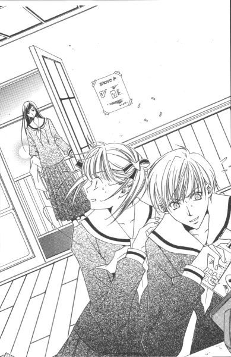
「い、いえ。別に」
立ち上がりついでに、ポットのお湯が沸いたので二人分の紅茶を入れて二年生二人にサービスした。
「祐巳、あなたの分は？」
祥子さまは、冷ややかに聞いた。
「あ。私は、すぐに失礼しますから」
「用事でもあるの？」
「......ええ、まあ」
まさか、「居づらいから」なんて答えられない。本当は三奈子さまや志摩子さんなんかが来るまで留まってもよかったんだけど、何だか祥子さまのご機嫌、今日はあまりよくないようだから。下手に側をうろちょろしてますます不快にさせては大変、って祐巳は思った。ピリピリしている時の祥子さまは要注意。普段はおくびにも出さないけれど、本性はヒステリーなんだから。
「じゃ、油売っていないで早くお行きなさい」
あ、結構キツイ。
「祥子。そういう言い方やめてよ。祐巳ちゃんは、私が強引に連れてきたんだからさ」
「令が？」
祥子さまは少し顔を上げて、二人を交互に見た。それから、ただ「そ」とだけ言って、カップの紅茶に口を付ける。
どんな用事があるのか、とか、どうして令さまが誘ったのか、とか。何一つ質問を返さない。しつこく問いただされたりしたら厄介だけど、こう素っ気なくされると、それはそれでちょっとだけ拍子抜けした。
「じゃあ、失礼します」
ぺこりと頭を下げて扉に向かうと、「待って、祐巳ちゃん」と令さまが追いかけてきた。
「悪いけど、これ。帰りがけに菊組に寄って、由乃に渡してもらえない？」
「はい？」
手渡されたのは例の本。後ろ向けているからタイトル隠れているけれど、かなり大胆。由乃さんに、って言いながら祥子さまから見えない角度でウインクした。
（......ということは、私に貸してくれるということか）
「ありがとうございます」の代わりに「わかりました」と言って部屋を出た。祥子さまは、令さまから由乃さんに渡す本なんてまったく興味がないようで、一人優雅にお茶をすすっていたのだった。
階段を下りて館の玄関にさしかかった時、あちらから扉が開いて、勢いよく入ってきた志摩子さんと軽くぶつかってしまった。
「ごめんなさいっ」
幸い、被害はお互い持っていた物が床に落ちただけで済んだ。
「掃除終わってすぐ来ようと思ったのだけれど、いろいろ雑事が重なってしまって──」
どうして急いでいたかという説明しながら、志摩子さんは散乱した書類を拾う。祐巳もそれを手伝った。
「あら、これ──」
書類の下から出てきた覚えのない本を手にして、志摩子さんが「ああ」とつぶやく。
「祐巳さんのね？ バレンタインデーには、やっぱりチョコレートを作るの？」
「......うん。どうかな。一応、本は令さまから借りたんだけど。......目下検討中、かな」
「そう」
書類を脇に挟んで、パラパラとページをめくる志摩子さん。
「そういえば、教室でもみんなこんな本開いているわね」
小さく笑って本を閉じ、差し出す。志摩子さんは、白薔薇さまにチョコレートを渡さないんだろうな、と受け取りながら祐巳は思った。
「祐巳さんが来ていてくれたなら、こんなに急ぐことなかったのにね」
じゃあね、と言って志摩子さんは階段を上っていった。
（ああ、そうか）
薔薇の館を出て、校舎に入ってから祐巳はやっと気がついた。
最近、「部外者」となった一年生二人が薔薇の館に寄りつかないから。だから、志摩子さんが雑用に追われることになるんだ。別に下級生の仕事として強制されてはいないけれど、上級生に掃除させたりお茶入れさせたりして自分はのんびり登場するのは抵抗あるから。志摩子さんは、委員会とかクラスのこととかで多忙でありながら頑張っていたんだ。
お姉さまと妹が一時的とはいえ別行動をとらなきゃいけないということは、思わぬところに弊害が生じるものなのかもしれない。
自分の悩みばかりに気を取られていてはいけないんだ、って。
祐巳は、少し反省した。
３
新聞部は、バレンタインデーのイベントを小出しにして発表した。
『リリアンかわら版』はもともと週刊だから、号外というか、別冊というか、サイズを縮小して毎日配るのだ。
その名も『リリアンかわら版プチサイズ・バレンタイン企画カウントダウンスペシャル』。放送部の名ＤＪだって噛みそうな、長々としたネーミング。実際、タイトルだけで狭いスペースを随分とってしまっている。しかし、そのことによって人目を引く結果になったのだから、わからないものだ。
日刊紙を出したことで、新聞部発案の山百合会幹部によるバレンタイン企画は生徒たちにあっという間に広まった。最初は何をやるかまったくわからなかった企画が、日を追う毎に徐々に明らかになっていくというのが、また少女たちの好奇心に火をつけたといっても過言ではない。特に、つぼみたちが何かするらしいという情報が載った二日目の記事が、今までで一番反響が大きかった。生徒会役員選挙の余韻がまだ冷め切らずに残っているから、次の薔薇さまたちの人気はピークに達していた。
「でね。つぼみの妹たちが何か知っているはずだ、って。クラスメイトたちにずいぶん追及されちゃって、大変だったんです」
掃除の終わった音楽室の窓を閉めながら、祐巳は肩をすくめた。
「あら。祐巳さんたち、何か知っているの？」
静さまはピアノの蓋を開けた手をそっと離して、向き直る。きれいに切りそろえられた短い髪が、頬の表面を一往復しておさまった。
「まさか」
祐巳はぶんぶんと首を横に振った。二つに結んだ跳ねっ返りのパサパサ髪が、勢いよく空を切る。
企画内容で知っていることといったら、つぼみが宝を隠してそれを探すゲームだってことだけで。宝がカードなのかチョコレートなのか、副賞がデートとなったのかどうか、その後の話し合いに参加していないからまったくわからなかった。つぼみの宝探しという話はすでに発表済みだから、妹といえど一般生徒のもっている情報とさほど違わないのが現実だ。
「志摩子さんは追及されないの？」
「さすがに、本人に聞くのはルール違反って自覚あるみたいで。クラスのみんなも自粛してます。それに志摩子さんて、あの雰囲気だから得なんです」
掃除日誌を抱えて、ため息をついた。一緒に音楽室のお掃除当番していたクラスメイトたちは先に教室に戻っていて、合唱部の部員たちがやって来るまでの短い時間、音楽室には二人しかいなかった。
祐巳は今日、少し掃除の時間に遅れたから、ペナルティーで日誌を出す役を自らかって出たのだった。
「確かに、彼女って他人から突っつかれないタイプかもね。でも、うらやましいわ」
「でしょ？」
「祐巳さんのことよ」
「え？」
わからなければいいわ、って言って、静さまはその話を打ち切ってしまった。
「じゃあ、祐巳さんは今もクラスメイトから責められているの？」
「いえ。由乃さんと一緒に新聞部の部長に直談判しまして、翌日の『リリアンかわら版・プチサイズ──』の記事を差し替えてもらいました。つぼみも一般生徒と一緒にゲームに参加するから、何も知らされていないって。それで一応収まりました」
「ああ、それはよかったわね」
もうすぐ留学のためにリリアン女学園をやめる静さまは、あまり興味がないのか今回のバレンタイン企画に関してものすごく疎かった。これが白薔薇さまのお宝探しだったら、話は全然違っていただろうけれど。
「今は、もっぱら『つぼみの隠しそうな場所』の予想屋に祭り上げられています。私の方が聞きたいくらいなのに」
学校広いし、宝探しなんて初めてだから、どんな場所がいい隠し場所なのかわからない。つぼみの三人は頭もいいし、すぐに見破られる所なんか選ばないだろうし。
「そうねぇ......。私なら、自分がその人だったらどこに隠すかしら、って考えるけれど」
「自分、ですか」
自分がどこに隠すかなんて、祐巳は考えてみたこともなかった。で、ついでだから、目の前にいる人の隠し場所を想像してみた。
「静さまなら、グランドピアノの中とか？」
ピアノを軽く撫でて聞いた。
「簡単すぎない？ それに、その日の授業でピアノ使ったらすぐばれてしまうわよ」
「うーん」
なるほど、誰でも思いつく場所じゃ意味ないわけだ。宝を隠すのって難しい。
「でも、ピアノはともかく。音楽室はいい線いっているかもしれないわね。あとは、......そうね図書館かな」
「図書館？」
「誰が宝を探し当ててもいいけれど、できれば私のことをよく理解していてくれている人に見つけてもらいたいじゃない？」
静さまは、図書委員をやっている。
「そうですね」
うなずきながら、考えた。祥子さまは、どこに隠すつもりなのだろう。どんな人に見つけて欲しいのだろう。
もし自分が祥子さまの宝に一番最初にたどり着いたとしたら、妹としてお姉さまを理解しているというアピールになるのだろうか。だとしたら、チョコレートを受け取ってもらえなくてもいい。祥子さまに少しでも認めてもらえたら、それこそが祐巳自身への最高のご褒美になる。
「ところで。祐巳さんは、祥子さんにチョコレート渡すの？」
「え？」
突然話を振るから、びっくりして変な声が出てしまった。宝探しする日がバレンタインデーだから、関連で思いついたんだろうけれど。
「あ、内緒なのかしら。聞いちゃいけなかった？」
「いえ、そんな」
作る予定だけど、渡せるかどうかわからない。──って、説明すると、かなり長くなりそうだった。
実は、すでにどんなチョコレートにするか構想は練ってある。物を作る楽しさって、たぶん作るまでの頭の中で行う作業が全体の四十パーセントは占めていると思う。あとは思った通りにできあがった時の満足感が同じく四十パーセント。残りの二十パーセントの中に、買い物とか作る喜びとかがゴチャゴチャと詰め込まれているんじゃないかな。まだ「作る」までいっていないけれど、何となく想像がつく。だって、頭の中で作った手作りチョコレートは、完璧な形で登場するし、いくらでも作り直しがきくし、楽しくてしかたない。
「そういう静さまは」
調子に乗って言った後「しまった」と思ったけど、静さまは別に何にもダメージ受けていないようで、軽く笑った。
「祐巳さん、今、気を遣ったでしょ。やめてよね、そういうの」
「......済みません」
「確かに私、白薔薇さまに憧れているけれど、別に失恋したわけじゃないのよ。単に妹になれなかったことと、生徒会役員選挙で惨敗したこと、あと付け加えるとしたら、もうすぐイタリアに旅立つというだけのこと」
それだけ重なったら、かなりキツイんじゃないかな、と祐巳は思った。もしかしたらたった一つの失恋の方が、それだけに集中できるから楽だったりして。
「だから、チョコレートはあげるわよ。もちろん」
「えっ!?」
「志摩子さんからはもらえそうもないから頂戴、って白薔薇さまも言っていたし。もっとも、最初から志摩子さんに遠慮なんかするつもりはなかったけれど？」
（......静さまって）
まるきり別のタイプだけど、由乃さんに匹敵するほど打たれ強いかもしれない。ある意味、困難をバネにするというか。とにかく、パワフルな人なんだ。
「しかし、いつの間にそんなに仲よしさんに──」
「白薔薇さまと私？普通よ。祐巳さんと私がこうしてお話しするように」
「それにしても」
チョコレートの話題に花を咲かしている暇あるんだろうか、白薔薇さま。受験生だから、って、登校しているのかどうかもわからないほど学校では見かけないのに。
「白薔薇さまはやさしいから。来るチョコレートは拒まず、って受け取ってくれそうだし。贈り甲斐があるわ」
「はあ」
やさしいから、というより節操がないんだけど。白薔薇さまの場合は。
「あ、でも祥子さんがやさしくないという意味ではないわよ」
「祥子さま？」
聞き捨てならない名前。しかも「やさしくない」なんて形容詞つき。いや、正確には「やさしくない」を否定してはいるんだけれど、この際そんなことはどうだっていい。
「祥子さまがどうした、っておっしゃいました？白薔薇さまと比較して出てきたわけだから、やっぱり来るチョコレートを拒むっていう意味ですか」
「え？ だって祐巳さん、そのことで躊躇っているんじゃないの？」
「そうなんです。......けど」
どうして見てきたみたいに知っているのか、って疑問に思うのは当然だと思う。祥子さまがチョコレートを受け取ってくれないかも、って悩んでいるなんて、祐巳は静さまに一言もいっていない。風の噂になるほど、誰彼構わず相談もしていないし。
「だって、私は祥子さんと同じ学年なのよ。去年のバレンタインデー知ってるの、どうして不思議なの？」
「あ」
「あの通り美人だし存在感あるでしょ？ 一年生だったけれど、同級生からだけでなく上級生までもがチョコレート持参で祥子さんのクラスを訪ねていたわよ」
「同級生？」
「中等部は厳しかったから、バレンタインデーといえども、お菓子の持込禁止だったじゃない？きっと、その反動もあるのよね」
高等部になった途端「生徒の自主性を尊重」なんて、突然校則ゆるめられちゃって。まあ、未来にそれが待っているから義務教育中はおとなしく辛抱していられるんだけれど。とにかく高等部に上がったらやりたかったことの一つに、「バレンタインデーを楽しく演出する」というのが当然入っていたわけだ。バレンタインデーにチョコレートをあげる予定もらう予定がない人は、プレゼント光線が憧れの生徒に向けられる。それで山百合会の幹部関連にチョコレートが集中する、とそういうわけだ。
「で、話は戻るけれど。祥子さんは山のように押しつけられるチョコレートに、あからさまにうんざりした顔して、すべて突き返したのよ」
「ひぇ......」
「それも一つのやさしさよね」
「突き返すのが、どうしてやさしいんですか」
素直な疑問を祐巳が口にすると、静さまはそれには答えずただ微かにほほえんだ。
「そのうちわかるわ」
またしても、はぐらかされてしまった。──からかわれているのだろうか。
やがて合唱部員たちがちらほら現れたので、祐巳は「それじゃ、また」と挨拶をして音楽室を出ていった。
「祐巳さん」
静さまが扉まで追ってきて、呼び止める。
「あのね。三回しかないんだから、当日もそれまでの何日かも高等部のバレンタインデーを十分楽しんだらいいわ。悩んだり迷ったりしたことも、来年再来年もっと先にいい思い出になるはずだから」
「静さま......」
「私、去年はただの観覧者だったから。だから、今年こそはイタリアに持っていく思い出を作るわ。だから、祐巳さんも──」
最後まではっきり聞こえなかったけれど、今度は静さまが何を言いたいのかわかった。
祥子さまとの日々は、あと一年と少し。どうせだったら楽しく過ごせたらいい。思い切り笑って、真剣に悩んで、後から後悔しないように。きっと、そういうことを言っているのだと思う。
「はい」
祐巳は元気よく返事をして、それからもう一度頭を下げてから、職員室に向かって歩きはじめた。
二月十三日
１
「──というわけで、浮かれ気分になるのはわからないでもないけれど。明日はリリアン女学園の生徒として、くれぐれも節度ある行動をとってもらいたい。学校はいつもと変わらず通常授業なんだからね」
担任の山村先生の戒めを神妙に聞いて、生徒たちは「はい」と答える。本当は心ここにあらず。先生だって一応注意してはいるものの、それは形式だけのことで、明日の生徒たちの行動なんてほとんど期待していないのだ。すでに浮かれはじめた生徒たちに、今更厳しく言ったって無駄だから。
ホームルームも早々に切り上げられた。重要な連絡事項があったとしても、急ぎの用でなければ明後日以降に回した方がいいし。ベテランだし、リリアンの卒業生でもあるから、先生もその辺よくわかっている。
「以上」
起立、礼。
ホームルームが終わって、先生の姿が扉の向こうに消える。教室を急いで飛び出し掛けた祐巳を、クラスメイトの一人が呼び止めた。
「祐巳さん。今日、音楽室のお掃除はいいそうよ」
「え？」
「床清掃の業者が入る日だったんですって。だから、ごゆっくりどうぞ」
彼女は掃除当番で同じグループだから、祐巳が急いでいる事情もよく知っている。
「ありがとう、ごきげんよう」
「ごゆっくり」と言われたけれど、祐巳はやっぱり小走りで廊下を急いだ。もっともクラスメイトの言った「ごゆっくり」は、「あわてて教室を飛び出すな」というような意味ではなかった。祐巳がこのところ毎日、教室を出てから音楽室へ行くまでの間に立ち寄っている場所で、用を済ましたらすぐトンボ返りする必要はない、って教えてくれたのだ。
明日は楽しいバレンタイン。
ちょっと不安なバレンタイン。
左右の足をサクサクと前に進めながら、心の中で即興ソングを歌った。
廊下を小走りで前進、階段を下りてまた小走り。校舎を出て、中庭から薔薇の館に入る。扉を開けた気配で、中にまだ誰もいないことがわかった。
「セーフ」
ギシギシギシギシって、古い階段上って二階へ。ビスケットの扉を開け、真っ直ぐ電気ポットの所まで歩いていってセッティングした。
流しを見ると、使用済み食器はない。たぶん、昼休みに志摩子さんが全部洗っていったのだろう。じゃあ、というわけで換気も兼ねて窓を開ける。軽く床を掃いて、テーブル拭いて、台拭きを濯いで干したら取りあえずは終了。今日は音楽室の掃除がないから、校舎に急いで戻らなくてもいいんだけれど、やっぱり長居はまずいって窓を閉めて部屋を出た。
──と。
「君はごんギツネか」
「ぎゃっ!?」
開いた扉の陰にひそんでいた人影が声を出したものだから、祐巳の心臓は止まりそうになった。
「──だから、『きゃっ』くらいにして、ってさ。前から言っているでしょ」
「......ロ、白薔薇さま」
こっちも前から思っていたことだけど。不意打ちくらって叫ぶ時、いちいち声の出し方をチェックできる人間はいないんじゃないかな。
「入り口近くにいた私に気づきもしないで、薔薇の館に飛び込んだから何事かって思ったら」
白薔薇さまは、冷ややかに言った。
「それは、何？ 祐巳ちゃんなりの美学なわけ？誰の目にも留まらないようにして、毎日ここの雑用して帰っているの、もしかして」
「あの」
毎日、ってわけじゃないけれど。ホームルームが終わるの遅かったり、出遅れて志摩子さんに先を越されたりした時はしていない。
「ま、いいけどね。私がどうこう言う筋合いじゃないし。......祐巳ちゃんの自己満足に水さすのも野暮だ」
うーん、と伸びをして階段を下りていく白薔薇さま。その言葉が聞き捨てならなくて、祐巳はあわてて後を追いかけた。
「私、何か間違いました!?」
「ん？」
どんどんどんどん、階段のステップを下っていく。
「だって。自己満足とか、水さすとか」
「言ったけど？」
一階に着いたところで、白薔薇さまはやっと祐巳と向き合った。
「あのさ。今の祐巳ちゃんは、気持ちばかりが先に出てる気がするんだよね。うまく言えないけど、子供の合格を祈願してお百度踏んでるお母さんみたい」
「お百度、ですか」
時代劇で見たことがある。神社だったか寺だったか忘れたけど、願をかけた人が境内を何度も往復して手を合わせていた。確か、あれって誰かに見られちゃいけないとか、そういう決まり事があった気がする。
「でも、お百度踏んでいる人を呼び止めて、『これこれ、不気味だからもうやめなさい』なんて言っちゃだめでしょ」
言っちゃ駄目って言いながら、それはもう言っているのと同じだけど。
「不気味、ですか」
「うん」
「随分と、はっきり言ってくれますね」
「はっきり言って欲しくて、追いかけてきたんでしょ？」
「はあ」
ちょっと違う気もするけど。そうと言えなくもない。
「お百度参りや水垢離するより、温かいお夜食作ってくれるお母さんがいいなぁ」
「はぁ？」
「個人的な趣味よ。どっちかっていうと、私の母親は前者だからね。出来の悪い子供にはちと重荷なの。......あ、もちろんこれは喩えね。実際にうちのお母さんが、呪術つかったりしているわけじゃないから安心して」
「えっと」
どうしよう。最初は何となく言っていることがわかるような気がしていたんだけど、段々話が逸れていって、もうさっぱり掴み所がなくなってしまったというか。
で、そのまま掃除を終えた志摩子さんが玄関の扉を開けて入ってきたものだから、話は途中でプッツリと切れてしまったのだ。もっとも、白薔薇さまの頭の中では完結しているかもしれないけど。
「あ、お姉さま」
白薔薇さまを見つけた志摩子さんは、天使のようにほほえんだ。もともとが儚げな美人だけど、笑い顔はまた格別だ。同じ歳の女の子だっていうのに、どうしてこんなにも違うのだろう。祐巳はいつもそう思う。
「合格した」
前置きなし。白薔薇さまは志摩子さんに向けて、ピースって指でＶサイン出した。
（え......？ 何？）
「おめでとうございます、お姉さま！」
弾むような志摩子さんの言葉に、やっと祐巳にも状況がわかった。白薔薇さまが志望校に合格したんだ。
（あ、そうか）
それを第一番に志摩子さんに伝えたくて、きっとここに来たのだ。白薔薇さまは。
だって、志摩子さんを見つめる目は、何か穏やかでやさしくて。いつも祐巳の見ている親父仕様の白薔薇さまじゃない。
「おめでとうございます」
二人の世界を邪魔して悪いけど、その場にいる者として一言。
「ありがと。祐巳ちゃん」
白薔薇さまは祐巳の頭を撫でて、それから自分の前髪をかき上げて笑った。
「いやー、大変だったよ。ずっと大学行くつもりなくてさ、受験勉強始めたの今年になってからだから。でも、とにかく春から女子大生」
志望校一校だったから、もう決まりだそうだ。しかし、一ヶ月と少し勉強しただけで受験戦争勝ち抜いちゃうんだから、やっぱり白薔薇さまはただ人ではない。
「じゃ、ホッと一安心ですね」
「でも、江利子や蓉子がまだだからなぁ」
黄薔薇さまや紅薔薇さまのことだって、すぐに思いつかなかった。でも白薔薇さまは、自分が親友たちを本名で呼んでしまったことを気づかなかったみたいで、訂正しなかった。
大学の入学試験って、学校や試験の方式の違いで試験日がバラバラらしい。早いところは去年のうちに試験はおろか入学手続きまでも済ましているそうだし、遅いところになると卒業式の後に試験が行われることもあるそうだ。もちろん、一月や二月に入試というところが圧倒的に多いらしいけれど。
「でも、ま。とにかく、明日は思う存分楽しめそう」
ポキポキ。白薔薇さまが形のいい白い指を鳴らして、小気味いい音を館の天井に響かせた。
「それじゃあ、お姉さまのために、私も頑張らなくてはいけませんわね」
志摩子さんが苦笑した。
宝探しに白薔薇さまが参加するとわかって、隠し場所を変えるつもりかもしれない。この場合簡単な場所に移動、じゃなくて、その反対。
志摩子さんは、自分が白薔薇さまに理解されていることをよく知っているから。そういう人相手に生半可な場所に隠しておいたりしたら、すぐに見つけられてゲームオーバーになってしまう。それじゃ白薔薇さまだって楽しめない。
「期待しているよ」
わくわくした表情。こういう時の白薔薇さまは、子供みたいに見える。
令さまの宝を他の誰かが手にすることを許さない、っていう。ちょっと言葉は悪いけど、どんな手を使っても勝ちたいというタイプの由乃さんと違って、白薔薇さまは宝探しのゲーム自体に楽しみを見いだす人だと思う。だから、たぶん難しければ難しいほど燃えるはずだった。
じゃあ、自分はどうだろう。──祐巳は考えてみたけれど、よくはわからなかった。
考えることは難しい。
自分のことでさえわからないのに、他人のことは尚更だ。いや、自分のことだからこそわからないのか。
ふと気がつくと、中庭と館を隔てる木製の扉に飾りでついている填め込み窓に、人影が映っていた。
祐巳は取っ手を回して、扉を開けた。
「あ」
そこには、何と祥子さまが立っていた。
「お姉さま、ごきげんよう」
「──」
お姉さまのご機嫌がよろしくないことは、返事がすぐにかえってこない以前に、一目見てわかった。原因はわからないが、今日は格別に目つきが厳しい。顔全体に「不快」と書いてある。
しかし。
薔薇の館の前まで来ていながら、すぐに中に入ってこなかったのはなぜだろう。そう疑問に思い始めた時、祥子さまの唇は重々しく開かれた。
「随分と楽しそうじゃない」
いつからそこに立っていたのか、祥子さまは中の笑い声なんかを外で耳にしていたらしい。
「あ。今、白薔薇さまがいらして。それで──」
合格したというビッグニュースを知らせようと思ったのに、祥子さまは祐巳の言葉を途中で遮った。
「わかったわ。白薔薇さまがいらしていると、あなたは楽しいわけね」
「......は？」
「それで？ いつから、私のことを顔も見たくないくらい嫌いになったの」
「え？」
何を言われているのか、正直いってわからなかった。
祥子さまがそんな言葉を吐き出すなんて、考えたことさえなかったから。だから耳で音を感知しても、脳がその意味を理解するまで時間がかかったのだ。人の神経回路というものは、前例のあるなしで情報処理のスピードが相当に違うものらしい。
「私が、......お姉さまを嫌い？」
だから耳に入ってきた音をそのまま復唱して、祐巳は自分の耳を疑った。祥子さまはどうして、またどこからそんな考えが浮かんだのだろう。
「違うって言うの？ だったら、どうして私を避けるの」
「避けるなんて、そんな」
否定しても、祥子さまは信じてくれない。
「避けているわ」
はっきり言い切って、譲らない。祐巳にはそんなつもりなかったけれど、その行動や態度が端からそんな風に映っていたのだろうか。
「始めは私がつぼみだから、って納得しようと思ったわ。でもあなた、令にも志摩子にも普通に接している。薔薇の館に来ても私が来る前に帰っていくし、私がいつもより早く着いた時なんか、逃げるように走り去ってしまったじゃない」
「それは──」
音楽室の掃除に遅れそうだったから。
令さまと仲よくしていたのは、祥子さまにあげるチョコレート作りを指南してもらっていたせいで。
「どうしたの。言いたいことがあるなら、ちゃんとおっしゃい」
だけど、そんなこと言えるわけがない。
祥子さまのために、って。それは単なる押しつけでしかないのだ。
いい気になっていた。
白薔薇さまの言うとおり、単なる自己満足。ううん、それ以下だったって、やっとわかった。
祐巳は祥子さまを見つめた。
「なぜ黙るの。あなたの心の中にある言葉を、どうして私にぶつけないの？それじゃ、私には何もわからない」
お姉さまは今、とても怖い顔をしている。
「ごめんなさい......お姉さま」
それだけ言うのが、やっとだった。お姉さまにこんな顔をさせて、ここまで言わせる自分が情けなかった。
何が起ころうとも、祥子さまを嫌いになるはずがない。
それなのに祐巳は。次第にぼやけていく大好きな人の輪郭線を、瞳の中に揺らめかせるだけしかできないでいた。
「あの、祥子さま？」
ただならぬ気配を感じたのか、志摩子さんが扉の側まで駆け寄って声をかけてくれたけど。二人の間に漂う緊迫した空気というのは、誰にも修復することなどできなかった。
「......志摩子、おいで」
察した白薔薇さまが、志摩子さんの肩を抱いて連れていく。
「なぜ、泣くの」
二人きりになった薔薇の館の玄関で、祥子さまが小さく言った。
「やめて頂戴、これじゃ私が一方的に後輩いじめしているみたいじゃない。泣きたいのはこっちの方よ。妹に避けられて、その理由すら教えてもらえなくて──」
「うっく」
祐巳の喉から、奇妙な音がした。言葉を発しようとしたのに、まるで喉の肉が盛り上がったみたいに声帯をつぶして声が出ない。
「なぜ、話してくれないの？ あなたにとって、私ってその程度の存在なの？それじゃあ、姉妹でいる意味がないじゃない。どうしてロザリオなんか受け取ったの」
違うんです、って一言が出なくて。代わりに涙ばっかり流れて。目の周りが腫れあがっていくのが、自分でもわかる。
祐巳は、自分がものすごく馬鹿に思えた。祥子さまが怒っているの、すごくよくわかるのに。何もできずに泣いているのだから。
でも、初めて祥子さまにこんな風に強く感情をぶつけられたから。どう返していいか、わからなかったのだ。
「......もう、いいわ」
呆れたように、祥子さまが言った。
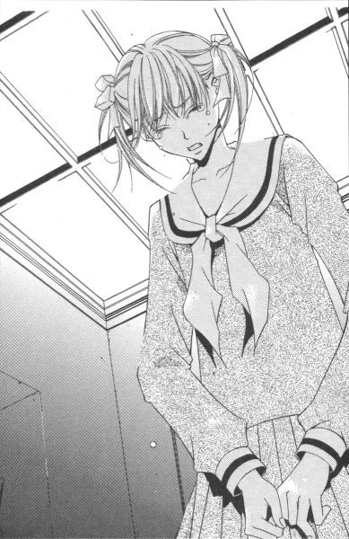
「今日じゃない時に、落ち着いて話しましょう。私も少々気が立っているようだから、言い過ぎたかもしれないわ」
「あ」
向けられた背中があまりに寂しくて。後ろ姿を追いかけようとしたその時、令さまと三奈子さまが薔薇の館に到着した。
「ど、どうしたの祐巳ちゃん」
令さまが叫ぶ。
「何でもないわ。早いところ最終会議をしてしまいましょう」
祥子さまは、祐巳を残してさっさと中に入った。
「何でもないって、......ねえ」
「ええ」
三奈子さまと令さまは顔を見合わせた。祐巳のぼろ雑巾みたいな顔見たら、ただごとじゃないって思って当然なんだけど。だけど、祐巳にしてみれば「放って置いて」って感じだ。こういう時は、やさしくされるとかえって辛い。
「あなた方も、やっぱり私を一方的に悪者にするつもり!?」
ヒステリックな叫び声が、階段の上の方から聞こえてきた。
「......とに、何でもないんです」
やっとのことで声を絞り出して、祥子さまとは反対の方角、館の外に向かって祐巳は走っていった。令さまや三奈子さまの声が、背後から聞こえたような気がしたけれど振り返らなかった。
否。振り返れなかった。
２
『悩んだり迷ったりしたことも、来年再来年もっと先にいい思い出になるはずだから』
廊下を走りながら、静さまの言葉が頭の中で何度もリピートされた。
（だめみたいだよ、静さま）
いい思い出なんて、なるとは思えなかった。
自己嫌悪と失望と、そして涙でぐちゃぐちゃになった自分の顔を、どんなに年月が経とうとも笑って思い出せるはずがない。
『それじゃ姉妹でいる意味がないじゃない』
きっと、祥子さまは今度こそ祐巳に愛想をつかした。
祐巳は人気のない場所を求めて、無我夢中で走った。令さまの表情から、自分は相当ひどい顔をしているはず。まだクラスメイトたちが残っていると思われる教室になんか、すぐに戻れるわけはない。あれこれ詮索されて、ますます事が大きくなってしまうだろう。
とにかく、今は誰にも会いたくなかった。
いつの間に校舎の端まで来たのか、目の前には非常灯の緑色をしたランプがまぶしく発光していた。祐巳は、非常口の扉を開けて外に出た。
外気が肌に痛い。けれど、それは表面的なものだった。裏門へ急ぐ下校生徒の姿を避け、その場所に向かった。そこは滅多に人が訪れない場所だいうことを、祐巳は知っている。
久しぶりに入った古い温室。印象はあまり変わっていなかった。花がなくなって葉も寂しくなった分、殺風景になったかもしれないけれど、もともと多くの人々から忘れ去られ、ひび割れたガラスも修理されずにあるような場所だから。温室とはいえ、ここに華やかなものなど求めてはいない。
ぼろぼろの温室だけど、風よけにはなった。ここに来て、やっとホッと息をつけた。
学園祭の前日、祥子さまも柏木さんや彼にまつわる諸々の事情から逃げてここにいた。そういえば由乃さんにロザリオを突き返された令さまも、一人ここで呆然としていた。
なぜだろう、この古い温室は傷ついた心を癒してくれる力があるのだろうか。
「──ロサ・キネンシス」
枯れ枝と見まごうほどに冬の眠りについた細い木々たちの間に、それはあった。鉢植えではなく、床を切り取ったように盛られた土の中から、すっくと背筋を伸ばしている。すでに薄暗くなりはじめた温室の中で、そこだけスポットライトが当たっているかのように、祐巳にははっきりと認識できた。
ネームプレートがあるわけではない。だけど祐巳は知っていた。大好きな人が、教えてくれたから。祐巳は近づいて、そしてその力強い幹に触れた。その時祐巳は、自分はこの木に会いに来たんだと思った。
「お前、四季咲きだって」
でも、残念ながら今はあの時の赤い花がついていない。思わず苦笑する。まるで何かの啓示のようではないか。
「私、お姉さまに嫌われちゃったかなぁ」
祥子さまを慕う自分の気持ちは、この木のことを教えてもらったあの頃と変わっていない。いや、むしろ知れば知るほど祥子さまのことを好きになっていた。なのに、どうしてこんなことになってしまったのだろう。
トントン、と外からガラスを叩く音がして顔を上げた。薄暗がりに目を凝らして見ると、汚れたガラス越しに見えた人影は白薔薇さまだった。
「やっぱりいた」
ぐるりと回って入り口から顔を出す。白薔薇さまにしては珍しく、「入ってもいい？」なんてお伺いをたててから足を踏み入れた。
「一人になりたいかな、とも思ったんだけど。祐巳ちゃん暗いの苦手だし」
「......ご迷惑かけて済みません」
不思議だ。少し前まで誰にも会いたくなかったはずなのに、今、白薔薇さまが来てくれたことを素直にありがたく感じている。
「いいのいいの」
白薔薇さまは軽く笑いながら、祐巳の側まで歩いてきて、同じようにロサ・キネンシスの木の前でしゃがんだ。
「会議に出席しない私が出動するのが筋だし。何となく、話の途中であんなことになっちゃったでしょ、ちょっと後味悪かったんだわ」
志摩子さんが薔薇の館に来る前の会話。何だ、ちゃんと覚えていたんだ。
「それにしても。さっきは、昔の光景の再現て感じだったなぁ」
手持ちぶさたに落ちていた枯れ枝で側の鉢植えなんかほじくりながら、白薔薇さまは懐かしそうにつぶやいた。祐巳はその「さっき」がどの辺りのことかわからなかったので、ただ黙って聞いていた。
「祐巳ちゃんはさ、自分では祥子と全然似ている部分なんかないと思っているかもしれないけど。私から言わせると、ビックリするくらい重なる時があるんだ」
「......押しが足りない？」
「ああ、言ったことがあったっけ。うん、大ざっぱに言うとそういうことなんだけど。ちょっとニュアンスが違う」
例えば、と白薔薇さまは言った。
「誰かと、何かで意見がことごとく合わなかったりするでしょ。そういう時由乃ちゃんなんかは徹底的に、それこそ相手をやり込めるまで討論するけど、祐巳ちゃんは口をつぐんで側を離れる。祥子もそう。そんなとこが、似ている」
「祥子さまは、言いたいこといっているじゃないですか」
祐巳は思わず口を挟んでしまった。白薔薇さまったら、誰かと間違えているんじゃないだろうか。
「最近はね。紅薔薇さまに鍛えられたから、多少元気になったけど」
以前は、寡黙でつき合いにくいタイプだった、って。信じられない。
「きっと、根っこの部分は変わっていないよ。自分の中の多くを語って、それを否定されるのが怖いタイプ。柏木とのことだって、依然うやむやにしたままでしょ。あの子はね、自分がそうしていい場所をわきまえて威張っているの。この人の前だから自分を出しても大丈夫、って。結局、自分に自信がないんだね」
白薔薇さまは、言いたい放題祥子さまの性格分析をした。
「で、話は戻すけど。昔見た光景の再現、っていうのはね。さっきの祐巳ちゃんと祥子、そっくりそのまま一年十ヶ月前の祥子と蓉子、──今の紅薔薇さまだったわけ」
「え？」
「姉妹になって間もなくだったかな。いや、なる前だったかもしれない。私その頃あまり他の生徒に関心なかったから、時期とかの記憶はあやしいけど。とにかく一学期始まってすぐのことね。言いたいことがあるならはっきり言え、って蓉子が厳しい口調で言っていたのを目撃した」
「祥子さまに？」
「そう、祥子にね。あの子は育った環境もあるけど、自分の意見をはっきり伝えることが苦手だったから。よくムッとしたまま、何かに腹を立てていた。だけどある日、それじゃわからないって蓉子が強く言ったの。あれは祥子も堪えたみたいね。でも、まあそれから徐々に自分の意見を言えるようになった。時々ヒステリックになるのは、名残っていうか今までの反動っていうか。そんなのだって知っているから、みんな大目に見てるわけよ」
「はあ」
「だからイライラするんだな、きっと」
「イライラする、って祥子さまが？」
「そう」
「どうして」
「そりゃ、自分を見ているみたいだからでしょ」
祐巳はその時、いつだったか蔦子さんが言った言葉を思い出した。祥子さまは自分の分身みたいな妹なんて欲しくないだろう、って。
人は自分にない物を求める──。それは、祥子さまにひかれた理由の一つだから、祐巳にもよくわかる。
じゃあ、もし。逆に自分の中にある嫌いな部分を、身近な人の中に発見してしまったらどうだろう。鏡を見せられているみたいで、とても不快だろうと察するに難くない。
「だからさ、祥子のキツイ仕打ち許してやってよ」
「許す、なんて」
ぶんぶんと首を左右に振る。
「じゃ、こんなことで嫌いになったりしないね？」
「も、もちろんです」
今度は激しく、首の上下運動。祥子さまに嫌われることはあっても、こっちから嫌うなんて金輪際ない。そう思う。
「いい子だ」
白薔薇さまは、祐巳の頭をくしゃくしゃと撫でて笑った。
「じゃ、そろそろ帰ろ。あたしゃ、この温室ちょいと苦手なんだ」
よっこらしょと立ち上がって、白薔薇さまはスカートをぱたぱたとはたいた。気がつけば辺りはもう真っ暗で、白薔薇さまの表情なんてほとんどわからない状態だ。校内の路地に点々と立っている外灯の明かりが温室の中に届いているお陰で、辛うじて転ばずに歩けた。どこかに電気があるかもしれないけれど、スイッチを探している間に外に出られそうだ。
「祐巳ちゃん、ここ段差があるから気をつけて」
白薔薇さまが左手を差し出す。祐巳はその手をとって、そしてそのままその先についている腕にしがみついた。
「どうしよう」
「んー？」
「もうすぐ白薔薇さまは卒業しちゃう。そうしたら、どうしよう」
こんな風に、辛い時に助けてくれる人はいない。自分と祥子さまの間を取り持ってくれる人はいない。
「嬉しいこと言ってくれるじゃない、祐巳ちゃん」
不意にまとわりついた腕を、白薔薇さまは振り払ったりしなかった。だから祐巳は、志摩子さんには悪いけど、少しだけこのやさしい腕を貸してもらうことにした。
「大丈夫だよ」
残った右手が、軽く祐巳の頬をつねった。
「私も、私のお姉さまが卒業した時、すごく不安だったけど。思ったより、どうにかなっちゃうものだから」
「どうにか──」
本当にどうにかなるのだろうか。明日のことさえとらえ所がないのに、それ以上先の予想なんかつかなかった。
「祐巳ちゃんの場合、もう少し祥子に本音でぶつかることだね。それさえできるようになったら、何があってもきっと乗り越えていける」
「でも」
「祐巳ちゃんならできる、って。だって、私にはちゃんとこうして心を伝えることができたでしょ？」
白薔薇さまはまるで自分は実験台だと言わんばかりだけど、そんなことはない。祐巳にとっては、白薔薇さまに告げた瞬間もまた確かに本番だった。
「それじゃ、祐巳ちゃんに宿題をあげよう。自力で祥子と仲直り、いい？」
「......はい」
自信がなかったけど、返事した。だって、祥子さまと祐巳は姉妹なんだから。仲直りのために、誰かに中に入ってもらうなんておかしい。
ロザリオをもらう時も二人だった。姉妹のことは、二人で何とかするしかないのだ。
３
鞄とコートをとりに一旦教室に立ち寄って、それから白薔薇さまと二人で帰った。中庭に面した窓から、薔薇の館の灯りが見えた。
祥子さまは、まだ明日の準備でそこにいる。でも、祐巳は立ち寄らなかった。
たぶん、祥子さまが言ったように、話をするのは今日じゃない方がいいんだ、って。何となくその通りだと思った。
廊下の手洗い場で顔を洗って鏡を見ると、目は充血していたけど腫れはずいぶん引いていた。温室の中で小一時間話し込んでいたのがよかったのかもしれない。帰り道に夜風に吹かれれば、ほとんどわからなくなるだろう。どうやら、家族に心配かけずに済みそうだ。
並木道を歩きながら白薔薇さまは、似ている部分と違う部分、両方持っている姉妹がうまくいく、って話をしてくれた。実際、そういう姉妹が多いって。
「白薔薇さまも、志摩子さんを見て自分と重なる所があると思いますか？」
「ん？ 私が志摩子に？ うん、時々ね。面倒くさい性格だな、って思うけど。でも昔の私に比べたら上等だと思うよ。できればいろいろなしがらみから解放してあげたいけど、私じゃ駄目だしね」
「どうして」
「私は志摩子のこと知りすぎているから。だから、荒療治ができない」
だから、相手のことがわからなくてけんかするような姉妹が、うらやましい。お節介しちゃうのはそのため、だって。
何だか、わかるようでわからない。
マリア様の前で手を合わせながら、祐巳は小さく首をひねった。白薔薇さまの会話って、どうしてこう説明不足のままどんどん先に行っちゃうんだろう。さっき温室で話をしてくれた時は、もう少しわかりやすかったんだけど。
「時に。祐巳ちゃんの作るチョコレート、すごく甘そうだよね」
バスのステップに足を掛けながら、白薔薇さまは思い出したように呵々と笑った。それにしても、突然話が飛ぶなぁ。
「祥子に作るんでしょ？ 今夜これから？」
「ええ、まあ」
実は、たった今思い出した。本当は早く帰ってお夕飯までに作り終わりたいと思っていたんだけど、いろいろあって予定が狂った。お風呂、何時に入れるかな。
「おいしいの、できるといいね」
シートに腰かけてからも、白薔薇さまはずっとチョコレート関係の話を一方的にしゃべり続けた。どこそこのお店のあのチョコレートと、よく行く喫茶店のブルーマウンテンの組み合わせが絶対に合うと思うけど、試せないのが残念だ、とか。生チョコの丁度いい冷やし具合とか。単に、お腹空いたんだと思う。
「でね。少し甘みを抑えたのが、私好み。隠し味程度に洋酒が入っていると、ベターなんだけどなー」
そこまで言われて、やっと催促されていることがわかった。
「あの。白薔薇さまにあげるなんて言った覚え、ないですけど」
「え、マジ!? 当然、くれるんじゃないの!?」
当然、って。どこからその考えが沸いて出るのか。志摩子さんからはもらえそうもない、って諦めているくせに。
「静さまに無心するような人には、お義理でもあげられません」
「あれー、何で知っているの？」
悪びれもせずに言うんだから。始末が悪い。こうして誰彼構わず、チョコレートをせびっているんじゃなかろうか。白薔薇さまは。
「ちぇーっ」
唇を尖らせて子供みたいに拗ねて見せる。達観した高校三年生じゃなくて、すっかり力抜いたいつもの白薔薇さまに戻ってしまった。
「チョコレート食べたいなら、お店で売っていますよ」
特に今の時期なら、たくさんの種類が店頭に並んでよりどりみどり。
「愛情のこもったのが食べたい」
「だったら、志摩子さんのお家に電話したらどうですか。チョコレート頂戴、って」
「やだ」
「じゃあ、諦めるしかないです」
「やだやだ。チョコレートくれなきゃ、祐巳ちゃんを食っちゃうぞ」
「はいはい」
もう、まともに相手になんかしてられない。
「食っちゃうと言ったら、本当に食っちゃうからね」
乗客がまばらなのをいいことに、親父モード炸裂。ぎりぎり他の人に聞こえない程度に声のトーン落として、顔はすましているから、遠目にはリリアンの生徒の無邪気なおしゃべりに見えるだろう。彫りの深い、少し異国風の美少女が、まさかこんな際どい言葉を発しているとは、運転手さんも、真ん中辺りに座った中年男性も、シルバーシートのお婆ちゃんも気づくまい。
白薔薇さまは、駅に着くまで祐巳にだけ聞こえるように「チョコレート」を連発した。何となくだけど、哀れな気持ちになって。気が向いたら、白薔薇さまの分も作ってもいいかな、と思いはじめていた。
もちろん、祥子さまに作った余りになるだろうけれど。
ウァレンティーヌスの悪戯
１
目が赤いのは、前日泣いたためではない。
だとしたら、このクラスの三分の一は、昨日何らかの理由で大泣きしたことになってしまうだろう。
もちろん。偶然同じ日に、一クラスの生徒たちの大半が災難や不幸に見舞われてしまうという確率は、ゼロではない。
だが、今回は違う。
皆、今日という日を自らが選んでウサギとなった。赤目の原因は、寝不足。
物が物だけに、何日も前から作り置きしておくことはできない。一年桃組の少女たちは、試験前でも頑張れない夜更かしにチャレンジして、それぞれがプレゼントのチョコレート菓子を見事に作り上げたのであった。
教室に入るなり、学園祭の日並みの賑やかさに祐巳は言葉を失った。
「レシピにね、三日は日持ちしますって書いてあったから、三日前から毎日作り続けて一番よくできたのを持ってきたの。結局ビギナーズラックっていうのかしら、最初に作ったのが一番上出来だったわ。だから、お姉さまには『本日中にお召し上がりください』って言わなきゃいけないのよ」
「お昼休みに渡す約束しているんだけど、困ったわ。教室の室温で、チョコレートが溶けてしまわないかしら。ロッカーの中に入れておいた方がまだ涼しいわよね」
「どうしよう。箱が少し潰れてしまったわ。でも、今更中身を確認できないし」
「クッキーが湿気ると困るから、海苔の缶に入っていた乾燥剤を一緒に包んだの」
──等々。
ワイワイ、ガチャガチャ。
祐巳はいつもより三十分も早く来たというのに、クラスの半分がもう登校していた。みんなラッシュを避けるために早めに家を出たのだろう。あるいは、朝一番でお姉さまにチョコレートを渡すために。
登校してきた時、銀杏並木の途中にあるマリア像の前では、すでに数組の姉妹がチョコレートの贈呈式を済ませていた。夜更かしした上に早起きまでして、みんなごくろうさまである。
市販の物を用意していた人は多少気楽だけど、その分手作りカードなんかに凝って結局は寝不足だったりして。去年の令さまみたいに、ケーキとかチャレンジした人は冗談じゃなくて半徹夜状態だと思う。手編みセーターを贈る予定だった人なんか、間に合わなくて結局ベストになっていた。
「祐巳さん、ごきげんよう」
ウサギの一人である桂さんが、ピョンコピョンコと跳ねて祐巳の側にやって来た。
「桂さん、もうチョコレート渡したんでしょ？」
「当たり。よくわかったわね」
「他の人に比べて、緊張感がなくなっているもの」
これから渡す予定の人は、体中から目に見えない不思議な光線が出ているからわかった。もらってくれなかったらどうしよう、とか。あげるまでにアクシデントで壊れたらどうしよう、とか。気が抜けない、ってちょっとだけピリピリしている。
「祐巳さんは？ 祥子さまにいつ渡すの？ 放課後は、つぼみたち忙しいんじゃない？」
「......うん」
まだ約束していないから、って答えて笑った。事情を知らない桂さんは、「姉妹なんだから約束なんかしなくても、いつでも渡せるじゃない」と言った。自分だって、朝一番でテニスコートにお姉さま呼び出してチョコレート渡したくせに。
「ちょっと出てくるね」
祐巳は脱いだスクールコートと鞄と手提げ袋を置いて、教室を出た。そのまま、真っ直ぐ二年生の教室がある一角に向かう。
手提げの中には昨日、というより今日の午前二時までかかって作ったトリュフチョコレートが、小箱に入って眠っている。
令さまオリジナルに触発されて、独自のトリュフチョコを作ろうと試行錯誤した結果、素人が作るにはオーソドックスが一番ましであるということを学んだ。独自性を追い過ぎて、妙な香辛料とか洋酒とか入れて強烈な味つけになってしまったのだ。結局、失敗を見越して用意しておいた約三倍の材料をすべて使い切ったところで、まともにできたのは祥子さまにプレゼントする分だけだった。
箱詰めしながら、白薔薇さまのことがチラリと頭に浮かんだので、ちょっとした悪戯心も手伝って、見た目はイケているけれど味は最悪という失敗作を、同じように箱に詰めて持ってきた。静さまのチョコレートを受け取って鼻の下伸ばしているようだったら食べさせちゃえ、と思ったのだ。
だから手提げ袋の中には、二つ小箱が入っている。色違いの箱を選んだから、間違えて渡す心配はない。アイボリーの箱が祥子さま、ブラウンの箱が白薔薇さま。
二年松組は、祐巳のクラスよりは騒がしくなかったけれど、やはりそれなりの人数がすでに登校していた。二年生の場合、妹であり姉でもあるから、チョコレートをあげる側にももらう側にもなるわけだった。松組の前にも隣の椿組の前にも、スターの入り待ちしているファンのように一年生らしき生徒の姿が確認できた。
「あ、福沢祐巳さん」
扉の前で取り次ぎを頼もうとうろうろしていた時、ちょうど教室の中から出てきた生徒が祐巳の顔を見て名前を呼んだ。
「祥子さんにご用？ ちょっと待ってね」
言ったかと思うと、くるりと踵を返して教室内に戻っていく。
「あ、あのっ」
呼び止めるまもない。もともと祥子さまを呼んでもらおうと思っていたから、呼び止める必要はなかったんだけど。
（──えっと）
何も言わずとも、用が足りてしまった。あまりの呆気なさに、張っていた肩肘の力がどっと抜ける。要するに、祐巳の顔と名前とが、すでに小笠原祥子の妹として生徒たちの脳にインプットされてしまっているらしい。
上級生の教室を訪ねるということで、少なからず緊張していたんだけど。失敗しないようにしなくちゃ、って。お姉さまに恥ずかしい思いをさせちゃいけない、って。そんな心配したのは、取り越し苦労だったらしい。
（はぁ......）
ここでため息を一つ。一難去ったところで、次の一難を思い出す。勇気を振り絞ってここまで来たのは、祥子さまに会うためだったのだ。
「ごめんなさいね。祥子さんもう来ているみたいだけれど、教室にはいないの。薔薇の館には行ってみた？」
「いえ」
今日の宝探しの本部になる、っていうから「部外者」は入っちゃいけないかな、って考えていた。だから、薔薇の館に行く前の祥子さまを捕まえようと、教室を訪ねたのだった。
「たぶん、そこにいると思うわ。行ってみたら？」
「はい」
行くかどうかはともかく、「ありがとうございました」とお礼を言って頭を下げた。
「どういたしまして。あ、祐巳さん。今日はあなたも参加するんでしょ？がんばってね。私たちも応援しているから」
祥子さまのクラスメイトは、本人はそんなつもりじゃなかっただろうけれど、思い切り祐巳にプレッシャーを与えてくれた。
二年生は、一年生ほど宝探しに燃えていないのだろうか。落ち着いて考えてみれば、同じクラスで一緒に机並べているお友達にとっては、クラスメイトとの半日デート券なんて興奮するほどの価値はないかもしれない。祐巳だって、もし志摩子さんとの半日デート券を手に入れたとしたら、もっと相応しい人に譲ってあげたくなるだろう。それときっと同じことなのだ。
教室に戻るか、薔薇の館に行ってみるか。──迷いながら、祐巳は廊下を彷徨った。
行く先々、校舎のいたる所で、チョコレートのやり取りが行われている。階段の踊り場とか、職員室の前とか。この寒いのに、中庭で待ち合わせている生徒たちもいる。「暖」と「人気のない場所」を秤にかけた結果の選択かもしれない。
校舎内をグルグルと回っていると、昇降口を入ったところで新聞部が最新版の『リリアンかわら版プチ─（以下略）─』を配布していた。
「さあ、いよいよ本日の放課後。三時四十分から、新聞部プレゼンツ『山百合会幹部薔薇のつぼみのお宝探し大会』が始まります。参加方法はこちらに書いてあります。チョコレートのやり取りは昼休みまでに済ませて、皆さんふるってご参加ください」
声を張り上げているのは、三奈子さまの妹だった。記事の内容を一部読み上げているところなんか、本当のかわら版屋さんみたいで感心した。
「祐巳さん」
一枚もらったところで、後ろから肩を叩かれた。振り返ると、そこには三奈子さまの姿。
「よかった。昨日の様子から、もしかして欠席されたらどうしようか、って思っていたところよ」
そういえば、三奈子さまは祐巳の濡れぼろ雑巾の顔を見た一人だったかもしれない。パニック起こしていたから、辛うじて記憶の隅に引っかかっているだけなんだけど。
「ご心配おかけして」
「まったくよ。妹が参加しなかったら、盛り上がりに欠けるものね」
「......はあ」
三奈子さまのご心配は、企画がどれくらい盛り上がるか、のみであるらしい。
「祥子さんには？ まだ、会っていないの？」
「ええ」
「それはいけないわ。いらっしゃい」
「あっ」
三奈子さまは祐巳の手を掴んだかと思うと、そのままどんどん廊下を歩いていく。
「どんな事情か知らないけど、放課後までに和解してもらいたいものだわ。つぼみが妹と仲違いしたままじゃ、雰囲気暗くなっちゃうじゃない。でも祐巳さん。万一うまくいかなくても、宝探しには参加してくれるでしょ？」
「えっ」
「ＯＫ、決まりね。約束よ」
（......約束、って）
同意した覚えはないんだけど。三奈子さまは、自分の希望を現実の出来事に、勝手にスライドしてしまっている。でも、まあ参加はするつもりだったから訂正もしなかった。
連れてこられたのは、薔薇の館だった。
「あの」
「何？」
「部外者が入っていいんですか？」
扉には、早々と『お宝探し大会本部』という張り紙がはられていた。
「いいわよ、もちろん。宝探しの間は薔薇の館を開放することになっているから、この中に企画書とかは残していないし。つぼみたちは口が堅いから、隠し場所を漏らすとも思えないし」
「どうぞ」
三奈子さまはすっかりそこの住人にでもなったように、扉を開けた。で、祐巳はというと、逆にお客さまみたいに「失礼します」と館の中に一歩足を踏み入れた。これじゃ、いつもとあべこべだ。
「じゃ、健闘を祈っているわ」
一緒に中に入ると思いきや、三奈子さまはそのまま回れ右して帰っていった。放送朝拝が始まるまでに、やらなきゃいけないことがたくさんあるんだって。忙しいんだったら、よその姉妹の世話なんかやかなければいいのに。
重い足取りで階段の側まで進んだ時、一階の部屋の扉が開いた。
「うわっ!!」
扉を挟んで中と外。相手がそこにいたなんてお互い知らなかったから、どちらもその場で心臓押さえて硬直した。
「......びっくりした。祐巳さんだったの」
「何だ、志摩子さんか」
「ど、......どうしたの」
志摩子さんには珍しい狼狽ぶり。まるで、何かよからぬことでもしていたみたい。
「祥子さま、来ている？」
「え？ ええ。上に......たぶん」
「ありがとう」
お礼を言って、そのまま階段を上った。早くしないと、三奈子さまじゃないけど放送朝拝までにやるべきことができなくなってしまう。
（しかし、志摩子さんたら汗かいていた）
階段の途中で立ち止まり、たった今志摩子さんが出てきた扉を顧みた。
普段やりなれないことするのも大変だ。たぶん、宝探しに関連した行動であろうと思われたので、祐巳はその現場を見なかったことにしてあげた。
二階の、会議室という名のサロンの扉の前に立つと、中からは祥子さまだけでなく複数の声が聞こえた。
ジャンケンのぐーを胸の位置でキープしたまま、祐巳は動きを止めた。実際そこに敷居なんてないけど、心の敷居はずいぶん高い。昨日の自分の醜態思い出して、逃げ帰りたくなったけれど、祥子さまの妹でいたいんだったらいつかはぶつからなきゃいけないのだ。
今度こそ、この扉を開けたら祥子さまがいる。
（まず昨日のことを謝って、それから──）
即席イメージトレーニングして、ノックした。すぐには返事はない。返事があるまで待っていたらせっかくついた勢いが萎えそうなので、そのまま扉を開けて中に入る。
「いい加減にしな、由乃」
入って早々浴びせかけられたのは、令さまの大声。
「教えてくれなくていいから、私の予想だけ聞いてよ」
叱られたっていうのに、由乃さんは一向に怯まない。怯まないどころか、食いついて離れない。キャンキャンって、まるでうるさくつきまとう小犬。これじゃ、祐巳のノックなんて聞こえやしない。
「私の顔色見て当たりかはずれかを判断するつもりだろうけど、その手には乗らないよ。......あ、祐巳ちゃんいいところに来てくれた。悪いけど、このうるさいの、どっか連れ出してくれないかな」
「え......あ、はい？」
よくわからなくて目を白黒していると、令さまは由乃さんの両手を掴んで祐巳の側まで連れてきた。それで、「はい」って物でも渡すように由乃さんの身柄を引き渡したのだ。
「ヒントくらいいいじゃない。お姉さまのケチ」
顔をしかめて舌を出す。由乃さんには、憎たらしい表情がなぜかとても似合う。むしろ可愛いくらいだ。
「教えられるわけないでしょ。妹だっていうだけでも、かなり有利なんだから」
つまり由乃さんは、今日の令さまがお宝を隠した場所をどうにか聞き出そうとして、しつこくまとわりついていたらしい。それじゃ、令さまが叱るの当然だ。
「えっと」
こんな大変な物、もらっても困る。しかし捨てぜりふで一応発散できたのか、由乃さんは暴れもしなかったから一安心。
「もういいです。お姉さまには頼みません。......祐巳さん、行こう」
当初は由乃さんを連れていくはずだったのに、逆に連れていかれる格好になってしまった。せっかくのイメージトレーニングが、全部無駄。
祥子さまは、確かに令さまの姿の向こうにいる。お気に入りの椅子に座って、静かな視線でこちらを見ているっていうのに──。
「ちょ、ちょっと待って、由乃さん」
ビスケット扉の向こう側まで引きずられていった所で、祐巳はうんって踏ん張って足を止めた。すぐ済むから、そう言って引き返す。
「お姉さまっ」
「な、......何？」
すごい勢いで戻ってきたから、祥子さまは素直に度肝をぬかれたようだった。
「あの、昨日はすみませんでした。それで、もしよろしければ今日、お時間いただきたいんですけれど」
祐巳は一息に言った。
「昨日の続き？ ......いいわよ」
しばし考えるような沈黙の後、祥子さまは指を組み、上目遣いで言った。
「夕方でいいかしら？ 宝探しが終わった後」
「はい」
「場所は？」
「できればあまり人のいない所で......。古い温室ではいかがですか」
「温室？」
祥子さまは眉をひそめた。
「はい。あの場所で不都合なら考え直しますけれど」
「不都合ではないけれど。......いいわ温室にしましょう」
「はい」
ありがとうございました、と去りかけると、祥子さまに「祐巳」と呼び止められた。
「あなた、宝探しに参加するの？」
「はい」
もちろんです、と答える。元はといえば、宝探しに参加するために「部外者」になったのだ。その結果二人の間がギクシャクしたとはいえ、参加しなければ本末転倒だ。
「そう」
祥子さまは、なぜか複雑な表情をしていた。
２
その日は、しっかり六時間目まで授業があったんだけど。先生方には気の毒なくらい、生徒はことごとく授業に身が入っていなかった。
寝不足ということもあるし、放課後のお楽しみで頭がいっぱい、ということもある。
物のわかった教師は、自分のバレンタインデーのエピソードなどを時間いっぱい話して、生徒に一度も教科書を開けさせなかった。けしからん、という頭の固い教師も、結局はお説教に時間を使い果たしてしまったから、授業にならなかったという点ではどちらも同じだった。
そして、待ちに待った放課後。
参加希望生徒たちは、掃除をさっさと（しかし隠されている可能性のある場所はしっかりとチェックを入れながら）済ませ、薔薇の館の前の中庭に集合した。
祐巳も、後ればせながら参加者の集団に滑り込む。ちょっと離れた所に、白薔薇さまと由乃さんを発見した。
参加者に対面する形でつぼみの三人、そして新聞部の部員たちが薔薇の館を背にしてスタンバイしている。先生が数人、校舎から中庭の様子を観察していたけれど、興味津々あるいはニコニコと好意的な表情。三奈子さまがしっかりした企画書を提出して、学校側に届け出した成果だろう。──やればできるんじゃない、と祐巳は思った。
「そろそろ始めましょうか」
三奈子さまが腕時計をチラリと見、三時四十分になったことを確認してから声をあげた。
「ただ今をもって、宝探し大会の参加者受付を終了します」
その言葉が合図だったのか、新聞部の生徒数人が一斉にＡ４サイズの紙を参加者に配り始めた。もちろん、祐巳ももらった。
わくわくと見てみると、ちょうど半分の位置に点線が引いてあって、ハサミのイラストが描かれている。これは、いわゆるキリトリ線だ。ということは、この紙は点線から切り取って、いずれは左右分かれる運命になるらしい。
「ご覧になっていただけるとわかると思いますが、向かって左側はこのゲームの説明および注意事項となっています。その裏面には、高等部校舎を中心にした学園の地図がプリントされてあることを確認してください」
ひっくり返すと、なるほどそこには学園祭で使用した校内案内図から転写したと思われるかなり詳しい地図があった。裏返したわけだから、今度は点線の右側にあたる部分だ。
「点線から切り取って、参加者の皆さんには、こちらをお持ちいただきます」
ふむふむ。祐巳はみんながそうしているように、紙を半分に折って点線部を爪でしごいて筋を入れた。指示されていないのに、切り取る準備しているのだ。人間の行動って面白い。
「ハサミとペンは、こちらにも若干用意されています。必要な方は、私の説明が終わってスタートがかかった後で申し出てください」
ざわつき始めた中庭で、三奈子さまが負けないくらい大声で叫ぶ。同時に祥子さま、令さま、志摩子さんのつぼみの三人が、それぞれ手に持ったハサミやカッターやペンを上にあげてみんなに示した。まるで商品を紹介する、テレビ番組のアシスタントみたい。
すると参加者の視線はつぼみに集中して、たかだか文房具を掲げただけなのに一瞬のうちにワーって盛り上がり、そして令さまが人差し指を一本唇にたてるポーズをしたことにより沈静化した。
（......す、すごい）
もちろんつぼみの人気は知っていたけれど、こんなにカリスマ性があったなんて。改めて、祐巳は、自分がすごい人たちに囲まれているんだ、ってわかった。だって、中庭は集まった生徒たちであふれている。ざっと数えただけでも、二百人以上はいるのだ。お祭り気分で参加する人もいるだろうけれど、少なくともつぼみたちに好意をもっているはずである。じゃなかったら、バレンタインデーという特別な日に寒さをおしてカード探しなんかしないだろう。副賞は、つぼみのデート券なんだから。
「──というわけで、この空欄にはクラス名と氏名をはっきりと記入してください」
つぼみ人気に感心しているうちに、いつの間にか三奈子さまの説明は先に進んでいた。
（記入？）
隣を見ると、クラスが違う一年生の生徒が、自分のポケットから生徒手帳を取り出して、それを下敷きにし、手帳に付属しているペンで何やら書きだした。何やら、って自分の名前のようだ。
そういえば、さっきハサミとペンは用意してある、って言っていたっけ。向かって右にプリントとされた文字に視線を落とすと、いきなり誓約書なる言葉が飛び込んできた。
（誓約書......？）
よくよく見ると、その後に「兼登録書」とある。左に書かれた注意事項と同じ文面が書かれていて、最後に「以上の注意を守って、ゲームに参加することを誓います」と付け加えられ、その下の空欄にクラス名と氏名を書くことになっている。
考えたな、三奈子さま。誓約書提出させて、無謀な行為を抑えるつもりだ。
誓約書にサインしなければ参加登録したことにならないなら、参加希望者全員がサインするだろう。そして自筆サインしたということで、「諸注意を読みませんでした」という言い訳は効かない。ゲームの最中に何かトラブルがあっても、注意事項を守らなかったために起きたことなら、それは自己責任ということになる。参加者の気を引き締める効果は、十分期待できるだろう。
「つぼみの直筆カードは、このような形態をしています」
三奈子さまは青い紙を上に示した。後ろの人にも見えるように、残りの新聞部員たちが数ヶ所に分散して同じ紙を掲げた。見えている面自体は文庫本サイズの厚紙だったが、二つ折りされているから実際はその倍の大きさだった。
「これは見本ですので青にしましたが、現物はそれぞれの薔薇のつぼみの色になっています」
祥子さまは紅、令さまは黄、志摩子さんは白というわけだ。
「紅、黄、白のカードはそれぞれ一枚ずつ、校内のどこかに隠されています。もし見つけたら、そのまま本部である薔薇の館に持ってきてください。参加登録の名前と生徒手帳を照らし合わせて、間違いなければ優勝者の認定をさせていただきます。手書きカードに加え、副賞のつぼみの半日デート券をその場でプレゼント」
「わー」とも「きゃー」とも「うおー」とも表現できない、どよめきアンド歓声が中庭に轟いた。校舎に囲まれた場所だから、反響して結構響く。
「途中何かありましたら、薔薇の館または校内数ヶ所に常駐している新聞部員に相談してください。場所は地図に示してあります。......何か質問はありますか」
説明が一段落した三奈子さまが、参加者に向かって言った。
「はい」
数人の生徒が元気よく手を挙げたので、三奈子さまは近い方から順に指した。
「もし、複数の生徒が同時にカードを見つけた場合はどうなるのですか」
あ、なるほど、と祐巳は思った。これだけの人数が一度に捜し物するんだから、そういうパターンもあり得ないことはない。みんなが「それらしい場所」を探るのだから。
「そうですね。最初に手に触れた人、という決め方しかできないでしょうけれど、ほぼ同時ということでお互いに譲れない場合もあるかもしれませんね。その場合、発見者は連れ立って薔薇の館まで来てください。つぼみの前でジャンケンをして決めることにします。いいですか？......では次の質問」
「発見したカードは、贈与していいですか」
祥子さまファンなのに令さまのカードを見つけちゃった、という人は令さまファンのお友達にカードをプレゼントしていいかどうかという質問。
「基本的にはその行為を認めたくはないのですが、私たちの見ていない場所で贈与が行われた場合、それの不当性を判断する手だてがありません。ですから、先ほども言いましたが誓約書と生徒手帳とカードが揃っていれば優勝者と認定いたします。が、時間制限などの条件を考えますと、発見者が第三者にプレゼントすることはかなり難しいと思います。また、優勝者以外がデート券を使用することはできません」
三奈子さまの回答はちょっと難しいけど、要するに、もし祐巳が偶然令さまのカードを見つけてしまったとして、由乃さんにあげようと考えてもそれは結構難しいぞ、ということらしい。
誰にも目撃されずに由乃さんに手渡し、尚かつ由乃さんが「私が見つけました」って申請したのなら、しょうがないから認めてくれるらしい。でも制限時間内に、今度は動き回っている由乃さんを捜し出すなんて至難の業だ。令さまのカードが目的じゃない人間だったら、その残り時間で、祥子さまなり志摩子さんなりのカード見つけるだろう。
どっちにしろ、それをするためには何よりまず第一発見者にならなければならないのだ。
「他に質問はありませんか」
三奈子さまがぐるりと参加者集団を見回し、挙手がないことを確認した。
「四時四十分までに申請がなかった場合、つぼみのカードは無効になります。......さて、いよいよスタートですけれど、その前に、参加者の中につぼみの姉妹の方がいらしたらこちらに集まってください」
「──え？」
つぼみの姉妹。それは、祐巳自身のことでもあった。
首を傾げながら、由乃さんたちが三奈子さまの側に歩みでた。
「ほら、祐巳さんもでしょう」
近くにいたクラスメイトに押し出されるように、祐巳もその中に混じる。メンバーは白薔薇さま、由乃さん、それになんと今までどこにいたのか黄薔薇さままでいる。
「受験、終わったんですか」
小声で尋ねると、「まだ」という返事。まあ、黄薔薇さまのことだから、こんなに面白そうなイベントがあるのに参加しないなんて我慢がならなかったのだろう。
「つぼみの姉妹の方たちには申し訳ありませんが、公平をきすためにもスタート時間を五分遅らせるというハンデをつけさせていただきます」
「えーっ!?」
つぼみの姉妹は全員ブーイング。そのことも含めて、三奈子さまの計らいは他の参加者を喜ばせた。
言われたのがスタート直前に突然なものだから、由乃さんなんか暴れて抗議もできない。文句は言っているんだけど、群衆の歓声にかき消されてしまった。
「それでは誓約書を提出した方からスタートです」
三奈子さまが体育で使うような笛を吹いた。
そして、参加者は動き出した。
３
一歩引いて観察していると、生徒たちの動きがよく見えた。
まず、三奈子さまの説明の間、署名しいの切り取りしいのと万端整えた生徒たちは、スタートがかかると同時に最寄りの新聞部員が抱えた段ボール箱に「誓約書」という名の半ぺらを投げ込んで、校舎だの校庭だのに素早く散っていく。やることが早い。──すでに目星をつけているのだろう。
次に、几帳面で神経質なタイプ。筆記台もないのに文字なんて書きたくないし、ハサミなしで紙を切るなんて許せない、って感じ。どんどん時間が経過していくことも構わず、筆記台のために出された長机に順番待ちで列を作っている。これじゃ、つぼみの姉妹のスタートより遅くなる人だっているのではないか。
その中間に位置しているのが、一番多いタイプかもしれない。何だかよくわからないままスタートがかかったので周囲を見回し、あるいは友人同士で相談しながら完成させた誓約書を段ボールに提出してグループでキャアキャア言いながら中庭を出ていく。お宝を発見した時のことを考えると、単独行動の方がいいと思うけれど。
番外編として、どっちかっていうと最初から宝探しは諦めてます、っていうタイプ。ただただつぼみを見ていたい、側にいたい、って。誓約書出してからも五メートルくらい離れて、その姿を眺めている。
祐巳はというと、薔薇の館の扉に紙を押しつけて名前を書いた。由乃さんは最初のタイプですでに準備万端だったから、イライラと上履きで芝生を掘っている。誓約書を受け取ってもらえないから、フライングはできないし。
（あーあ）
とうとうつま先に土がついた。そのまま校舎に戻ったら、廊下が汚れちゃう。
「五分経ちました。つぼみの姉妹の皆さん、スタートしてください」
三奈子さまの声に、白薔薇さま、黄薔薇さま、由乃さん、祐巳は段ボールに殺到した。
「こら、由乃ちゃん」
走り出す由乃さんの腕を黄薔薇さまが掴んだ。
「上履きに土ついてるから、雑巾で拭きなさい」
「えーっ」
「『えー』じゃないわよ。忙しい令の代わりに、私が注意するの当然でしょ？」
「......はい」
不満そうではあるが、お姉さまのお姉さまには逆らえない。
「でも、黄薔薇さま。このままでは、雑巾取りにいけませんけれど？」
ほんの少しの反撃。でもお祖母ちゃまたる黄薔薇さま、まだまだ孫には負けてはいない。
「私が薔薇の館に取りに行くから、ここでおとなしくしていらっしゃい」
「あ、でしたら私が」
三年生に雑用させるわけにはいかない。祐巳は三奈子さまの許可をもらってから、薔薇の館に入った。もともと宝探しでは入っていい場所に指定されているので、許可なんかいらなかったらしい。
「何？ 何？」
事の経緯を見ていなかった白薔薇さまが、面白そうに祐巳の後をついてきた。
「何でもないです、ったら」
一々説明するのが面倒くさくて、さっさと階段上って部屋の外にある木製ロッカーを開ける。そこは掃除用具一式が置いてある場所で、バケツにかけられた雑巾一枚を手にすると部屋の流しで濯ぎ、また階段を駆け下りた。行きも帰りも、まとわりつく白薔薇さまを悪いけど完全無視。
「悪いわね、祐巳ちゃん」
玄関で令さまが、そっとねぎらいの言葉をかけてくれた。由乃さんのこと、遠くからちゃんと見ていたらしい。
「祐巳。その濡れ雑巾、片づけないでここに広げて置いておいて」
続いて入ってきた、祥子さまが言った。
「外から帰ってきた生徒が気にすると悪いから、足拭き用にね」
「はいっ」
声をかけられたことが、すごくうれしかった。うれしくて、雑巾を待っている由乃さんを放っておいて、館の中に入っていくその後ろ姿を眺めていた。祥子さまは、別に笑いかけてくれたわけでもないのに。
これからつぼみたちは、薔薇の館の二階で自分の隠した宝が見つかる時を待つのだ。敷地内の数ヶ所に分散して待機した新聞部員たちの代わりに、誓約書を回収した段ボール箱を抱えて階段を上っていく。
祥子さまの隠したカードを見つけたと申請できる果報者は、いったい誰なのだろう。それが自分だったらどんなにかいいのに。
時計を見ると、すでに四時五分。
タイムリミットまで、あと三十五分になっていた。
４
「ふーむ、なるほど」
由乃さんが使った雑巾を、祐巳が祥子さまの指示通りに館の入り口に足拭きマットの要領で置いてやれやれと腰を上げると、白薔薇さまが立っていた。
「なるほど、って？」
「祐巳ちゃんのバタバタ、何していたのかやっとわかった」
ずっと、見ていたのだろうか。玄関入ってすぐの、少しだけ段になった所で腕組んでのんびりしている。由乃さんなんかは、お礼そこそこに飛び出していっちゃったというのに。
「ご苦労、ご苦労。んじゃ、ちょっと呼び込みするか」
何と、白薔薇さま。扉を開けて中庭に顔出し、まだその辺にいる生徒をナンパしだした。
「おーい。よかったら中入ってお話ししない？つぼみたち、いるよ」
入りたくても入れなかったようで、きっかけをもらった生徒たちは「それじゃ」と、恐る恐る薔薇の館に入っていった。祐巳は、初めてここに祥子さまを訪ねてきた時のことを思い出した。あの時、志摩子さんが声をかけてくれなかったら、蔦子さんと二人でずっと立ち往生していたかもしれない。今、薔薇の館に足を踏み入れた生徒たちは、きっとあの時の祐巳と似た気持ちでいると思う。
それにしても、まだ中庭に残っている生徒がいるというのはどういうことなんだろう。一応祐巳も「中に入ります？」と声をかけてみたけれど、その場に残った五、六人は、「いいえ」と笑って首を横に振った。
「祐巳ちゃんはどう？」
白薔薇さまがお気楽に誘う。
「遠慮しておきます」
もう、残り三十分だし。すっかり出遅れたけど、「参加することに意義がある」し。三奈子さまがハンデつけたことを都合よく解釈すると、それだけ姉妹は有利だっていうことなわけだし。
「白薔薇さま、探す気ないんですか」
「何を？」
「志摩子さんのカード」
「そうねぇ」
どうやら、面倒くさくなったらしい。しかし、参加者の数見てうんざりする気持ちはわからないでもない。
「志摩子とデートっていわれてもね。それに志摩子の隠し場所なんて、見当もつかない」
「まさか」
だって白薔薇さまは志摩子さんのこと、よくわかっているはずで。だから、志摩子さんだって生半可な隠し場所じゃだめだって、そう思ったんじゃなかったっけ。それとも裏の裏まで考えて、わからなくなっちゃったとか。
「志摩子といえば信仰心。しかし、お聖堂は今回の宝探しのエリアから除外されているでしょ？ま、たとえ範囲内だとしても、志摩子が彼女の神聖な場所をゲームのために利用するとも思えないからその線はなし。ってことはマリア像の側もないでしょ。......静かなところで、ちょっと考えてみないと思いつかないな」
口に手も当てず、大あくび。考えてみる、っていうのは口実で、これはどうやら眠る気だ。
（うー。たぶん志摩子さんのカードは、あそこにあるのに）
ジリジリと、祐巳は館の一階扉を見た。
朝会った時、志摩子さんは明らかに動揺していた。あの場所に何かある。あるとしたらそれは、カード以外何があろう。でも、教えてあげるのはルール違反だと思う。ゲームの注意事項に記載はされていなかったけど、それはつぼみの妹である祐巳が偶然知り得た知識だから。
「──祐巳ちゃん、もしかしてあの部屋にいい物が隠されている？」
「あっ!?」
しまった、と思った。ババ抜きで、ジョーカー引き当てたのを見抜かれた時と同じリアクションとってしまった。これじゃ、「その通りです」と言っているようなもの。いや、それ以前に百面相で何考えているか知られていたのかもしれないけど。
「ありがとね。探してみるわ」
飛び跳ねながら、扉に直行。
「祐巳ちゃんの、健闘を祈る」
「あっ、白薔薇さま！」
自分のリアクションの正直さ及び百面相を、今更後悔しても遅かった。
（......私、って一体）
どどーん、と落ち込みかけたが、取りあえず後回しにすることにした。刻一刻と、タイムリミットの四時四十分に近づいているのだ。ここはひとまず反省を横に置いて、宝を探しにいくのが正しい選択だ。自分にしては上出来な判断である。
館を出ると、まだあの一団はいた。
（？）
彼女たちの意図がわからないまま、校舎の方に歩いていく。するとどういうわけか、その六人は揃って祐巳の後をついてくる。
（え......？）
最初は控えめな尾行だった。しかし、祐巳が早歩きになれば早くなり、小走りになった段階でダッシュで追いかけてきた。まるで逃亡者だ。
校舎沿いに走っている途中、向こう側から走ってくる由乃さんと出会った。
「祐巳さんも、金魚の糞ぶら下げているわね」
「え？」
そう言う由乃さんも、背後に数人の生徒を引っつけている。
「どういうこと？」
「私たちつぼみの妹たちが、カードの見当つけていると思っているのよ。だからその場所まで案内させよう、って腹なんでしょ。姑息な手」
「ひえ......」
由乃さんのそれは、ずいぶん悪意のある見解だけど。当たらずといえど遠からず、かもしれない。先回りするのは無理でも、第一発見者の一人になってジャンケンに参加できたら、何分の一の確率で優勝者になれるからだ。自力で見つけるよりも、そっちの可能性に勝算を見いだしたわけだ。
「どこかで、まいちゃいなさい。そうしないと、お目当ての場所にいけないわよ」
的確なアドバイスを残して、由乃さんは祐巳が今来た道を走り去った。その後ろを、まるで刷り込みされた鳥の雛のように追いかける一団は、すると令さま狙いということになるだろうか。中には祐巳のクラスメイトの姿もあった。彼女にはお姉さまがいたと思ったけれど、それとこれとは別らしい。まかり間違ってカードを手にした時、半日デートどうする気かな。
（しかし......）
自分の後ろの生徒を振り返って、祐巳はため息をつく。この集団引き連れての宝探しは、どう考えても大変だった。「まく」という由乃さんのアドバイスは、まったくその通りだと思う。でも、自慢じゃないけど、足にはそんなに自信がないのだ。瞬発力は多少あるかもしれないけど、持久力が足りない。だから持久走大会では、いつも後ろから数えた方が早い成績で。早い話が、まく自信なんてまったくないのだ。
「あのね」
祐巳は思い切って話しかけた。祥子さまの信奉者たちに向かって。
「私を追いかけていても、無駄だと思います。つぼみの姉妹だって、本当に知らされていないんだから」
「そんなこと、わかっています」
グループのリーダーであろうか、気が強そうな眉が印象的な生徒が一歩前に出て答えた。彼女とは確か、小学部の時クラス一緒になったことがあった。名前はすぐに思い出せないけれど。
「でも、祐巳さんだったら見当つくはずでしょう？少なくとも、私たちに比べたら」
「そんなことないわよ。どこを探していいのか、わからないのよ」
わからないけど、追いかけられるから逃げていただけ。だって昨日はチョコレートづくりに一生懸命で、考えている余裕なんてなかったんだから。
「まさか」
一笑に付されてしまった。どうやらどこか目的があって、走っていると思われていたらしい。ずいぶんと買いかぶられたものだ。
「私を追いかけ回しているうちに、きっと誰かが見つけるわよ」
無駄かもしれないけれど、祐巳は説得を続けた。
「そんなこと言って、私たちを諦めさせてから一人でカードを取りにいく気でしょ。いいわ、早く行ったらいかが？でも、祐巳さんが行く方角に私たちが偶然行ったとしても、規制する権限なんてあなたにはないはずよね？」
「うー」
そうそう、変に弁が立つ生徒だったこの人。学級会で反対意見なんて支持しようものなら、徹底的にやり込められるようなタイプ。由乃さんと蔦子さんと黄薔薇さまの「すごい部分」を全部足したような感じ、っていうのかな。
それじゃ祐巳ごときが、まともに相手にしても勝てるわけない。こうなったら──。
「あーっ！ あんな所に！」
大声とともに、祐巳はお聖堂の方角を指さした。
「何!?」
祥子さま狙いの彼女たちは、驚いて一斉にそちらを向いた。そのわずかな隙に、祐巳はダッシュした。お聖堂とは正反対の方角。校舎に沿って一目散。
「あ、待て」
まるで逃走犯を追いかける刑事のように叫んで、少女たちが後を追ってくる。マリア様もビックリのすごい形相。スカートなんて、ばっさばさ。
距離は縮まる。今、また思い出した。追いかけてくる彼女、体育祭でリレーのアンカーやっていたっけ。
（もう限界）
校舎の外側を懸命に走るけど、徐々にスピードが落ちていく。開いた窓からは、中で優雅に宝を探す生徒たちが見えた。それが本来の姿だ。それがどうして、こんなところで追いかけっこしないといけないんだろう。
（窓？）
祐巳は考える前に、次の空いている窓に飛びついた。祐巳の胸より少し高かったが、鉄棒に乗るみたいに桟に手をついてジャンプ。スカートの中で絡まる両足をじたばた動かして、無理矢理壁を乗り越え、どうにかこうにか中に入った。
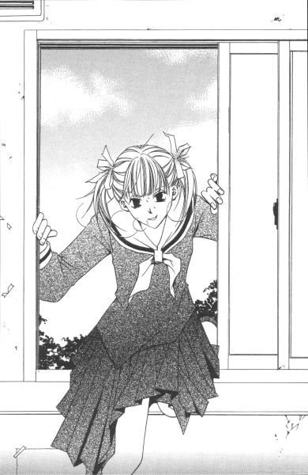
「窓よ！ 窓から入ったわ！」
外で叫ぶ声がする。
ホッとする暇もない。祐巳は入ってきた窓を閉めて、鍵をかけた。運のいいことにそこは生徒用トイレで、構造上外に通じる窓はそこしかない。追いつくには、別の場所から校舎に入って入り口に回るしか方法はなかった。
ガタガタガタガタ。
しばらく窓を揺する音が聞こえた。十五個ある個室のうち使用されているのは二つ。そのうち一つから、「何事!?」と生徒が飛び出してきた。見覚えあると思ったら、桂さん。
「祐巳さん、何やっているの」
事件じゃないってホッとした桂さんは、一旦個室に戻ってお水を流し、洗面台で手を洗いながら質問した。
「......鬼ごっこ、かな」
祐巳だって、自分がいったい何をやっているんだかよくわからない。
「宝は」
「まだ」
いつの間にか、窓の音が聞こえなくなっていた。祐巳はそっと外を覗き込む。
見える範囲に、人影はない。こんな所にぐずぐずしていたら、どこからか校舎の中に入ってきた彼女たちに捕まってしまう。
「よっこらしょ」
祐巳は鍵を開けて、再び窓によじ登った。廊下に出るより、こちらの方が安全な気がする。
「──祐巳さん？」
入ってきた現場を見ていなかった桂さんは、何が始まるのかって目を白黒させた。
「私が出たら、窓の鍵をかけてくれないかな。それからここで私と会ったこと、内緒にしておいて」
「......うん、いいけど」
鍵が閉まっていれば、再びここから外に逃げたとは思われにくいから、多少の時間稼ぎができると計算したのだけれど、今桂さんに説明している暇はない。
「じゃ、よろしく」
ひらり。
これで二度目だから、最初より素早く乗り越えられた。外の地面の方が低くて、飛び降りた拍子に打った足がじんじんして痛かったけれど。
仮措置として、祐巳は校舎から離れ、裏道の木陰に身を潜ませた。取りあえず、目立つのはまずい。
（さて、どうするか）
腕時計をみた。四時二十五分。思わぬところで、時間を無駄にしてしまった。由乃さんはどうしているだろうか。
薔薇の館まで戻る時間を引いて、正味十分。優勝者になるためには、十分の間にカードを探し出さなくてはならなかった。何ヶ所も回ってなんていられない。
一ヶ所か、多くて二ヶ所。いや、ここは集中して、一ヶ所にしぼった方がいい。
（祥子さまが隠すとしたら──）
祐巳は考えた。
人は、自分との共通項がまったくない、そんな場所に隠すだろうか。たくさんあるカードをばらまくわけではない、たった一つのカードを宝に見立てて隠すのだ。
静さまも言っていた。静さまなら、音楽室か図書館だって。
この宝探しにヒントはなかった。その人が隠したという事実だけが、ヒントなのだ。
祥子さまはクラブ活動をしていない。委員会にも入っていない。令さまや志摩子さんに比べて、行動範囲、ってそんなにない。
教室か、薔薇の館か。
でも、教室は宝探しから除外されている。薔薇の館には、志摩子さんのカードが隠してある。その上に、もう一枚祥子さまのカードを隠すだろうか。
折り畳んでポケットに潜ませてあった校内の地図を、開いてみた。校舎の裏側は、第二体育館や武道館も宝探しの範囲に入っている。令さまのカードは、武道館か。いや、そんなに単純なわけはないか。
（もし、私が隠すとしたら──）
祥子さまと同じく、祐巳も部活や委員会に所属していない。自分をモデルケースに考えるなんて図々しいけれど、今は藁をも掴みたい状況だった。
（私なら）
祥子さまに探して欲しい。無理でも、その気持ちを示したい。
二人が、共通の時間を過ごした場所。
祥子さまが祐巳のことを思いだしてくれる所。
（あそこに）
祐巳は、自分が隠す場所を見つけた。そのまま、真っ直ぐ走り出す。
あの場所以外に考えられない。もし、祥子さまが祐巳に伝えたかったとしたら──。
目の前に、古ぼけた温室が見えてきた。
５
そこに足を踏み入れると、中に先客があった。
「あ」
その人は突然入ってきた祐巳に、少しビックリしたように振り返る。祐巳と同じ制服を着ているから高等部の生徒だとわかったけれど、顔見知りではなかった。祐巳と同じように髪を二つに結んで、でも少し長さが足りないようでサイドに後れ毛が多かった。
「ごきげんよう。ごめんなさい、驚かせてしまったみたい」
「いいえ」
背が低いので、一年生かなと思った。これまた祐巳と同じ地図を脇に挟んでいるところから、宝探しの参加者と思われた。
「祐巳さん、ここにはカードを探しに？」
祐巳は知らないけれど、相手は祐巳のことを知っていた。本当、有名人になったものだ。
「ええ。あなたも？」
「祐巳さんより少し前にここに着いたのだけれど、あると思う？」
自分より先に目当ての場所に生徒がいたことで、祐巳は少なからずがっかりしたけれど、その人の様子からまだカードは発見されていないようだった。
「そうね──」
温室内を歩きながら、祐巳はここでカードを見つけた場合の所有権について思い巡らせていた。
（やっぱりジャンケンになるのかなぁ）
この人が諦め、去るのを待っていたら時間切れになってしまう。
ここで祐巳が発見したとしても、同席（？）した彼女は多少なりとも権利を主張できるのではないか。先にここにたどり着いていたのは、紛れもなく彼女なんだから。少なくとも祐巳には、その存在を無視して自分一人の物にするなんてできそうもなかった。
ジャンケン、それが一番いい方法だ。心の中の折り合いがついたところで、その場所に着いた。
「やっぱり」
思わず声をあげる。
そこは床板を外して土を盛り、花壇を作られている場所。その花壇の、薔薇が数多く植えられている辺りの様子が、明らかに昨日と違っていた。
「何、祐巳さん」
先客の彼女が、追いかけてきて尋ねる。
「たぶん、ここだと思って」
ロサ・キネンシスの傍らの土が、一ヶ所だけ黒々と変色しわずかに盛り上がっている。それは、最近掘り起こされ再び埋められた跡に違いなかった。祥子さまは、じきに自分の象徴となる紅薔薇を選んでカードを隠した。それで決まりだった。
気がつけば、祐巳はその土のかたまりに両手を突っ込んで穴掘りを始めていた。まるで犬みたいだ、と自分でも思った。
「あの、祐巳さん」
背後で、その人が何かつぶやいたかもしれない。しかし祐巳は必死で、それどころではなかった。素手だから、水分を程良く含んだ土が、爪の間に入り込んで気持ち悪かったけれど、そんなこと構っていたらお宝探しなんかできやしないのだ。
「よかったら手伝ってくださらない？ 見つかったら、二人で申請にいきましょう」
こうなったら、時間との戦いだ。ほんの少しでいいから、労働力を提供して欲しい。
すると、肩口から「よかったら」とシャベルが差し出された。
「でも、きっとそこにはないと思うの」
手渡しながら、その人は言った。
「え？」
一瞬、耳を疑う。今、「そこにはない」と言ったろうか。
どうしてそんなことわかるの、と祐巳は目で尋ねていたのだと思う。彼女は少し困ったような、申し訳なさそうな表情で答えた。
「だってそこ掘り返したの、私なんだもの」
「えーっ!?」
「言うのが遅くなってごめんなさい。実は私、祐巳さんが来る前にそこを掘ってみたのよ」
「そんな......」
だが祐巳は、認めざるを得なかった。彼女がシャベルをすぐに持ち出せたのは、今さっき使用したから、そう考えれば妙な説得力がある。
それじゃ、土を掘り起こされた跡が生々しかったのは道理だ。三十分と経っていないのだから。
すごく自信があったのに、どうやら空振りだったようだ。考えてみたら、紙のカードを土に埋めるなんてアイディア、少々無謀だったかもしれない。
「ねえ。祐巳さんは、どうしてここだと思ったの？」
「どうして、って？」
「温室に入るなり、この場所に直行したじゃない。何か根拠があったんじゃないかしら、って思えたから」
「ああ、それは」
祐巳は、目の前に緑の葉を茂らせているその薔薇の名前を告げた。
ロサ・キネンシス。──祥子さまに一番相応しい花の名前。
「......そうだったの」
その人は、大きく感心したようにうなずいた。
「じゃあ、あなたはどうして掘ったの？」
祐巳にしては、よく頭が回転した方である。祐巳のように、薔薇から推理したのでなければ、何故そこを選んで掘ったのか、と。
「それは......。土の色がそこだけ違っていたから、何かあるかも、って」
「本当!?」
それを聞いた祐巳は、シャベルを手にして再びその土を掘り始めた。もしかしたら、ビンゴだったかもしれない。掘って何もなかったから再び戻したということだけれど、その深さがポイントで、もしかしたら軽く掘ったその下に、カードが眠っているという可能性だって捨てきれない。
だが、それは見つからなかった。二十センチほど掘って、やっと祐巳は諦めた。
時計を見れば、長針が七と八の中間あたりまで来ている。もう、絶望的だった。
後れ毛の印象的なその生徒は、黙って土を戻す手伝いをしてくれた。結局、二人は宝を見つけられなかったという意味では、同じ立場に立っていた。
水道で手を洗って、一緒に温室を出た所で、ゲーム終了という放送が流れた。参加者は中庭に集合ということだったので、祐巳はそちらに向かおうとしたけれど、なぜかその人は動かなかった。
「結果は、知らなくていいわ」
「え......？」
「カードは私の物にならない、って。それだけは間違いないことだもの」
祥子さまのカードは、もう誰かの手に渡っているかもしれないし、渡っていないかもしれない。でも、どちらにしても自分の物にならないという事実は変わらない。それが確定した段階で、この人にとってはもうゲームセットなのかもしれない。
祥子さまがどこに隠したかとか、誰が祥子さまのカードを探し出したか、とか。そういうことまで気になる、祐巳みたいな生徒が大半だとは思うけれど。
「祐巳さん、どうぞ行ってらっしゃい」
外を探していた生徒たちが、今までどこに潜んでいたのかという感じで、ぽろぽろ現れ校舎を目指し始めている。
「じゃ、ここで」
軽く頭を下げて、祐巳も歩きはじめた。
「ごきげんよう」
結局、名前はわからなかった。聞けばよかったかもしれないけれど、タイミングってものがある。相手がこちらを知っていただけに、何か申し訳ない。静さまの前例もあるから、下手な聞き方できないし。
同じ学校にいるんだから、いつか、どこかで会えるかもしれない。その時は、ちゃんとわかるように、その人の顔を懸命に心に焼きつけた。
しかし。名前を伴わない人物を記憶に留めるという行為は、かなり難しいことだとわかった。
二十歩あるいたところで、早くもその人の印象はおぼろげになっていた。
６
「あ、由乃さん？」
途中、見覚えある後ろ姿を見つけて声をかける。振り返った顔を見て、一瞬後悔したけれど、名前を呼んでしまったことを取り消すわけにはいかない。
「何」
不機嫌です、って顔に書いてある。聞かずとも、宝探しが不首尾に終わったことはわかった。
「祐巳さんは」
「ブブー」
歩きながら祐巳は口で不正解音を出して、手で顔の前に×点マークを作った。少し、由乃さんの顔がほころぶ。つぼみの妹という同じ立場だから、目的のカードは違うけれどお互い意識し合っていたことは確かだった。
「でも、私たちが探せなかったわけだから。全員失格かもしれないわよ」
由乃さんに、次第にいつもの強気が復活してきた。
「そうかなぁ」
でも──。祐巳は考えていた。
先客だったあの人は、掘る前に土の色が違っていたと言っていたのだ。だとすると、やはり祥子さまが隠したのはあの場所で、あの人が来る前に、すでに誰かによって掘り起こされていたのかもしれない。いや、その可能性の方が大だった。
すぐ側の非常口が開いていたので、業務用足拭きマットで上履きを拭ってから校舎に入る。
「由乃さんは、どこ探したの？」
「令ちゃんファン振り切って、まずは図書館」
「図書館？」
「図書館で、編み物の本と料理の本片っ端から開いたわよ」
なるほど。令さまの趣味から攻めたわけだ。宝が薄い紙である以上、本の間というのは絶好の隠し場所である。
でもそのうち、貸し出し可能な本というのは、宝の隠し場所には不適当と気がついて、頭の中を百八十度方向転換したということだ。隠してからスタートまでの時間に誰かに借りられちゃ、見つからないしね。
「で、次は武道館」
「今度はかなりストレートだね」
「宝を隠す令ちゃんがストレートじゃない？ 私としては、それでも裏の裏をかいたつもりだったんだけど、結果的に表の人と同じになっちゃった。......だから、みんな来ていたわよ、武道館。お陰で畳はがす人手に不自由しなかったわ」
土を掘った自分も思いきったけれど、畳の下までチェックした由乃さんもすごい。──祐巳は上には上がいるな、と思った。地図から除外されていたからよかったけれど、そうでなかったらマリア様の庭の池に入る生徒まで出たかもしれない。
校舎を突っ切って中庭に出ると、もうすでに参加者が集まっていて、薔薇の館から数人の生徒が出てきたところだった。新聞部員やつぼみ、あと館に入り浸っていた（失礼）らしき、つぼみファンの生徒たちだ。
「あーあー。皆さん、お疲れさまでした」
さすがに声を張り上げるのが疲れたのか、三奈子さまはどこからか調達したらしいハンドスピーカーを手に挨拶を始めた。ざわめきが消え、一同聞く態勢に入っている。スタートの時より、集まった人数は若干少ない気がした。やはり結果発表なんか聞きたくないという人や、途中棄権者なんかもいるのかもしれない。中庭に向かって移動中の生徒や、放送が聞こえないくらい夢中で時間切れに気づいていない人もいたりして。
「さっそくですが、時間も遅くなって参りましたので結果発表にまいります。まず、宝として隠したつぼみのカードは、二枚発見されました」
「わー」という歓声と、「えー」という落胆の声が混じって聞こえた。祐巳はどちらかというと「あーあ」。で、由乃さんは「おーし」と拳を振り上げた。
二枚発見されたということは、一枚は無効というわけだ。だから由乃さんは「勝った」と思ったらしい。由乃さんの場合、手書きカードやデート券が欲しくて宝探しに参加したわけじゃない。そんな物、令さまに頼めばいくらでも手に入る。ただ、誰かの手にそれが渡るのを阻止したかっただけなのだ。
由乃さんの読みは、たぶん当たっている。
志摩子さんのカードは白薔薇さまが見つけているはずだし、祥子さまのカードはどこのどなたか存じませんが発掘し終えているはずだから。
「お名前を呼ばれた方は、前に出てきてください」
いつまで待ってもザワザワが収まらないから、お気の毒に、三奈子さまスピーカーなのに声を張り上げなければならなかった。しかし、いざ発表ということで、しんと一瞬のうちに水を打ったように静かになる。
「まず、白いカードを見つけた方ですが──」
三奈子さまの言葉に被って、「祐巳ちゃん、さっきはサンキュー」と白薔薇さまが現れた。
「あれ」
今から前に出ていかなくてはならない人が、こんなにふらふらして──、と注意しようとした時に白薔薇さま以外の人の名がスピーカーを通して聞こえてきた。
「二年藤組、蟹名静さん」
（──え!?）
同時に、「え────!?っ」という、今度は一種類の驚きの声が怒濤のように中庭に轟いた。
まさか、っていう意味の「え────っ!?」なのだ。だって、静さまと志摩子さんがどういう関係にあったかをみんなは十分よく知っているから。
つぼみたちに対抗して、生徒会役員選挙に立候補し敗れた静さま。まさかその人が志摩子さんのファンだったなんて、ってみんなどよめいている。実際、そういうわけじゃないってわかっている祐巳でさえ、ビックリ仰天した。宝探しに参加していたなんて、そのことさえ知らなかったから。
ざわめきをＢＧＭに、静さまはさっそうと歩いて前に進み出た。
（......ということは、間違いでもなんでもなくて。本当に静さまが探し当てたんだ）
さすが、静さま。読めない行動してくれる。
「ほー」
白薔薇さまが口笛を吹いた。
「静がねぇ」
静がねぇ、じゃない。どうしてヒントを教えてあげたのに探せなかったんだ、ってにらみつけた。でも、白薔薇さまには全然通じなくて、「何怖い顔しているの」って首を傾げるのだ。
前の方では、静さまへの優勝インタビューがすでに始まっていた。
おめでとうございます。ありがとうございます。どんなお気持ちですか。自分でも驚いています。──そんなイントロの後、インタビューは核心部分に触れられた。
「ところで、 白薔薇のつぼみのカードはどちらで見つけられましたか？」
一つのスピーカーを変わりばんこに使うから、ちょっとモタモタした。祐巳は、「薔薇の館の一階です」という答えが聞こえてくるであろうことを、疑わなかった。
しかし。
「委員会ボードです」
思わず、横にぶっ飛びそうになった。そんな馬鹿な、って。
だって、志摩子さんはあの時、絶対何か秘密の行動をしていた。宝を隠していたんじゃなかったら、いったい何をしていたの、って聞きたくなる。それとも祐巳に感づかれたと思って、急遽場所を変更したとか。
「 白薔薇のつぼみ、委員会ボードで間違いありませんか」
その志摩子さんに、三奈子さまがスピーカー持って確認しにいった。すると志摩子さんは。
「はい、私が隠した場所は委員会ボードです」
聞き違いができないくらい、はっきりと答えたのだ。
何と、志摩子さん。大胆にも委員会ボードっていう、各委員会からのお知らせを掲示するための畳一畳分ほどのコルクボードにそれを貼りだしていたのだ。それも、『環境整備委員会だより』の上から。いかに委員会からのお知らせが生徒に読まれていないか、という皮肉が込められているのかもしれない。でも、これは志摩子さんのカードが白だったからできた芸当と言えるだろう。
「じゃあ、白薔薇さまは何でさっき『サンキュー』って......」
せっかく質問しかけたのに、由乃さんの「ぎゃー！」という叫び声に吹き飛んでしまった。
何事、と聞くまでもない。今、名前を呼ばれたと思しき数人の一年生の生徒が、ぞろぞろと前に出てきたところだった。先頭の生徒の手には、誇らしげに黄色いカードが握られていた。
「見つかったもう一枚って、令さまのカードだったんだ」
「う......」
叫んだ後の由乃さんの落胆ぶりといったら、気の毒で見ていられなかった。泣くまではいかないけれど、ガックリ肩を落としてうなだれ、前を見ないようにしている。
そんなことはお構いなしで、前方では令さまが見守る中、三奈子さまのかけ声で規定通りジャンケン大会が行われていた。
由乃さんが落ち込むのも無理はない。その集団は、由乃さんが振りきったはずの一団だった。その上、令さまのカードが出てきた場所は、由乃さんが最初に立ち寄った図書館。
実は令さま、江戸の物価なんかが書かれている禁帯出本の間にカードを隠していた。たぶん令さまファンの集団は、まかれたと見せかけて図書館に入っていく由乃さんをそっとつけたのだ。そしてなぜか料理や手芸といった実用書に直行する由乃さんに首を傾げながら、そこからは自力で推理し、その本を探し当てたのだ。『リリアンかわら版』に書かれていた情報を信じていた彼女たちは、令さまの読書趣味を誤って認識していた。皮肉にも、あまりに令さまのことを知りすぎている由乃さんが敗れてしまったのだ。
ジャンケンに勝った生徒が、うれしそうにインタビューに答えている。でも本当の勝利者は、由乃さんかもしれない、と祐巳は思っていた。
ストレートな性格と思われがちの令さまが、みんなの裏をかいて、ひねった隠し場所を選択したように見えるけれど、そうじゃなくて。やっぱり令さまはストレートで、由乃さんに見つけて欲しい一心でその場所を選んだんじゃないだろうか、って。だとしたら、ゲームの前から勝負はついている。
考えすぎだって言われれば、それまでなんだけど。でも祐巳は、その本を由乃さんが閲覧しているところを目撃したことがあったのだ。令さまは、気持ちがあまりにストレートだから、由乃さんの愛読書に挟んでしまった。そっちが、真相ではないだろうか。
「というわけで、 紅薔薇のつぼみのカードだけ探し出されることはありませんでした」
三奈子さまの言葉に、祐巳はハッと我に返った。
そうだった。令さまのカードが見つかった以上、まだ出てきていないカードの色は紅。祥子さまのカードが、誰も見つけられなかったということだ。
複雑な気持ちがした。誰の手にも渡らなかった喜びと、自分が捜し出せなかった悔しさ。でも由乃さんの口惜しさを考えると、素直に喜ばなきゃいけないかもしれない。
「規定通り、これから回収を行いご本人に返還いたします。その模様は、来週発行の『リリアンかわら版』をご覧ください。宝探し大会の特集号です。写真部の協力で、探索中の皆さんの姿もばっちり隠し撮りされていますから、こうご期待。『リリアンかわら版』に載った写真に写っている人全員に、その写真をプリントして差し上げます」
三奈子さま、あおるあおる。その横で、写真部のエース武嶋蔦子さんがカメラを構えてポーズした。
最後はつぼみたちが最後までその場に残った参加者全員に、銀紙に包まれた一口サイズのチョコレートを一つずつ配ってお開きになった。参加賞、ってわけだ。バレンタインデーにチョコを渡すことが大嫌いな祥子さまも、どうやらこればっかりは逆らえなかったらしい。不本意とはいえ、たくさんの人々に自ら手渡さなければいけないという皮肉な結果となってしまった。
祐巳は、祥子さまの列に並んで、チョコレートをもらった。
せっかく祥子さまの手から受け取ったチョコだったけれど、無性にお腹が空いていたので、すぐに口に放り込んでしまった。
７
当然のことだけど。
祥子さまのカードはいずこに隠されていたのか、それが明かされずには帰れないとごねる生徒たちがチョコレートをもらった後も中庭に居座っている。
約十人というところだろうか。その中には、祐巳に引っ付いて追いかけっこした人も混じっていた。祥子さまファンで、強気で、負けず嫌いなんだから、当たり前か。
彼女たちは、三奈子さまが『リリアンかわら版』で発表するからと三度説得しても聞き入れず、最後に残った面々であった。
「関係者諸々入れても二十人は越えないか。......いい数かもしれないわね」
ぼそぼそと独り言をいってから、三奈子さまはその十人に向かって声をひそめて告げた。
「いいわ。今から、 紅薔薇のつぼみのカードを回収しにいきましょう。その代わり、あなた方は『リリアンかわら版』の読者レポーターという形で、祥子さんの宝が確かにそこにあったという証人になっていただきますけれど。それでもよろしい？」
もちろん、と十人全員がうなずいた。「今から」と、「証人」という言葉は、祐巳をもしびれさせる響きだった。
よくよく考えると、彼女たちは三奈子さまの策略に引っかかったのではないだろうか。関係者だけで回収しにいったら、最初から隠してなかったのではないか、と疑われる可能性がある。ここは是非とも第三者の証人が必要だった。
三奈子さまにしてみれば、本当は希望者全員でもよかったのかもしれない。だけどそれではあまりに人数が多すぎて、身動きとれなくなってしまうから。だから、祥子さまファンをふるいにかけたのだ。「答えは『リリアンかわら版』で」とまず発表して、諦めのいい生徒には早々にお帰り願う、と。
「祐巳さんも行くでしょ？」
声をかけてもらったので、祐巳は喜んで「はい」と返事をして残った生徒の中に混じった。他のつぼみやその姉妹たちは、一緒に来なかった。後で『リリアンかわら版』をチェックすれば事足りる程度の興味、なのだろう。その気持ち、自分に置き換えてみればわかる。
「じゃ、出発します」
旗こそないけど、まるで観光バスのガイドさんみたい。三奈子さまは張り切ってその一団を先導する。三奈子さんの後ろには祥子さま。祐巳は少しだけ遠慮して、最後尾についた。
祥子さまはいったいどこに隠したのか。
わくわくしながら、祐巳は校舎の廊下を歩いた。
「祥子さま、いつ隠しにいかれたのですか？」
前方を行く一年生が、祥子さまに尋ねた。聞き逃してなるものか、と祐巳も耳をそばだてる。
「今朝早くよ。休み時間だと、誰かに見られているかもしれないでしょう？」
祥子さまは、いつもより早く登校して自らカードを隠しにいったらしい。もちろん、事前に新聞部と打ち合わせをして、「いつ、どこに」隠すかは決めたということだった。
「それにしてもがっかりね。私のカードだけ、誰も見つけてくれなかったなんて」
祥子さまはファンの少女たちに、いったいどの辺を探していたのかなんて、逆に質問していた。その答えを聞いているうちに、一行は校舎の裏手に出た。
（え......？）
何だか変な気分。なぜって、祐巳がさっき往復してきたばかりの道をたどり始めたから。その先には、半分廃屋と化したあの温室がある。
わくわくが、どきどきに変化する。ゆっくり歩いているだけなのに、動悸が激しくなっていった。
（まさか。......でも、......えっ）
あれよあれよ、というのはこういう感覚を言うのであろうか。一人で焦っている間に、とうとうその場所の前まで来てしまった。
最後尾を付録のように付いてきたから、祐巳には今この驚きを伝えたり意見を聞いたりできる相手がいなかった。
「ここに隠したのよ」
祥子さまは向き直って言った。
「温室......！」
祐巳の前にいた十人のうち半分が、持っていた地図をガサガサと開いた。たぶん、そこをエリアとして認識していなかった生徒が大半だったのだろう。しかしその温室は、地図の端の目立たない位置ではあるがちゃんと載っていた。侵入不可の印である、斜線は引かれてはいない。
「入りましょうか」
開いた扉を押さえて、祥子さまはファンたちが中に入るのを待った。全員が入ったのを確認してから、その場所を示そうという気遣いかもしれない。
「あの、......お姉さま」
最後の一人である祐巳は、すれ違う時ためらいながら声をかけた。
「どうしたの。顔色が悪いわよ」
他人からは、祐巳は身体の具合でも悪いように見えるらしい。
「私、来ました。ここに、今日。でも、見つけられなかった......」
「どこを探したの」
「ロサ・キネンシスの根元近くの土の中です」
すると、こんどは祥子さまの顔色が変わった。
「まさか──」
祥子さまは祐巳の手首を掴むと、すごい勢いで三奈子さまとファン十人を追い越してロサ・キネンシスが植えてある前までやってきた。みんなは、ギョッとして見ている。
「あなたが探した場所って、ここのこと？」
「は、はい」
祐巳が掘り起こして再び埋めた場所には、夢でも何でもない証拠に黒々とした土が空気を吸って盛り上がっていた。
「何があったの」
追いついた三奈子さまに、祥子さまは「実は......」と小声で何やら告げた。
「祐巳さん、本当？」
と、聞かれても。何せ、祥子さまが何を言ったのかよく聞こえなかったんだから。
本当にここを掘ったのか、って改めて聞かれて、祐巳は大きくうなずいた。
「でも何もなかったです、けど」
「そんなはずないわ。だって私、ここに埋めたのよ」
祥子さまが、ヒステリー一歩手前の迫力で叫んだ。
「祐巳の掘りが甘かったんじゃないの？」
「私、これくらいは掘りました。でも、なかったんです」
祐巳は「これくらい」と言って、両手を約二十センチ離して見せた。
「どうせ見逃したんでしょ」
カチン。
「仮に私が見逃したのだとしても、それほど深く埋めるお姉さまにも責任があると思います」
「あなた何言っているの？ 見つけられるのが目的で隠すのに、そんなに深く埋める馬鹿はいないわ。せいぜいこれくらいよ」
今度は祥子さまが、両手で祐巳の半分の長さを示した。
「じゃあ、どうして私はそんなに浅い場所のカードを見つけられなかったんですか！」
いつの間にか、祐巳もムキになってしまった。だって、こっちは本当のこと言っているのに、祥子さまが信じてくれないから。
その時、背中をちょんちょんと突っつかれハッと我に返った。
「姉妹げんかは後でゆっくりお願いしたいんだけど」
三奈子さまが苦笑していた。祥子さまファンは、口をあんぐり開けて祥子さまと祐巳を見ていた。説明なしで、二人が言い合いを始めちゃったんだから致し方ない。しかも、祥子さまの一面を強制的に見せられるというおまけつき。初心者には、相当ショックかもしれない。祐巳も初めはそうだった。
「掘ってみれば、どっちの言い分が正しいかわかるんじゃない？」
三奈子さまが的確なアドバイスをくれた。祥子さまも祐巳も、頭に血が上っていたから、そんな簡単なことにも気がつけないでいた。
祐巳は、さっき使って戻したばかりのシャベルを持ってきて、三奈子さまに手渡した。公正な判断をするため、ということで第三者が掘ることにしたのだ。
「掘るって、ここを掘るんですか？」
「え？ 本当に？」
三奈子さまの手にしたシャベルが最初の土をかいたあたりから、温室内はざわざわとし始めた。
「さっき埋めた、って聞こえたけれど。まさか土の中にカードを？」
わけも分からず動向を見守っていた祥子さまファンたちだが、ここにきてやっと状況がわかってきたらしい。
「でも、どうしてそんな場所に？ ......あ！」
例の、眉の印象的な少女が小さく叫んだ。どこにでも、勘のいい人というのはいる。
「まさか、この木がロサ・キネンシスじゃ──」
「ええ」
祥子さまが花のようにほほえんだその時、三奈子さまが「あったわ」と声をあげた。
祐巳も祥子さまも、祥子さまを囲んでいたみんなも、一斉にその場所を覗き込んだ。
「──そんな」
つぶやいたのは祐巳だった。
信じられなかった。シャベルで土を退けた跡に、透明のビニール密閉袋が顔を現している。透けて見える中身は、紛れもなく紅いカード。
「でも、さっきは間違いなく」
言えば言うほど、敗者の言い訳にしか聞こえないだろうとはわかっていたけれど。祐巳は言わずにはいられなかった。
自分の信じているあの記憶が間違いだったなんて、どう考えても納得できない。
「祐巳さん、残念」
三奈子さまが同情の眼差しを向ける。うわっ。そういうの、かえって嫌。笑ってもらった方が、まだましだ。
「嘘じゃないんです。そうだ。証人もいます」
「証人？」
「たぶん一年生だろうけれど、背が低くて、私みたいに髪を二つに結んでいて、後れ毛が頬にかかっている人も......。その、一緒にいたから」
「それだけじゃ、ねえ」
祐巳とは別のクラスの人たちも、首を傾げる。名前聞いておけばよかった、と思っても後の祭りだった。
「本当にいたの？ その人」
「祐巳さん、夢見ていたんじゃない？」
そう言われると、だんだん不安になる。あの生徒は誰だったのだろう。本当に実在の人物だったのだろうか。
でも、この手が覚えている。冷たい土の感触。あれは、絶対夢でも幻でもない。
「本当です。信じて」
駄々っ子みたいに叫ぶと、後ろから肩にそっと触れられた。
「信じているわ」
ゆっくり振り向く。いや、その前からわかっていた。その手の重量感と聞き覚えのある声。
「お姉さま......」
「あなたがそこまで言うんですもの。さっきは本当になかったのでしょう」
この上もないほどやさしい顔で、祥子さまはうなずいた。だから祐巳は、もうそれで反論する気持ちも収まってしまった。
信じてもらいたかったのは、たった一人だったから。祥子さまにさえ信じてもらえたら、それでいいのだ。
「きゃっ！」
薄暗い温室の中で、突然フラッシュが焚かれた。
「失礼。驚かせてしまったかしら」
いつの間に混じっていたのか、蔦子さんが祥子さまファンの間に立っていた。
「でも、すごくいい場面だったから」
そして、「ちょっとごめんなさい」って前に出てくると、三奈子さまをも追い出して穴のよく見える位置まで進み出た。
「証拠写真、撮っておきましょ」
パシャパシャ、といろんな角度からシャッターを切る。満足すると、今度は振り返ってギャラリーの姿を写したりする。新聞に載せるいい写真を撮ってもらえるかも、と期待する三奈子さまは、好き勝手に写真を撮りまくる写真部のエースに文句も言えない。
「ん？」
立ち去ろうとした蔦子さんが、首を傾げた。
「祐巳さん、生徒手帳貸して」
「え？」
「いいから早く。二ついるんだって」
蔦子さんは自分のと提出させた祐巳の生徒手帳を持って、再び穴の所までやってきた。
「何する気？」
今度は三奈子さまも口を挟む。
「この生徒手帳。長い方の辺が約十センチなんですよ。だから私、大きさがわかりにくい物体の写真を撮る場合、目安として生徒手帳を脇に置くことがあるんです」
よくある、たばこの箱みたいなものだろうか。
「でね。本題ですけど、この穴の深さ」
言いながら蔦子さんは、自分の生徒手帳を穴の中に立てた。穴の脇の固くなっている地面が元の高さだが、手帳の頭はそこには全然届かない。
「で、もう一つ」
今度は祐巳の手帳を、蔦子さんの手帳の上に連結した。すると、天辺がわずかに地上に顔を出した。
「十七センチか十八センチというところですね。今度は祥子さまの証言と違います。もちろん、訂正されませんよね」
「ええ。私はそんなに深く掘った覚えはありませんから」
祥子さまはほほえんだ。そうか、むやみに否定しないで、そういう風に笑えばいいんだ。
「じゃあ、いったいどういうこと」
祥子さまが埋めたカード。祐巳が掘った時には消えていた。そして再び現れた時には、祥子さまが埋めた場所より深い位置にあった。
まるで、誰にも見つけられないように。カードが自分で一時身を隠していた、そんな風にさえ思わせる不思議な出来事。
「さあ」
祥子さまは笑った。
「聖ウァレンティーヌスが、悪戯なさった──」
祥子さまは密閉ビニールを引き上げて、三奈子さまに手渡した。
「無理に真相を探るより、そういうことにしておいた方がいいんじゃなくて？」
その言葉に、その場は神様が降りてきたみたいにしんと静まり返った。
それがいい。
祐巳も思った。今日は素敵なバレンタインデーだから。
奇跡が起こっても何も不思議はないんだ、って。
寒いと思って外を見ると、いつからか天から白い物が落ちてきていた。
８
「約束では温室で待ち合わせだったけれど。今、話をしていく？」
最後に温室を出ようという時に、祥子さまが祐巳に尋ねた。
「いいえ！」
祐巳は力強く首を横に振った。だって、今はチョコレート持ってきていない。バレンタインデーにチョコレートを渡すのが目的であるのに、手ぶらじゃまったく意味がない。
「そう。じゃ、一旦薔薇の館に戻りましょうか。日も暮れたし、雪も降ってきたし」
祐巳がどういう行動を起こすつもりでいるか、予想もしていないんだろう。祥子さまはそっけなく言った後、スタスタと先を歩いていく。
振り向きもしない祥子さまを、祐巳は追った。
暗い裏道。
いつまで経っても縮まない距離が、まるで夢の中を歩いているような錯覚に陥らせた。
９
校舎に入ると、生徒たちは自分の教室に荷物を取りに戻るために一人抜け二人抜けして、結局最後に残ったのは三奈子さまと祥子さま、そして祐巳だけだった。
本当は祐巳も鞄やらコートやら肝心のチョコレートやら取りに帰らなければならなかったけれど、つい祥子さまの姿を追ってここまで来てしまった。
「あの、すぐ戻りますから。館で待っていていただけますか。ほんと、すぐですから」
「いいわよ。急がないで」
祥子さまの許可が出たところで、教室に直行。放課後の校舎って寂しいけれど、まだ宝探しの余韻で所々教室に電気が灯っているから平気だった。
一年桃組も明るかった。
蔦子さんかな、と思って中に入ったら、いたのは志摩子さんだった。個人ロッカーを開けて、ごそごそ何かをしている。
「あれ？ 志摩子さんまだいたの」
「あ、ゆ、祐巳さん!?」
後ろを向いていたから、祐巳が入ってきたことに気づかなかったらしい。驚いて振り返ると、背筋を伸ばしてしばし硬直してしまった。
「ごめん。ビックリさせちゃったね」
「......本当。祐巳さんには、今朝も驚かさせてもらったわ。──そうよ、今朝」
志摩子さんは祐巳に走り寄って、「もしかして、知らない？」とすがりついた。
「な、何を？」
「ピンクの──。いいえ」
言いかけて、思い直したように黙った。
「祐巳さんが知っているわけはないわね。ごめんなさい」
「だから、何が」
「いいの」
ロッカーの扉を閉めに戻る後ろ姿が、ずいぶんと気落ちしていた。
「何か捜し物？」
「ええ......そうなのだけれど」
要領を得ない。それから自分の机の中見て、机の横の何もかかっていないフック見て、ため息をついた。
「志摩子さん、鞄は？ 薔薇の館？」
「......薔薇の館。そう、薔薇の館しかないわ。きっとそこにある」
自分で持っていったんだろうに、志摩子さんずいぶん大げさに鞄の置き場所を断言した。
「宝探し、結構盛り上がってよかったね」
「......そうね」
「祥子さまのカード、抽選でプレゼントするんだって。もちろん、デート券はなしでね。私も応募しようかな」
「ああ、そうだったの」
「それにしても、静さまにはビックリだったね」
「え？ ......ええ。ビックリね」
そこで祐巳は、志摩子さんとの会話を断念した。教室を出てからいろいろ話題を振ってみたけれど、全然耳に入っていない模様。
それどころか、「迂闊だったわ」なんて独り言いっているし。返ってくるのは柳の枝のような相づちだけだとわかっていたけれど、あえて祐巳は聞いてみた。「何が迂闊だったの」と。すると、予想外にもちゃんとした返事がかえってきた。
「あそこが、宝探しのエリアに含まれていたなんて思わなかったの」
「あそこ、って？」
「一階の物置。どうしてかしら、除外されているはずだって思い込んでいたのよ。だから私──」
答えてくれたはいいけれど、残念ながら何を言っているのかは不明。それでも、限られた情報だけ集めて推理するに。
「つまり、志摩子さんはあの部屋に置いたはずの何かを探しているわけ？それがないから、パニック起こしているの？」
「そうなの」
「うーん」
それで、教室探しに来たんだ、きっと。もしかして自分の記憶違いかも、って。あるはずの物がなかったり、ないはずの物があったり。今日は何だか不思議な日だ。本当に、ウァレンティーヌスの悪戯かもしれない。
「でも、宝探しで部屋を物色した人がいたとしても。他人の物は盗らないでしょ」
「ええ。そう思いたいのだけれど」
名前が書いてあるわけではないからとか、誤解されそうな外観だとか。志摩子さんはまたしてもクイズ番組のヒントみたいなことを口走り始めた。すでに、薔薇の館の前まで来ていた。
「わーお。祐巳ちゃん」
扉を開けた瞬間、白薔薇さまが待ってましたって感じで、祐巳に飛びついたきた。
「ちょ、ちょっと待ってくださいよ」
全然わかっていないんだから。
志摩子さんが見ている所で抱きつくなんて、信じられない。いや、志摩子さんが見ていなければ何してもいい、というわけではないけれど。
「さっきは大勢いたから控えたけど、祐巳ちゃんにチョコレートのお礼を言いたくて待っていたんだよん」
「チョコレート？」
志摩子さんが、首を傾げた。
「祐巳さん、お姉さまにチョコレートをくださったの？」
「え？ ううん」
いくら何でも、今日はそんな余裕はなかった。祥子さまにだってこれから渡そうっていうのに、どうして白薔薇さまにチョコレートを届けるところまで頭が回るというのだろう。
「またまた、すっとぼけて。静からはさっき直にもらったから、そうなるとやっぱり犯人は祐巳ちゃんだよね」
これは新手の催促かな、って思った。まったく、白薔薇さまったら、そうまでしてチョコを回収したいかな。
「はい」
祐巳は手提げから一つ箱を取り出して、白薔薇さまに渡した。
催促されたら、あげないわけにはいかないですもん。
すっごいまずいトリュフチョコが十個入った、ブラウンの箱だけど。静さまからのチョコレートもらって喜んでいるんだから、構うことはない。まずいけれど、別に毒を入れたわけじゃないから、お腹こわすことはないだろう。
「志摩子さん。これは義理チョコで深い意味はないからね」
「え......ええ」
うなずきながら、志摩子さんはちょっと複雑な表情をしていた。でもって、チョコの箱を手渡された白薔薇さまというと──。
志摩子さん以上に変な顔をしているのだ。
「......ってことは、祐巳ちゃんじゃなかったんだ」
「はあっ？」
「どうしよう。食べちゃった。だって、絶対祐巳ちゃんからだと思ったもん」
今度は白薔薇さまが意味不明なことを言いだした。
「祐巳ちゃん、目で合図していたからてっきり。でもどう考えても、私宛てにしか見えなかったけどなぁ」
そこで、祐巳はピンときた。たぶん志摩子さんも気づいていた。だけど、うつむいて何も言わなかった。だから、祐巳が代わりに質問した。
「それ、もしかしてピンクの包装紙に包まれていませんでした？」
「包装紙じゃなくてピンクの紙袋だった、けど。ピンクの地に、白い薔薇の模様」
白薔薇模様だから自分宛て、と。その考え方は改めた方がいいと思う。世の中には、薔薇の模様の包装紙なんて山ほどあるから。幸いにも、「真犯人」の意図は白薔薇さまと同じだったから大事件にならなかったけれど。
「おいしかったですか」
「うん。初心者らしくて、少々形は歪だったけど。すごくおいしいマーブルケーキだった。あれ、どうして？」
やっぱり犯人は祐巳ちゃんじゃないの、と言う白薔薇さまの手から、祐巳はさっきあげたチョコレートの箱を取り上げた。
「あっ、どうして」
「すごくおいしいケーキを食べた後、こんなチョコレート食べたら口が曲がっちゃいますから」
それから、赤面してうつむきっぱなしの志摩子さんに「よかったね」と言い残して、祐巳はその場を退散した。階段をリズミカルに上っていく。
たぶん、推理は間違っていない。すごくおいしいマーブルケーキこそ、志摩子さんの探し物に違いなかった。
階段を、リズミカルに上っていく。
二階には祥子さまが待っている。
10
「お待たせしました......っ」
二階の部屋に入ると、祥子さまは一人テーブルで文庫本を読んでいた。
「ああ、祐巳」
顔を上げて、小さく笑う。ああ、何て素敵な笑顔なんだろう、と祐巳は思う。できることならば、時間を止めてずっと眺めていたい。そんな、大好きな顔だった。
「何か、話があると言っていたかしら」
祥子さまは、本を閉じて椅子を立った。祐巳はあわてて歩み寄る。二人は、テーブルを挟んで向かい合う形になった。
「はい、あのっ。受け取っていただきたい物が......」
言いながら、祐巳は手提げ袋の中に手を入れて中身を探った。
「何かしら。まさかロザリオじゃないでしょうね」
「ロ、ロザリオ!?」
「違うみたいね。よかったわ」
祐巳の動揺に、祥子さまはうつむいて小さく笑った。どうやら、鎌をかけただけらしい。そんなところ、少し薔薇さまたちに似てきた。
でも、できればそういう心臓に悪いこと、あまり言わないでもらいたい。こちらはただでさえ、お姉さまとの真剣勝負を控えて、心臓バクバクいっているんだから。
「考えてみると、そんな些細なことでロザリオを返すような人だったら、私が妹に選ぶはずがないものね」
そうつぶやいて、祥子さまは真っ直ぐな長い髪を肩に掛けた。
「はぁ」
ちくり。
こちらの心の奥の痛いところを突っつくような皮肉は、まさに紅薔薇さまの十八番。事実「そんな些細な」と祥子さまが軽く言い表したことについて、祐巳はかなり大げさに思い悩んでいた気がする。ロザリオを自分から返すなんて考えもしなかったけれど、「返して」と言われたらどうしよう、と思った。だって、自分はお姉さまの望んでいる妹像とはかなりかけ離れているように思われたから。
「私が一年生だった時、今の紅薔薇さまにはすべて見透かされているみたいだったのよ」
それこそ、神様みたいに。──祥子さまは、一年前の空気を探して部屋に視線を漂わせた。
「それなのに。私にはあなたが考えていること、よくわからないのよ。だから、自信がなくなっていたのね。きっと」
言いながら、祥子さまは自分の気持ちを整理しているようだった。
「昨日、きつく言い過ぎたかもしれないけれど」
「いえ」
とは答えたものの、確かに少しきつかったかなぁ、と祐巳は思った。祥子さまは元々の顔の作りやよく通る声なんかが災い（？）して、ちょっとしたことでもかなりの迫力を生み出すことがままある。
「あれは、あなたが私を避けているみたいで、少し焦っていたのよ。でも、きっと私の誤解だったのよね？」
「はい。あの、それは──」
今だ、と、祐巳は手提げの中から箱を取り出して突きだした。
「これは？」
「チョコレートです。令さまからアドバイスもらって作ってみました。お姉さまに内緒にしたかったから、こそこそしてしまったんです。だから、お姉さまが避けられていると感じるのは当然なんです。私って段取りとか仕切りとか苦手なくせして、一人で舞い上がって突っ走って。お姉さまがどう思うかなんて、考える余裕なくて。お姉さまに尋ねられても、満足に説明することもできなかったから」
「......祐巳」
「わかっています。お姉さまがバレンタインデーのチョコレートをお嫌いだっていうことは。でも私、どうしても日頃の感謝の気持ちを形にしたくて、それで」
「祐巳！」
少し、強い口調で言葉を遮られた。
「......私、嫌いなんて言った？」
「はっ？」
「まったく、あなたは言葉が足りないようでいて、話し始めたら堰を切ったみたいに止まらないのね。やっぱり、まだよく理解できないわ」
「あの」
「私がうんざりしているのは、バレンタインデーにチョコレートを贈りたいという欲求を、私で果たそうというお手軽な発想をする一部の生徒たちに対してよ」
「え......」
「だから、あなたが私のために作ってくれた物だったら、もちろんありがたく受け取らせていただくわ。当たり前でしょう？」
祥子さまは、祐巳の差し出した箱にそっと手をかけた。
「いただいていい？」
はい、と言いかけた時、祐巳はあることに気がついた。箱の色が、なぜかブラウン。
「だ、だめです。返してください、お姉さま」
箱を、引き戻そうと力を入れる。しかし、祥子さまはガッチリ掴んで離さない。
「一度差し出した箱を引っ込めようなんて、見苦しいわよ」
「そうじゃなくて」
祥子さまが五本の指でしっかり固定しているその箱、実は白薔薇さまに渡るはずだった物なのだ。祐巳の手作りトリュフチョコという点では、中身の内容は同じはずだったが、味は相当に違うはずである。白薔薇さまから奪い返したことをすっかり忘れていたから、手提げ袋の中で手にした箱がアイボリーだって、まったく疑わずに取り出した。
「いい加減手を離しなさい、祐巳」
「お姉さま、ですから、あの実はこちらが──」
祐巳が残った左手で不自然な体勢ながら袋からもう一つの箱を取り出した時、それは起こった。
まず、どちらも譲らなかったブラウンの箱。それが爆発した（ように見えた）。
続いて、祐巳が差し出した新たなるアイボリーの箱。それも爆発した（ように見えた）。
そして、次の瞬間、丸い黒い弾丸（らしき物体）が数個テーブルの上に激しく打ちつけてきたのである。
「あ───」
互いに全力で引っ張り合いした結果、箱が破けて中身のチョコレートが飛び出した。それが真相である。二番目の箱は、一つ目が破けたためにバランスを崩した祥子さまが、とっさに掴んだために一つ目と同じ末路をたどった、と。そういうわけだった。
しかし。
お互いの頭上にチョコレートが降らなかったのが、せめてもの慰めである。梅干し大とはいえ、相手はチョコレート。当たったら相当痛いはずだ。
二人はテーブルの上と、そこからも転がり落ちて床に散らばったチョコレートを眺めてしばし呆然としていた。
「......これ、何かのパフォーマンス？」
やがて、祥子さまが笑った。
「はい。びっくりチョコレートっていいます」
「びっくりチョコレート？」
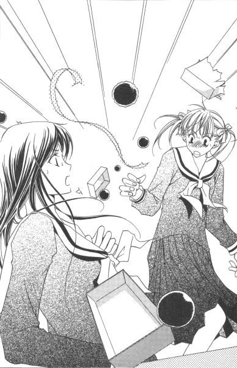
「口が曲がるほどすごい味のはずれが混じっています。それでびっくり」
「馬鹿ね」
祥子さまは本気にしていないようで、笑いながらテーブル上の一つを拾って口に入れた。
「あっ！」
止める間もなかった。
「大丈夫よ。テーブルの上だもの」
「はぁ」
祥子さまが一度落ちた物を口にするということも確かに驚きなのだけれど、それより何より食べられてしまったチョコの味の方がとても気になった。
「......どうですか」
祐巳は恐る恐る聞いた。
祥子さまは目を閉じて、口の中でチョコレートをしばらく転がし、そして再び目を開けて言った。
「おいしかったわ」
ほー、っと祐巳は胸をなで下ろした。
「よかった。じゃ、それはあたりです」
制作者の祐巳でさえ、よーく見なければあたりとはずれの区別がつかない二種類のチョコ。
確率は二分の一。さすが、祥子さま。運が味方についている。
祥子さまがはずれを口にしないように、祐巳は素早くテーブルの上のチョコを拾った。拾いながら、一応目を凝らして選り分ける。もしもう一個食べたいと言われた時のために、比較的きれいな成功例の方をピックアップしておかないと。
全部で二十個あったチョコレートは、テーブルの上に十五個転がっていた。
「あたりだと、何かいいことがあるのかしら？」
「えっと」
しまった、考えていなかった。──と、いうより「びっくりチョコレート」なんていうネーミングもたった今思いつきで言っただけの話だった。しかし、あたりやはずれといえば、くじ。くじには景品がつきものなのだった。
屈んで床に落ちたチョコを拾いながら、どうしたものかと思案した。考えてみれば、おいしいチョコレート自体が景品だったんだけれど、そこまで頭が回らなかった。
残りのチョコは、流しの下とか扉の側とか、色々な所に転がっていた。日頃ちゃんとお掃除しているけれど、部屋中転がると表面のココアパウダーもどっかいっちゃって、代わりに細かい砂や埃が無惨について何だかわからない物体になっていた。失礼だけど、和菓子のゴマよごし団子にちょっと似ている。
ふー、と息を吹きかけて、表面をきれいにする。深追いして食べる為ではない。一応、あたりとはずれをチェックするためだ。
三つまでは簡単に見つけたけれど、あと一つが見つからない。今のところあたりが九個、はずれが九個見つかっている。祥子さまが食べたのがあたりだから、どこかにはずれが一つあるはずだった。
もしや、と思ってテーブルの上をもう一度確認する。
すると、果たしてチョコレートは見つかった。無惨に引き裂かれた箱の中の、隅に引っかかったまま、奇蹟のようにそれはひっそりと隠れていた。
「お姉さま」
祐巳は、不思議な気持ちでそのチョコレートを摘み上げて言った。
「あたりを引きますと、もれなく私との半日デートがついてくるんですけれど──」
最後の一つは、どういうわけか「あたり」の箱から出てきたのだった。
黄薔薇交錯
十八時五十分、江利子
黄薔薇さまこと、鳥居江利子は自宅の自分の部屋で悩んでいた。
目の前にはよく洋菓子屋さんで用いられるような、組み立てると取っ手が上方に飛び出してくる、例の紙の箱が置かれている。大きさは、去年のクリスマスに買ってもらった、ローヒールの靴が入っていた箱の丁度半分くらいだろうか。でも半分といっても短い方の辺を切った感じで、かなり細長い直方体の箱である。
「ということは、やっぱりトリュフではない......、と」
中から見ても、外から見ても。いや、箱を開けて中身を見た時点で、現物が何であるかは決定的なわけだけれど。一応、もう一度外観からも確かめてみたかっただけである。深い意味はない。
それは、ほんの十分程前に妹である支倉令が届けにきた、バレンタインデーのプレゼントだった。雪がちらちら舞っている中、自転車を飛ばしてやって来たのだ。
学校で渡せなかったことを令はしきりに気にしていたが、江利子の方は別に何とも思っていなかった。
何しろこちらは、受験生で近頃学校を休みがちな身。令は、来るかどうか確信が持てなかったのだろう。だったらチョコレートのようなデリケートな食品は、持ち歩かれるより冷蔵庫などで保管される方が好ましいではないか。都合のいい事に、令の家は学校から徒歩数分といった場所にあることだし。
そりゃ、宝探し大会がお開きになって下校する段になっても令からチョコレートを渡される気配がなかった時は、少々不安にはなったけれど。昇降口まで追いかけてきて、「夜、ご自宅に伺いたいのですが」と耳打ちしてくれた時点で、その不安は一気に解消された。
家にあげてお茶の一杯も振る舞うべきところだったが、彼女が頑なに辞退したので無理には引き留めなかった。令はこれから島津由乃の家に行く、と言っていたから。
由乃ちゃんの家は令の家の隣にある。近場を先に済ませてもよさそうものだが、年長者である自分を優先して先に届けてくれたわけだ。体育会系で律儀な令らしい。もちろん、悪い気がしなかった。
「でも、これは──」
令が持参したのだから、間違いなく令からのプレゼントであろう。それも手作り。だから、そのこと自体に疑問はない。問題があるとすれば──。
「これ、本当に私宛てかしら」
江利子は、約十分の間にすでに九回も呟いた言葉を吐き出した。それで、今回が記念すべき十回目。そんなこと本人は気づいていないことだが、一分に一回の勘定になる。
「もしかして間違えた、とか」
令が贈る相手によって、プレゼントの内容を替えていることは知っている。その人の好みに合わせて作ってくれるのだ。だから、去年のトリュフチョコはおいしかった。ビターで甘さが抑えられていて、本格的な大人の味、という感じだった。
あんなにおいしいトリュフは食べたことがなかったから、その場で大絶賛したら、令は嬉しそうに「そんなに喜んでもらえるなら、来年もトリュフにします」と言ったのだ。いや、「来年もトリュフにしましょうか」だったろうか、語尾まで記憶にないけれど。でも、どちらにしても大差ない。江利子は今年も絶対にあのトリュフだって、信じて疑いもしなかった。
「だからこれは。どちらかっていうと、由乃ちゃんの領分なのよね」
確証はない。せめてメッセージカードなりともついていたら、はっきりしたのに。
由乃ちゃんのために、令は去年チョコレートクリームたっぷりのケーキを作ったと聞いている。お子さま向けには質より量。......令の作る物だから、質も悪いはずないけれど。
「でも、普通、間違えないわよね。箱の大きさが全然違うんだから」
いや、令ならやりかねない。しっかりしているようで、あの子は少々抜けているところがあるから。普段はちゃんと気配りできるのに、いざ何かあると使い物にならない。猪突猛進タイプだから、一つのことにかまけると他がお留守になるのだ。しかしそういう部分、姉としては結構気に入っていたりして。
「そうねぇ」
トリュフが好評だったから、今年は大増量してこの箱くらいになってしまった、とか。で、由乃ちゃんの分と入れ替わってしまった、と。その線でどうだろう。かなり近い推理ではないか。
時計を見る。
七時五分前。
令が訪ねてきたのが六時四十分だったから、かれこれ十五分というところか。あと五分もすれば令は自宅に戻るだろう。気づくとしたらその後、島津家へプレゼントを届けにいく時。たとえ令が知らずに渡してしまったとしても、箱を開いた由乃ちゃんが当然間違いを指摘するはずだ。──そう。もし、中からトリュフチョコレートが出てきたとしたら。
「うーん」
今更、受験勉強なんかしないから構わないけれど、何も手に着かなくなってしまった。
こちらから令に電話をかけて確認したいのは山々だが、なぜ間違いだと思ったかを聞かれた時の答えに窮する。トリュフじゃなかったから、というのが正直な理由だけれど、そうなると自分がトリュフでなければ認めない心の狭い人間みたいで嫌だ。
そうではない。令が作るお菓子は、何でもおいしいし好きだ。ただ、間違って手渡されたとわかったのなら、それを知らせない方が不親切ではないか、そう考えただけなのだ。
もしもし、チョコレート間違えていない？ ──嫌だ嫌だ。もっと、スマートにいかないものか。
『江利ちゃん。お夕飯だけど』
インターホンからお母さんの声がした。
「はーい。今行きます」
取りあえず、考えることとプレゼントを机の上に残して部屋を出た。そのうち、令から電話がかかってくるかもしれない。
キッチンから立ち上ってきた空気に、デミグラスソースの匂いを感じる。今夜はビーフシチューだ。
「あ、いけない」
江利子は階段にさしかかっていた足を止め、部屋に引き返した。
「チョコレート、チョコレート」
クローゼットに隠して置いた紙袋をゴソゴソと取り出す。愛するタヌキ親父と変わり者の兄貴たちに。
鳥居家の一人娘からのチョコレートを楽しみに、我が家の男共は今日は全員が早くご帰還しているようだから。
十九時十八分、由乃
島津由乃は、自宅の自分の部屋で悩んでいた。
コタツの上には、ケーキ屋さんでケーキを三個とか五個とか買った時に入れられるような、取っ手のついた紙の箱が置かれている。
それは、学校では姉であり、私生活では血のつながった従姉である支倉令からのバレンタインデープレゼントだった。
「......おかしい」
去年は、帽子の箱くらいの大きさはあった。だから今年は、ものすごいサイズを覚悟していた。なのに。
「靴箱の半分じゃない。どうなっているの」
祐巳さんにはああは言ったものの、毎年大きくなるチョコレートケーキ、重荷である反面楽しみにしていた部分も多少はあったのだ。ケーキはいつまで成長し続けるのか。果てはいつやって来て、どのような形で決着するのだろうか、と。
「それが、まさか今年だっていうわけじゃ──」
由乃はもう一度箱を見つめてから、考え込んだ。
去年の秋、いろいろあったから──。プレゼントの大きさで、愛情を計れるものでもないのだけれど。いつになく、気弱になっている自分がいた。
「......まいったなぁ」
これをもらった時のことを振り返る。その場でだったら、「今年は箱が小さいね」なんて冗談めかして聞けたかもしれなかったけれど。ちょっとけんか腰だったから、あの時は受け取った箱の大きさなんかにまで気が回らなかったのだ。
けんか腰といっても、実際のところは、いつものように由乃が一方的にふくれていただけである。
令ちゃんが（それほど）悪いわけではないけれど、無性に腹が立ったんだからしょうがない。宝をあんな場所に隠すから、副賞の半日デートをミーハーな一年生に横取りされたというのに。よくも、へらへら笑って顔を見せられるものだ。
思い出したらまた腹が立ってきたけれど、今はこの箱の中身について考えないといけないので、由乃は怒りを取りあえず脇に置いておくことにした。
そう、問題は中身なのだ。
「チョコレートケーキ、じゃないんだよね」
箱を開けてみて、またため息。これは、どういうことなのだ。
大きさのみならず、内容が一新している。
何かの示唆だろうか。いや、令ちゃんがそんな手の込んだことをするとは思えない。
「わかんなーい」
さすがの名探偵由乃も、お手上げだった。それもそのはず、バイオリズムが悪いのか今日の推理力は最低なのだ。何せ、世界で一番よく理解しているはずの令ちゃんが宝を隠した場所すら当てることができなかったくらいだから。
こんなことなら、さっき、あんなに強くあたらなければよかった。なーんて思っても、後の祭り。こちらから怒鳴り散らして別れた手前、今更お隣に電話なりして、プレゼントの内容を質問するわけにもいかない。
それに、こちらがあげたプレゼントのことを考えると、悲しいかなあまり強気にも出られなかったりして。天秤ばかりにかければ、令ちゃんからのプレゼントの方が遙かに重い。見た目も、重量も、そしてたぶん味も。
「わかんないから、もう食べちゃおっかなー」
実は、お父さんが帰ってきていないから、お夕飯がまだなのであった。だから今現在、結構お腹が空いている。食事の前に甘い物を食べるのは、よくないって知っているけれど。一口だけなら、味見したって罰が当たらないんじゃないか。
「あれ？」
食べよう、と決心した時、ふと、思い出した。
「令ちゃん、さっき黄薔薇さまの家に行ってきた、って言っていたよね」
だから、届けるのが遅くなった、って。いつもだったら学校から帰ってすぐにプレゼント交換していたのに、ずっと音沙汰ないからどうしたのかって思っていたんだ。今日は宝探しの関係で登校が別だったというのに、下校時までもさっさと先に帰っちゃうし。そのこともご機嫌斜めの一因ではあったんだ。
「もしかして、黄薔薇さまのと間違えた......!?」
いや、いくら何でもそんなミスは──。
「あり得る。令ちゃんなら」
図書館の、江戸の物価なんたらっていう本に、カード隠してしまうほどうかつな人間なのだ。もちろん、それが自分に対する気持ちの表れだということは由乃も十分すぎるほどにわかっている。しかし、そういう気遣いはどうかと思う。令ちゃんファンが見つけてくれたから、どうにかなったけれど。誰にも見つけられなかったら、いや最悪由乃が見つけてしまったら、どう取り繕っていいかわからなかったではないか。
令ちゃんは、慎重なようで抜けているところがある。
「時たまとんでもないミスを犯すからなぁ」
箱の大小なんて、目に入っていなかったかもしれない。ああ、絶対そうだ。そうとしか考えられない。去年黄薔薇さまに贈ったのはビタートリュフを数個。だったら、せいぜい箱はお弁当箱くらいの大きさだったろう。一年後の今年、多少大きくなったとすればまさにこのサイズ。
我ながら、何てすっきりした推理なのだろう。
「だとしたら、迂闊に食べられない、か」
箱を閉じて、腕組みした。そのうち令ちゃんが気づいて、電話してくるかもしれない。もしかしたら、今頃は黄薔薇さまが令ちゃんに連絡いれているかも。──特大チョコレートケーキが届いているとしたら。
その時には、すぐに返せるようにしておかなくては。もらってすぐに食べてしまったなんて知られたら、がっついているようで嫌だ。
もう少し、様子をみてみようか。由乃は、コタツでゴロリと横になった。
「令ちゃん、ご飯食べたかなぁ」
家がお隣同士とはいえ、お互いの部屋の灯りは見えない。今、憎らしい最愛の従姉は、どこで何をしていることやら。
十九時三十分、令
「お父さんの後、すぐお風呂に入っちゃいなさい」
お母さんがそういうので、令は部屋でバスタオルとか替えの下着とか準備してから風呂場に向かった。
「お、令。今日は済まなかったな。みんな喜んでいたぞ」
廊下で、身体中から湯気を立ち上らせているお父さんとすれ違う。今日の稽古は、夕方のクラスでお終いらしい。
「いえ。お口に合ったならよかったけど」
「バウンドケーキっていうのか、あれ」
「パウンドケーキ」
バウンドでは、飛び跳ねてしまう。頭の中で、ケーキがゴム鞠みたいにぴょんぴょん跳ねた。
「去年の煎餅もうまかったが、今年のもイケたな」
「そうですか」
去年のバレンタインデーに作ったのはクッキーなのだが、訂正しなかった。父は剣の道に生きる人間。お菓子の種類を詳しく知っている必要なんかない。
「簡単ですから、また作りましょうか」
「そうだな。......いや、そんな暇があったら稽古しろ」
「はい。では、気分転換に」
「うむ」
バレンタインデーの日は、稽古に来ていた父の門下生に菓子を振る舞う。最初は母が、父に内緒で稽古の済んだ年若い子供たちを母屋に呼んで、チョコレートを口の中に放り込んでいたのだが、いつの頃からか令の作った菓子が大っぴらに出回るようになった。
『娘が多く作り過ぎたから、食べなさい』
そう言ってふるまう父の体面を保つため、令は毎年多目に作ることにしている。
何が幸いするかわからない。その習慣のお陰で、今年のバレンタインデーは命拾いしたのだから。
「これから風呂に入るのか」
「ええ」
「よく温まりなさい」
「はい」
軽く会釈して、風呂に向かう。寒稽古などに慣れているため、寒さには比較的強いと思っていた令だが、さすがに雪の中往復四十分自転車を走らせたのは厳しかった。粉雪がちらちらと降っていただけだったから地面は凍っていなかったが、手足がかじかんでハンドルさばきが危うくなる場面が何度かあった。
浴室は父が湯船の蓋を開けはなっていった為に、程良く温まっていた。桶でお湯を汲んで、身体にかける。熱めのお湯は、冷えきった皮膚には少しピリピリと感じられた。
極楽極楽。
湯に肩まで浸かると、思わずうなり声が出た。声が父親のそれに似ていて、少し複雑な気分になる。
でも、よかった。
お姉さまにも由乃にも、何とかバレンタインデーのプレゼントを渡すことができたのだから。
マリア様の心をフルコーラス歌っただけで湯船を出た。じっと湯に浸かっていると、眠り込んでしまいそうだ。
メレンゲを作る時に使う筋肉は、剣道で使う筋肉と違うのだろうか。湯を汲み上げるのに、何だか腕が重かった。
「シャワー欲しいなぁ」
髪をシャンプーする時、いつも思う。けれど檜のお風呂に似合わないから、と頑固親父が首を縦に振らない。純和風へのこだわりは評価したいが、真夏の稽古後などはもう切実な問題である。父は自分の子供が年頃の娘だって、考えたことがあるのだろうか。内緒で、由乃の家のシャワー使いにいっているくらいだ。
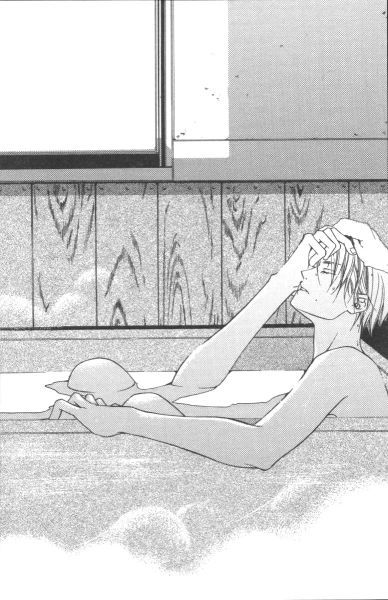
「由乃か」
頭の上から足のつま先まですっかり洗って、再び肩までお湯に浸かり、ふと思い出す由乃のふくれっ面。
令は、湯船の中でくすくすと笑った。由乃は、自分以外がデートの相手に決まったことが面白くないのだろう。「馬鹿」と言いながら、手作り（らしき）チョコレートを投げて寄越したところは可愛い。市販のチョコレートを湯煎で溶かして型に流し込むという、初歩の手作りチョコだったけれど嬉しかった。去年の市販チョコ型抜きバージョンに比べたら、進歩の跡が伺える。
令は、身体が程よく温まったせいか、脳味噌も相当溶けかかっていた。おまけに妙な達成感に酔っていたため、プレゼントを受け取った人たちがどのように感じているかなんて、その時考えもしなかった。
二十三時十分、江利子
いけない、うたた寝をしてしまっていた。江利子はうつ伏せていた机から、顔を上げた。
時計を見ると、すでに夜の十一時を回っている。
いくら何でも、今から令が電話をかけてくることはあるまい。ということは、このパウンドケーキは自分の物として確定、ということだろうか。
「ふーん」
こんなことなら、さっき家族でおいしい紅茶を飲んだ時にお茶請けとして出せばよかった。寝る前に食べたら、胃がもたれるだろうか。
「それにしても」
箱に入ったケーキを眺めながら、これは本当に自分宛てだったのだろうか、と再度考える。
本当はやはり渡し間違いになっていたのだが、令が気づいた時にはすでに由乃ちゃんがトリュフを食べてしまった後で。だから仕方なくそのままにしておいた、とか。そっちの線の方が、よほど真実味がある。
「でも、それを確認する術はないのよね」
つぶやきながら、江利子は箱を指で弾いた。
どうしても気になるなら、明日、由乃ちゃんに令からのプレゼントの内容を聞いてみるしかない。しかしトリュフだったとして、それがどうなるものでもないけれど。
「......やめた」
ああでもないこうでもない、と一人ケーキとにらめっこしているのが馬鹿馬鹿しくなったので、いっそのこと食べてしまうことに決めた。このままだと、二月十四日が終わってしまう。
しかし、机の上に置かれているのは、チョコチップが散りばめられているパウンドケーキがどーんと一台。切り分けるためのナイフなりを取りにキッチンに行くのが面倒だったので、指でちぎって口に運んだ。
「いただきます」
ほんのり甘いチョコチップパウンドケーキは、トリュフでもビターでもなかったけれど、そこら辺の洋菓子屋のケーキよりずっと深い味がした。
由乃ちゃん好みの味、ってこんな感じなのだろうか。
結構イケていたから、ただ「ふーん」とだけつぶやいた。
二十三時十分、由乃
ほんのり甘いチョコチップパウンドケーキは、チョコレートクリームがたっぷりかかってはいなかったけれど、そこら辺のケーキ屋のケーキよりずっと深い味がした。
「ふーん」
結局、令ちゃんから電話はかかってこなかった。間違って渡されたケーキだったとしても、もういい。どうせこの時間になっていたなら、黄薔薇さまだって味見した後だろう。由乃だって居眠りさえしなかったら、もっと早くに食べていた。ご飯食べて、宿題やって、お風呂に入って、コタツの中でまたちょっとゴロリとなっただけのはずが、この時間だ。
「結構イケるじゃない」
一口のつもりが、二口になり三口目に手が伸びる。止まらなくなりそうだったので、四口目をちぎってから箱を閉じた。
「おいしいところが、悔しいんだよなぁ」
つぶやきながら、由乃は箱を指で弾いた。
三姉妹の上と下というのは、真ん中を挟んで、なかなか複雑な関係にあるのだった。
二十三時十分、令
「そういえばお姉さまは、トリュフが好きだからまた作って欲しいようなこと言っていたっけ」
令がそれを思い出したのは、夜の十一時。ベッドの中に入ってからのことだ。
「ま、でも渡しちゃったんだから仕方ない」
オリンピックじゃないけれど、渡せたことに意義がある。──そう、令は今年のバレンタインデー、間一髪で姉妹へのプレゼントを渡しそびれるところだったのだ。
今朝、学校に登校した時のことを思い返すと、今でも冷や汗が出る。マリア様の前でチョコを受け渡ししている生徒を目撃した時、はじめて大変な忘れ物に気がついたのだ。
宝探しのことで頭が一杯で、すっかり忘れていた。自分の、個人的なプレゼントのことを。
宝探し当日ということで由乃とは別に登校していたのをこれ幸いと、上履きに履き替えるなり事務所の前の公衆電話に飛びついた。お母さんに、小麦粉とかチョコチップとかの買い物を頼むためだ。お父さんや門下生のためのケーキを作る材料が足りないから、とだけ理由を告げた。
うちのお母さんと由乃のお母さんはツーカーだから、下手なことを言えない。すぐに由乃に筒抜けになってしまう。
で、帰り次第、すぐさまケーキを焼いた。手間がかかることはできないから、プレーンなパウンドケーキ種にチョコチップを蒔いてオーブンに放り込んだのだ。
三台分ずつ、二回。最終的には、計六台のケーキを焼き上げた。それにしても、うちのオーブンが大きくて助かった。
しかし手作りケーキの大量生産は、手間はともかく体力がいる。おまけに時間配分とか頭を使いながらだから、心身共に疲れた。無心で素振りする方がなんぼか楽か。
ともあれ、今日一日本当によく働いた。
「ま、よしとしよう」
寝返りを打って、つぶやく。
「お姉さまだって、一年前のことなんて覚えていないかもしれないし。トリュフは来年のバレンタインデーに作ればいいや」
令は、ひたすら眠かった。身体が、休息を求めている。
だから、他大学へ進学予定の黄薔薇さまにリリアン女学園での「来年」がないことなんかを、思い出す間もなく寝息をたて始めてしまった。
ついでにいうなら、由乃に作っていたケーキが年々大きくなっていたということさえ、令はまったく気がついていなかったのである。
一つのことにかまけると、他がお留守になる。
慎重なようで、抜けている。
さすがは姉妹。
令の評価は、二人とも的を射ていた。
あとがき
──何も思い浮かばない。
こんにちは、今野です。
私の場合、あとがきを書く時、何か一言ぽーんと浮かんでそこからスタートすることが多いのですが、今回なぜか何も出てきません。
困ったな。今回、五ページもあるのに。......埋まるのかな。
だったら「説明しなきゃ、と思っていること（『マリア様がみてるロサ・カニーナ』あとがき参照）」を書けばいいじゃない、って自分で突っ込み入れたいところなんですけれど。何ていうのかな、なぜかそういう気分じゃなくなったので今回はパスね。あとがきで解説入れるのもやっぱり何だかなぁ、って感じだし。あとがきって、忘れた頃に「あれ書けばよかった」とか結構思うものなんですけれどね。
さて、どうしましょう。
あ【あとがき】
──なーんてやるには、ページ足りないしね（笑）。そんなことばっかりやっていたら、怒られちゃうか。
そうだ、「なかきよ」の話をしないといけません。
『ロサ・カニーナ』の発売以降に届けられたお手紙の大半に、「なかきよ」についての回答が書き添えられていました。
どうもありがとう。私は非常に喜びました（笑）。
で、あとがきを書いている時点（今は一月の後半だと思ってください。皆さんと時差が生じてしまうのは、出版物としては避けられない事情です）で私の手もとにある手紙の結果発表をいたしますと、読者レポーター（？）の一〇〇パーセントが「やりません」派でした。──ああ、私の先祖はどこからそれを仕入れてきたのでしょう。
江戸時代には「なかきよ」から始まる回文と一緒に宝船に乗った七福神の絵が描かれている紙が売り歩かれていたようです（その存在は、私も以前から知っていたのですが）。だからたぶん、紙で船を折るという行為は、その辺から変化していったものなのでしょうね。暇がないので、調べませんけれど。
ところで。
まるで「なかきよ」情報とペアのように書かれていて笑ってしまったのが、節分の太巻き情報でした。実際、そっちの方が情報量多かったんですよ。友人が手紙やＥメールで知らせてくれたり。知り合いの作家さんが年賀状で回答してくれたり（！）。
......かなりメジャーだったようです。地域的には、主に日本の西の方に広まっている風習らしい。だって、皆さんまるで「お正月にはお餅を食べます」みたいなノリで報告してくれるんですから。もう、かなり定着している感じ。
総合すると。
太巻きを食べる時の向きはその年の恵方（吉方）である、らしい。で、恵方は毎年替わる、らしい。
太巻きを食べる時しゃべってはいけない、らしい。または、そんな決まり事のない地方もある、らしい。
太巻きは鬼の金棒に見立てられている、らしい。（←なるほど！）
その地方のスーパーやコンビニでは、節分になるとチラシなどを用いて大々的に宣伝する、らしい。
──というところでしょうか。
書物などで調べれば、その起源や正確なしきたりなどが書かれているのでしょうが、私としては人々の生活の中で変化しながら根付いて現代に残っているという、そのこと自体に興味があったので「うちではこんな風に」という情報で十分です。変化は文化ですもんね。
皆さん、情報ありがとうございました。
さて、今回いつもとちょっと勝手が違います。
まず、タイトルのしっぽに「前編」という文字がくっついている以上、これは前後編の前編になります。『マリア様がみてる』初の前後編、です。
一応オムニバス形式という感じで、すべてひとまとめにして『ウァレンティーヌスの贈り物』というタイトルをつけました。というわけで、中身に表題と同じタイトルのお話はありません。後編も、たぶんそうなるでしょう。
そういえば、忘れちゃいけない蟹名静嬢についてですが。
あれっきりの登場と思いきや、今回もちゃっかり出てきていますね。イタリア行きは決定らしいけれど、どうやら卒業式まではリリアンにいるらしい。そりゃ、そうか。白薔薇さまがいるから学園に留まっていたんだもん。白薔薇さまを送り出してから、彼女は日本を離れるつもりなのでしょう。
しかし、相変わらず彼女は大胆ですね。私の中で「もったいないキャラ」になってしまいそう。ちなみに『マリア様がみてる』の「もったいないキャラ」はダントツで白薔薇さまです。
おや。
だらだら書いていたら、五ページ埋まってしまいました。そういうものかもしれません。
二千年だって、何となく来ちゃいましたしね。......ということは、次の締め切りもあっという間に来るのだな。たぶん。
では、久しぶりに次回の予告。
当然、『マリア様がみてる ウァレンティーヌスの贈り物』の後編いきます。
『びっくりチョコレート』の後日談とかこぼれ話とか、そんな感じのお話をいくつか詰め合わせてお届けすることになるんじゃないかな。これから書くから、断言できないけれど（笑）。
若葉がまぶしい頃に、またお会いできたらいいですね。
ごきげんよう。
底本：「マリア様がみてる ウァレンティーヌスの贈り物（前編）」コバルト文庫、集英社
2000年3月10日第1刷発行
2003年1月30日第8刷発行
******* 底本の校正ミスと思われる部分 *******
底本p042
参加者を募るためには、優勝商品に魅力がなければだめなの。
賞品
底本p048
「絶対、絶対、絶対反対！ そんなの変！ 一個人のプライベートな時間を商品化するなんて、間違ってる！」
異論はありそうだけど、素直に「賞品化」としたほうがいいと思う。
底本p124
そこは滅多に人が訪れない場所だいうことを、祐巳は知っている。
底本p154-155
向かって右にプリントとされた文字に視線を落とすと、
プリントされた
底本p208
扉を開けた瞬間、白薔薇さまが待ってましたって感じで、祐巳に飛びついたきた。
底本p223
近場を先に済ませてもよさそうものだが、
********************************************